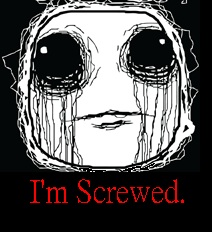
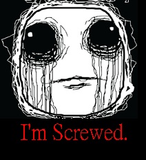

[已完結] 【DRYH+HR】【非官方酒吧團】金銀雙匙的幻境臨摹
北楼真茂 小學部藍綵生
| 301☆大中小簡繁發表於 7-2-2012 11:17 PM 只看該作者 |
| 北楼真茂 小學部藍綵生
| 301☆大中小簡繁發表於 7-2-2012 11:17 PM 只看該作者  引用:奧茲點點頭：「就交給你吧。」 引用:「好……你想玩遊戲？我就陪你玩！」紗姬語畢，立刻迅速的就座。 |
| 藍刺蝟 掛機刺蝟娘  新手輔導員
| 302☆大中小簡繁發表於 7-3-2012 01:18 AM 只看該作者 引用:唔… 引用:哈絲默爾走進房間後，看了看房間的布置──詭異的人偶、五人的圓桌、以及似乎不太爽的偵探。 引用:玄子東望望西望望，坐在最後的座位上（Ｂ）。 引用:「多謝了，」吉坦看紗姬沒反應，便隨即拉了中間的椅子出來，坐了下去，「那就準備開始吧，偵探先生，我在（Ａ）的位置待命了。」  好，在開始之前－－ 圖  A=吉坦（傀儡） B=玄子 C=皮爾諾 D=孟斯特 E=哈茲默爾 「首先，我和玄子先『取食』一分鐘後停止。」他說道，同時使用通訊器讓吉坦也聽得見，「時間由我來計算。之後皮爾諾與哈茲默爾再開始取食，一分鐘後皮爾諾停手換玄子繼續。再來，旅行家和我開始取食，之後我停手再換皮爾諾。時間－－剛好五分鐘。」 「口頭解釋不清楚，現在也沒空畫圖說明了。」孟斯特說，「動作時間到了我會給出指示，我說『吃』就吃，『停』就停。雖然我不清楚那聲音有甚麼特別之處、對人體有甚麼傷害，但還是暫且照著規則走吧。」 接著他看了眼手錶，確認從圖托理雅爾結束傳話到現在時間過了多久。 －－－－－－場外線 等一下要怎麼進行……？感覺會拖很多回合  請GM給一下時間吧。 |
| Edward_Knave 以「書記」自稱者  初等部藍綵生
| 303☆大中小簡繁發表於 7-3-2012 03:59 AM 只看該作者 【系統提示】GM的回文次數將與回合編號脫鉤，回合編號將在GM發文時同時表示。 當任意一名角色拿起管子，第二計時系統將隨即啟動。 此後，一回合的預期時間將為三分鐘左右。在圓桌之膳方面，若眾人行動沒有衝突，則如常進行，若行動有所衝突，則作出隨機判定，決定最終結果，並施予輕微延遲，依延遲程度為相關鳴響的理念判定賦予修正值。 三人組無法透過聽覺與聲音互相溝通，但三人組成員各自與四人組的通訊不受影響。 【說明】「耳塞」或等效的道具可以為接下來，與聽覺相關的理念判定賦予-10修正(使骰點-10)。 雅俗之辯：警號生效前，一秒鳴響為1d24-6，兩秒鳴響為1d24-3，三秒鳴響為1d24。警號生效時，每回合鎖定為1d24。 圓桌之膳：警號生效時，每回合1d24。 ～～～～～ 第一章 隱伏的怪力亂神
～～～～～～～～～～～～ 四人組：皮爾諾、孟斯特、玄子、哈絲默爾 孟斯特所知 引用:接著他看了眼手錶，確認從圖托理雅爾結束傳話到現在時間過了多久。 四人在預備室正式會合，一同就座。 就在此時，燈光忽然轉暗，只剩下圓桌周邊仍然維持著先前的光亮。 除了面前的圓桌、鐵盒、粗管、同伴與傀儡之外，就看不清其他的事物。 「或食或思，由您執筆之處在此開始。」老人之聲從傀儡口中傳出。 話語剛落，又是無比的寧靜，只有四人的呼吸聲仍在預備室裡縈繞。 三人組：奧茲．梁、奈良原紗姬、吉坦．戴斯 引用:「是你搞的鬼！對吧!?」紗姬憤怒的指著圖托雅理爾。 回復本來聲線的圖託理雅爾跪在地上，再咳了幾聲，隨即嚎哭，並將寫著「被逼傳話」四字的紙遞到紗姬面前。 「…我…到…大門……看看……」 他柔弱的吐出一句之後，隨即爬出三人房。 三人就座之時，奧茲、紗姬、吉坦三人同時發現身邊的聲音迅速歸於死寂，除了自己的呼吸之外，就是絕對的寂靜。 同時，燈光轉暗，除了面前的書桌與屏幕之外，眾人都看不見其他的事物。 三人都可以透過屏幕看見的皮爾諾、孟斯特、玄子、哈絲默爾四人的雙手俱在桌上就位。 奧茲所知 奧茲面前的兩個按鈕忽然亮起，並交互閃爍，閃爍愈來愈快，似乎正在催促奧茲作出決策。 「或雅或俗，由您執筆之處在此開始。」老人沙啞的聲音隨著閃爍的按鈕，在紗姬的耳畔響起。 然而，奧茲相當清楚知道圖託理雅爾不在三人房，他找不到聲音的具體來源。 ＜＜請以悄悄話告知GM：奧茲即將作出的決定(雅／俗)，並避免在回覆之中公開行動內容。＞＞ 紗姬所知 紗姬面前的兩個按鈕忽然亮起，並交互閃爍，閃爍愈來愈快，似乎正在催促紗姬作出決策。 「或雅或俗，由您執筆之處在此開始。」老人沙啞的聲音隨著閃爍的按鈕，在紗姬的耳畔響起。 然而，紗姬相當清楚知道圖託理雅爾不在三人房，他找不到聲音的具體來源。 ＜＜請以悄悄話告知GM：紗姬即將作出的決定(雅／俗)，並避免在回覆之中公開行動內容。＞＞ 吉坦所知 「或食或思，由您執筆之處在此開始。」老人沙啞的聲音在吉坦的耳邊響起。 然而，吉坦相當清楚知道圖託理雅爾不在三人房，他找不到聲音的具體來源。 ～～～～～～～～ 四人組：一樓平面圖(如有錯誤請提出更正) ┌───┬───┬──┬────┬───┬──┬───┬──┬─────────────┬─┬──┬────────────────┐ │╲ │ ╱│██│ │ │ │□□│◆ ◆ ◆ ◆ │ │██│ ● │ │ ╲ │ ╱ │██│ │ │ │□ └─────────────┘ │██│ ◎ ╭─╮ │ │ ╲│╱ │██├ ──┤ │ ├───┤□ │██│ ╭───╮ │ ├───█───┤██│ │ │ │□ ┌─────────────┐ │██│ δ╭│ │╮γ │ ├───┼───┤██│ │ │□ │ ◇ │ │██│ ││ ││ │ ├───┼───┤██│ │ │ │□ │ │ │██│ ╰│ │╯ │ ├───┼───┼──┼ ──┴───┘ └┬──┤□ └─────────────┘ └──┘ ╰───╯ │ ├───┼───┤┌┐│ │┌┐│□ │ β╰─╯α │ ├───┼───┤│││ ││││□ ┌─────────────┐ │ │ ├───┼───┤└┘│ │└┘│□□│◆ ◆ ◆ ◆ │ │ │ ├───┼───┴──┴───………………┬┬┬┼┬┬┼──┼───佈───告───欄─┼─┬──┴────── │ ├───┤ │││││││ └───────────────┘ │ │ │ │││││││ │ │ │ │││││││ │ │ █────────────────█┴┴┴┴┴█ │ │ │ │ ╭─╮ │ │ ○ ○ │ │ ┌──┤ │ ╭───╮ │ │ │ │ │ │ │ ○│ │ │ │ │ ○ ○ ○ ○ ○ ○ ╰───╯ ○ │ │ │ │ │ ╭───╮ ╭───╮ ╭───╮ ○ ○ ○│ │ │ │ │ │ │ │ │ │ │ │ │ │ ╰───╯ ╰───╯ ╰───╯ │ │ ○│ │ 大 ○ ○ ○ ○ ○ ○ ○ ○ ○ ○ │ │ │ │ ╭───╮ ╭───╮ ○│ │ │ │ 門 │ │ ☆ │ │ │ │ │ │ ╰───╯ ╰───╯ ○│ │ │ │ ○ ○ ○ ○ ○ ○ ○ ○ ○ ○ │ │ │ │ │ ╭───╮ ╭───╮ ╭───╮ ○│ │ │ │ │ │ │ │ │ │ │ │ │ │ │ │ ╰───╯ ╰───╯ ╰───╯ ○ ○ ○│ │ │ │ │ ○ ○ ○ ○ ○ ○ ╭───╮ │ │ │ │ │ │ │ ○│ │ │ │ │ ╰───╯ │ │ │ │ │ ○ ○ ○│ │ │ │ │ │ │ │ │ │ ╭─┬─╮ ○│ │ │ │ │ █───────────────█┬┬┬┬┬█ │╲│╱│ ├─┤ │ │ │ │ │││││││ ├─┼─┤ ╭─╯ │ │ │ │ │ │││││││ │╱│╲│ ╭─┤ │ │ │ ├───┤ │││││││ ╰─┴─╯╭┬╯█╰╮ │ │ │ ├───┼───┬──────── ◎ ┼┴┴┴┴┴┴─ ┬ ──────────────┬╯╰╮██│ │ │ │ ├───┼───┤□□□□※※ │ │ │ │█╭╯ │ │ │ ├───┼───┤□□□□※※ │ │ │ ╰─╯ │ │ │ ├───┼───┼──┐□※※ │ │ ┌──┼────────┘ │ │ ├───┼───┤██│□※※ │ │ │██│ │ │ ├───┼───┤██│□※※ │ │ │██│ │ │ ├───┼───┤██│□※※ │ │ │██│ │ │ ├───█───┤██│□※※【〔※〕】│ │ │██│ │ │ │ ╱│╲ │██│□※※※※※※※※ │ │██├─────────────┘ │ │ ╱ │ ╲ │██│□※※※※※※※※ │ │██│ │ │╱ │ ╲│██│□□□□□□□□│ │ │██│ │ └───────┴──┴────────┴──────────┴──────────────┴──┴────────────────┘ α：皮爾諾 β：孟斯特 γ：玄子 δ：哈絲默爾 ◎：圖託理雅爾 ◇：鐵盒 ☆：收納器 四人組：二樓平面圖(如有錯誤請提出更正) ┌───┬───┬─┬─────┬────┬───┬────┬───┬────┬───┬───┬─┬──┬──┬──────────┐ │╲ │ ╱│ │ │ ╲╱ │ │ ╲╱ │ │ ╲╱ │ │ │□│ │ │ │ │ ╲ │ ╱ │ │○ │ ╱╲ ├───┤ ╱╲ ├───┤ ╱╲ ├───┤ │□│ │ │ │ │ ╲│╱ │ │ └────┤ ○ └────┤ ○ └────┤ ○ └──┬┴─┤ │ │ │ ├───█───┼─┴┐ │ │ │ │██│ │ │ │ ├───┼───┤██├───┐ │ │ │ │██├ ┴ ┤ │ ├───┼───┤██│ │ ├──┐ ├──┐ │ │██│ │ │ ├───┼───┤██│ │ │ │ │ │ │ │██│ │ │ ├───┼───┤██│ │ │ │ │ │ │ ┌───┤██│ ┌──┤ │ ├───┼───┤██├───┤ ├──┤ ├──┤ │ │╲ ╱│██│ │ │ ├───┼───┤██│（□）│ │□□│ │□□│ │ │╱ ╲│██│ │ │ ├───┼───┴──┴───┴─── ┼┬┬┼┬┬┐ ┴──┴─── ┴ ┴───┴──┴ ├──┘ │ ├───┤ │││││││ │ │ │ │ │││││││ │ │ │ │ │││││││ │ │ │ █────────────────█┴┴┴┴┴█────────────────────────█ │ │ │ │ │ │ │ │ │ │ │ │ │ │ │ │ │ │ │ │ ２／Ｆ │ │ │ │ │ │ │ │ │ │ │ │ │ │ │ │ │ │ │ │ │ │ │ │ │ │ │ │ █───────────────█┬┬┬┬┬█───────────────█ │ │ │ │││││││ │ │ │ │ │││││││ │ │ ├───┤ │││││││ │ │ ├───┼───┬──┬ ─────┼┴┴┴┴┴┼─┬──┬─────── ┴┬──┬──┐ │ ├───┼───┤██│ │＞＞╳＜＜│□│ │ │＞＜│██│ │ ├───┼───┤██│ ├─────┤□│ │ ├──┤██│ │ ├───┼───┤██│ │ ├─┼──┘ │╲╱│██├────┐ │ ├───┼───┤██│ │ │╳│ │╱╲│██│ │ │ ├───┼───┤██│ ┌─────┬ ──┼─┴────┐ ├──┤██│ │ │ ├───┼───┤██│ │ │ │ │ │＞＜│██│ ──┤ │ ├───█───┼─┬┘ │ │ │ │ ├──┴──┤ │ │ │ ╱│╲ │ │ │ │ │ │ ○ ○ ○ └─────┘ │ │ │ ╱ │ ╲ │ │○ ├─────┤ ├──────┼───────┐ │ │ │ │╱ │ ╲│ │ │（□╳□）│ │（□）（□）│ │ │ │ │ └───────┴─┴───┴─────┴─────┴──────┴───────┴─────────┴──┴───────────┘ 三人組：一樓平面圖(如有錯誤請提出更正) ┌───┬───┬──┬────┬───┬──┬───┬──┬─────────────┬─┬──┬────────────────┐ │╲ │ ╱│██│ │ │ │□□│◆ ◆ ◆ ◆ │ │██│□□│ │ │ │ │ │□□│ │ ╲ │ ╱ │██│ │ │ │□ └─────────────┘ │██│□ ╰──────────╯ □│ │ ╲│╱ │██├ ──┤ │ ├───┤□ │██│ □│ ├───█───┤██│ │ │ │□ ┌─────────────┐ │██│ ╭───────────╮ │ ├───┼───┤██│ │ │□ │ │ │██│ │ │ │ │ │ │ │ │ ├───┼───┤██│ │ │ │□ │ │ │██│ ╰───────────╯ │ ├───┼───┼──┼ ──┴───┘ └┬──┤□ └─────────────┘ └──┘ │ ├───┼───┤┌┐│ │┌┐│□ │ │ ├───┼───┤│││ ││││□ ┌─────────────┐ │ │ ├───┼───┤└┘│ │└┘│□□│◆ ◆ ◆ ◆ │ │ │ ├───┼───┴──┴───………………┬┬┬┼┬┬┼──┼───佈───告───欄─┴─┬──┴────── │ ├───┤ │││││││ └───────────────┘ │ │ │ │││││││ │ │ │ │││││││ │ │ █────────────────█┴┴┴┴┴█ │ │ │ │ ╭─╮ │ │ ○ ○ │ │ ┌──┤ │ ╭───╮ │ │ │ │ │ │ │ ○│ │ │ │ │ ○ ○ ○ ○ ○ ○ ╰───╯ ○ │ │ │ │ │ ╭───╮ ╭───╮ ╭───╮ ○ ○│ │ │ │ │ │ │ ◇│ │ │ │ │ │ │ ╰───╯ ╰───╯ ╰───╯ ○│ │ │ │ 大 ○ ○ ○ ○ ○ ○ ○ ○ ○ ○ │◆│ │ │ ◎ ╭───╮ ╭───╮ ○│ │ │ │ 門 │ │ ☆ │ │ │ │ │ │ ╰───╯ ╰───╯ ○│ │ │ │ ○ ○ ○ ○ ○ ○ ○ ○ ○ ○ │ │ │ │ │ ╭───╮ ╭───╮ ╭───╮ ○│ │ │ │ │ │ │ │ │ │ │ │ │ │ │ │ ╰───╯ ╰───╯ ╰───╯ ○ ○ ○│ │ │ │ │ ○ ○ ○ ○ ○ ○ ╭───╮ │ │ │ │ │ │ │ ○│ │ │ │ │ ╰───╯ │ │ │ │ │ ○ ○ ○│ │ │ │ │ │ │ │ │ │ ╭─┬─╮ ○│ │ │ │ │ █───────────────█┬┬┬┬┬█ │╲│╱│ ├─┤ │ │ │ │ │││││││ ├─┼─┤ ╭─╯ │ │ │ │ │ │││││││ │╱│╲│ ╭─┤ │ │ │ ├───┤ │││││││ ╰─┴─╯╭┬╯█╰╮ │ │ │ ├───┼───┬──────── ┼┴┴┴┴┴┴─ ┬ ──────────────┬╯╰╮██│ │ │ │ ├───┼───┤ │ │ │ │█╭╯ │ │ │ ├───┼───┤ │ │ │ ╰─╯ │ │ │ ├───┼───┼──┐ │ │ ┌──┼────────┘ │ │ ├───┼───┤██│ │ │ │██│ │ │ ├───┼───┤██│ │ │ │██│ │ │ ├───┼───┤██│ │ │ │██│ │ │ ├───█───┤██│ │ │ │██│ │ │ │ ╱│╲ │██│ │ │ │██├─────────────┘ │ │ ╱ │ ╲ │██│ │ │ │██│ │ │╱ │ ╲│██│ │ │ │██│ │ └───────┴──┴────────┴──────────┴──────────────┴──┴────────────────┘ ◎：圖託理雅爾 ◇：鐵盒 ☆：收納器 三人組：二樓平面圖(如有錯誤請提出更正) ┌───┬───┬─┬─────┬────┬───┬────┬───┬────┬───┬───┬─┬──┬──┬──────────┐ │╲ │ ╱│ │ │ ╲╱ │ │ ╲╱ │ │ ╲╱ │ │ │□│ │ │ │ │ ╲ │ ╱ │ │○ │ ╱╲ ├───┤ ╱╲ ├───┤ ╱╲ ├───┤ │□│ │ │ │ │ ╲│╱ │ │ └────┤ ○ └────┤ ○ └────┤ ○ └──┬┴─┤ │ │ │ ├───█───┼─┴┐ │ │ │ │██│ │ │ │ ├───┼───┤██├───┐ │ │ │ │██├ ┴ ┤ │ ├───┼───┤██│ │ ├──┐ ├──┐ │ │██│ │ │ ├───┼───┤██│ │ │ │ │ │ │ │██│ │ │ ├───┼───┤██│ │ │ │ │ │ │ ┌───┤██│ ┌──┤ │ ├───┼───┤██├───┤ ├──┤ ├──┤ │ │╲ ╱│██│ │ │ ├───┼───┤██│（□）│ │□□│ │□□│ │ │╱ ╲│██│ │ │ ├───┼───┴──┴───┴─── ┼┬┬┼┬┬┐ ┴──┴─── ┴ ┴───┴──┴ ├──┘ │ ├───┤ │││││││ │ │ │ │ │││││││ │ │ │ │ │││││││ │ │ │ █────────────────█┴┴┴┴┴█────────────────────────█ │ │ │ │ │ │ │ │ │ │ │ │ │ │ │ │ │ │ │ │ ２／Ｆ │ │ │ │ │ │ │ │ │ │ │ │ │ │ │ │ │ │ │ │ │ │ │ │ │ │ │ │ █───────────────█┬┬┬┬┬█───────────────█ │ │ │ │││││││ │ │ │ │ │││││││ │ │ ├───┤ │││││││ │ │ ├───┼───┬──┬ ─────┼┴┴┴┴┴┼─┬──┬─────── ┴┬──┬──┐ │ ├───┼───┤██│ │＞＞╳＜＜│□│ │ │＞＜│██│ │ ├───┼───┤██│ ├─────┤□│ │ ├──┤██│ │ ├───┼───┤██│ │ ├─┼──┘ │╲╱│██├────┐ │ ├───┼───┤██│ │ │╳│ │╱╲│██│ │ │ ├───┼───┤██│ ┌─────┬ ──┼─┴────┐ ├──┤██│ │ │ ├───┼───┤██│ │ │ │ │ │＞＜│██│ ──┤ │ ├───█───┼─┬┘ │ │ │ │ │ │ ├──┴──┤ │ │ │ ╱│╲ │ │ │ │ │ │ ζ│η│ε └─────┘ │ │ │ ╱ │ ╲ │ │○ ├─────┤ ├──────┼──┼─┼──┐ │ │ │ │╱ │ ╲│ │ │（□╳□）│ │（□）（□）│ │ │ │ │ │ │ └───────┴─┴───┴─────┴─────┴──────┴──┴─┴──┴─────────┴──┴───────────┘ ε：奧茲．梁 ζ：奈良原紗姬 η：吉坦．戴斯 場外發言：先讓我提醒一下，目前還沒有人戴上耳塞。 另外，圓桌上的哲學家在超時之前俱不會受罰，然而，一旦超時，全體受罰。 (第三十二帖：讓哲學家開始執筆) [ Edward_Knave 於 7-3-2012 07:01 PM 重新編輯過 ] | ||||||||||||||||||||||||||||||||||||||||
| 藍刺蝟 掛機刺蝟娘 新手輔導員
| 304☆大中小簡繁發表於 7-3-2012 10:18 PM 只看該作者 引用:四人在預備室正式會合，一同就座。 「時間不夠了，馬上開始！」才剛說明完，孟斯特立刻發現時間線在眾人後方催促著。 「玄子，『吃』！」他叫道，不給任何人回應的時間，並將自己兩旁的棒子插入眼前的那個機關。 第一分鐘，是我和玄子「取食」的時間。 他在心中確認。 圖 A=吉坦（傀儡） B=玄子 C=皮爾諾 D=孟斯特 E=哈茲默爾 0~1分鐘：B、D食用一分鐘 1~2分鐘：C、E食用一分鐘 2~3分鐘：B、E食用一分鐘(B、E吃完 3~4分鐘：A、D食用一分鐘(D吃完 4~5分鐘：A、C食用一分鐘(A、C吃完 －－－－－－場外線 抱歉，今晚謝師宴，這麼晚才回 所以回合數之後以GM標明的為準吧？ 是說奧茲和紗姬可以利用四人組當中介，來獲知對方的選擇。當然戴上耳塞是最好 （紗姬，你的耳塞？[ 藍刺蝟 於 7-4-2012 07:49 PM 重新編輯過 ] |
玄子 小學部黃綾生
| 305☆大中小簡繁發表於 7-3-2012 10:32 PM 只看該作者 引用:四人在預備室正式會合，一同就座。 引用:「時間不夠了，馬上開始！」才剛說明完，孟斯特立刻發現時間線在眾人後方催促著。 學著孟斯特的樣子，他也把手上的棒子插入機關中。 完成之後妖怪鬆一口氣。 「不過咧，要是真的有食物在咱眼前就好了……牛油小麵包加麥汁，完美的下午啊……」玄子就差捶地哀號了，「咱、咱也想吃……」 - 場外： 剛剛吃完牛油小麵包的咱表示還欠麥汁=W= 明天咱晚上8時前都不在，所以有行動的話麻煩青年代管了(望 [ 玄子 於 7-3-2012 10:34 PM 重新編輯過 ] |
MADAO 小學部白緞生
| 306☆大中小簡繁發表於 7-3-2012 11:00 PM 只看該作者 「這下挫賽了……」奧茲望向四周悄寂無聲，伸手不見五指的黑暗。不由得緊張起來。 「喂──」出聲呼喊，盼望洞然無聲的黑暗能給點回應，但似乎徒勞無功。 這下不妙了，方才吉坦說知道完整解除雅俗謎題的方法，這才安心地坐到左右端的位置上。沒想到竟發生被隔絕的情況。 奧茲自己對於謎題解法什麼的，可全然沒點頭緒。只知道萬一選錯了，就得再聽一次剛才那個聲音……那可不太妙。 不成，比起謎題什麼的，先得想個辦法應付那陣怪聲才行…… 『唔啊，要是有個耳塞什麼的就好了……』想到吉坦剛才提起耳塞的事情，奧茲自己是沒看見什麼耳塞，不曉得紗姬找着了沒有？ 『嘛，要是耳塞在她手裡就好了……這小女生挺衝動的，這種時候希望她千萬要冷靜啊……唉！好像也不是擔心別人的時候。』 奧茲在身上翻了翻，兩手空空如也，一項能替代耳塞的物品也沒有。 『等等……耳塞……兩手……』奧茲看著自己的雙手，像發現新天地一般歡呼起來：「耳塞！這裡不就有嗎！這不就是耳塞嗎！？」飛快拔掉一邊耳朵上掛著的通訊器，左右兩手的小指頭死命抵住耳洞，奮力封閉聽覺。 然後手肘朝桌上的其中一個按鍵壓下，做出第一個抉擇。 --場外-- 經背後靈人體實驗證明，小指頭塞耳朵除了會有沾到耳垢的副作用之外，用作耳塞功能效果絕讚  [ MADAO 於 7-3-2012 11:02 PM 重新編輯過 ] |
| Edward_Knave 以「書記」自稱者 初等部藍綵生
| 307☆大中小簡繁發表於 7-4-2012 07:40 PM 只看該作者 【系統提示】GM的回文次數將與回合編號脫鉤，回合編號將在GM發文時同時表示。 當任意一名角色拿起管子，第二計時系統將隨即啟動。 此後，一回合的預期時間將為三分鐘左右。在圓桌之膳方面，若眾人行動沒有衝突，則如常進行，若行動有所衝突，則作出隨機判定，決定最終結果，並施予輕微延遲，依延遲程度為相關鳴響的理念判定賦予修正值。 三人組無法透過聽覺與聲音互相溝通，但三人組成員各自與四人組的通訊不受影響。 【說明】「耳塞」或等效的道具可以為接下來，與聽覺相關的理念判定賦予-10修正(使骰點-10)。 雅俗之辯：警號生效前，一秒鳴響為1d24-6，兩秒鳴響為1d24-3，三秒鳴響為1d24。警號生效時，每回合鎖定為1d24。 圓桌之膳：警號生效時，每回合1d24。 ～～～～～ 第一章 隱伏的怪力亂神
～～～～～～～～～～～～ 四人組：皮爾諾、孟斯特、玄子、哈絲默爾 孟斯特與玄子面前的鐵盒上的進度條漸漸的從黃變藍。 依計行事。放出藍光的部分慢慢增長，以至到達一半的程度。 按照計劃，該是放手的時候了吧？ 三人組：奧茲．梁、奈良原紗姬、吉坦．戴斯 三人從屏幕上看見其中兩雙手拿起左右兩邊的吸管插進鐵盒，對應的鐵盒上的進度條漸漸的從黃變藍。放出藍光的部分慢慢增長。 奧茲所知 奧茲按下按鈕，按鈕隨即停止閃爍，按下去的按鈕則持續亮燈。 ＜＜現在等待紗姬的行動。＞＞ 紗姬所知 紗姬面前的兩個按鈕閃爍的速度愈來愈快，催促的訊號愈見急切。 ＜＜請以悄悄話告知GM：紗姬即將作出的決定(雅／俗)，並避免在回覆之中公開行動內容。＞＞ ＜＜若下一次回文時仍未收到悄悄話則強制以隨機行動代替。＞＞ 示意： ０％● ╭─╮ ╭───╮ ０％╭│ │╮５０％ ││ ││ ╰│ │╯ ╰───╯ ５０％╰─╯０％ ～～～～～～～～ 四人組：一樓平面圖(如有錯誤請提出更正) ┌───┬───┬──┬────┬───┬──┬───┬──┬─────────────┬─┬──┬────────────────┐ │╲ │ ╱│██│ │ │ │□□│◆ ◆ ◆ ◆ │ │██│ ● │ │ ╲ │ ╱ │██│ │ │ │□ └─────────────┘ │██│ ◎ ╭─╮ │ │ ╲│╱ │██├ ──┤ │ ├───┤□ │██│ ╭───╮ │ ├───█───┤██│ │ │ │□ ┌─────────────┐ │██│ δ╭│ │╮γ │ ├───┼───┤██│ │ │□ │ ◇ │ │██│ ││ ││ │ ├───┼───┤██│ │ │ │□ │ │ │██│ ╰│ │╯ │ ├───┼───┼──┼ ──┴───┘ └┬──┤□ └─────────────┘ └──┘ ╰───╯ │ ├───┼───┤┌┐│ │┌┐│□ │ β╰─╯α │ ├───┼───┤│││ ││││□ ┌─────────────┐ │ │ ├───┼───┤└┘│ │└┘│□□│◆ ◆ ◆ ◆ │ │ │ ├───┼───┴──┴───………………┬┬┬┼┬┬┼──┼───佈───告───欄─┼─┬──┴────── │ ├───┤ │││││││ └───────────────┘ │ │ │ │││││││ │ │ │ │││││││ │ │ █────────────────█┴┴┴┴┴█ │ │ │ │ ╭─╮ │ │ ○ ○ │ │ ┌──┤ │ ╭───╮ │ │ │ │ │ │ │ ○│ │ │ │ │ ○ ○ ○ ○ ○ ○ ╰───╯ ○ │ │ │ │ │ ╭───╮ ╭───╮ ╭───╮ ○ ○ ○│ │ │ │ │ │ │ │ │ │ │ │ │ │ ╰───╯ ╰───╯ ╰───╯ │ │ ○│ │ 大 ○ ○ ○ ○ ○ ○ ○ ○ ○ ○ │ │ │ │ ╭───╮ ╭───╮ ○│ │ │ │ 門 │ │ ☆ │ │ │ │ │ │ ╰───╯ ╰───╯ ○│ │ │ │ ○ ○ ○ ○ ○ ○ ○ ○ ○ ○ │ │ │ │ │ ╭───╮ ╭───╮ ╭───╮ ○│ │ │ │ │ │ │ │ │ │ │ │ │ │ │ │ ╰───╯ ╰───╯ ╰───╯ ○ ○ ○│ │ │ │ │ ○ ○ ○ ○ ○ ○ ╭───╮ │ │ │ │ │ │ │ ○│ │ │ │ │ ╰───╯ │ │ │ │ │ ○ ○ ○│ │ │ │ │ │ │ │ │ │ ╭─┬─╮ ○│ │ │ │ │ █───────────────█┬┬┬┬┬█ │╲│╱│ ├─┤ │ │ │ │ │││││││ ├─┼─┤ ╭─╯ │ │ │ │ │ │││││││ │╱│╲│ ╭─┤ │ │ │ ├───┤ │││││││ ╰─┴─╯╭┬╯█╰╮ │ │ │ ├───┼───┬──────── ◎ ┼┴┴┴┴┴┴─ ┬ ──────────────┬╯╰╮██│ │ │ │ ├───┼───┤□□□□※※ │ │ │ │█╭╯ │ │ │ ├───┼───┤□□□□※※ │ │ │ ╰─╯ │ │ │ ├───┼───┼──┐□※※ │ │ ┌──┼────────┘ │ │ ├───┼───┤██│□※※ │ │ │██│ │ │ ├───┼───┤██│□※※ │ │ │██│ │ │ ├───┼───┤██│□※※ │ │ │██│ │ │ ├───█───┤██│□※※【〔※〕】│ │ │██│ │ │ │ ╱│╲ │██│□※※※※※※※※ │ │██├─────────────┘ │ │ ╱ │ ╲ │██│□※※※※※※※※ │ │██│ │ │╱ │ ╲│██│□□□□□□□□│ │ │██│ │ └───────┴──┴────────┴──────────┴──────────────┴──┴────────────────┘ α：皮爾諾 β：孟斯特 γ：玄子 δ：哈絲默爾 ◎：圖託理雅爾 ◇：鐵盒 ☆：收納器 四人組：二樓平面圖(如有錯誤請提出更正) ┌───┬───┬─┬─────┬────┬───┬────┬───┬────┬───┬───┬─┬──┬──┬──────────┐ │╲ │ ╱│ │ │ ╲╱ │ │ ╲╱ │ │ ╲╱ │ │ │□│ │ │ │ │ ╲ │ ╱ │ │○ │ ╱╲ ├───┤ ╱╲ ├───┤ ╱╲ ├───┤ │□│ │ │ │ │ ╲│╱ │ │ └────┤ ○ └────┤ ○ └────┤ ○ └──┬┴─┤ │ │ │ ├───█───┼─┴┐ │ │ │ │██│ │ │ │ ├───┼───┤██├───┐ │ │ │ │██├ ┴ ┤ │ ├───┼───┤██│ │ ├──┐ ├──┐ │ │██│ │ │ ├───┼───┤██│ │ │ │ │ │ │ │██│ │ │ ├───┼───┤██│ │ │ │ │ │ │ ┌───┤██│ ┌──┤ │ ├───┼───┤██├───┤ ├──┤ ├──┤ │ │╲ ╱│██│ │ │ ├───┼───┤██│（□）│ │□□│ │□□│ │ │╱ ╲│██│ │ │ ├───┼───┴──┴───┴─── ┼┬┬┼┬┬┐ ┴──┴─── ┴ ┴───┴──┴ ├──┘ │ ├───┤ │││││││ │ │ │ │ │││││││ │ │ │ │ │││││││ │ │ │ █────────────────█┴┴┴┴┴█────────────────────────█ │ │ │ │ │ │ │ │ │ │ │ │ │ │ │ │ │ │ │ │ ２／Ｆ │ │ │ │ │ │ │ │ │ │ │ │ │ │ │ │ │ │ │ │ │ │ │ │ │ │ │ │ █───────────────█┬┬┬┬┬█───────────────█ │ │ │ │││││││ │ │ │ │ │││││││ │ │ ├───┤ │││││││ │ │ ├───┼───┬──┬ ─────┼┴┴┴┴┴┼─┬──┬─────── ┴┬──┬──┐ │ ├───┼───┤██│ │＞＞╳＜＜│□│ │ │＞＜│██│ │ ├───┼───┤██│ ├─────┤□│ │ ├──┤██│ │ ├───┼───┤██│ │ ├─┼──┘ │╲╱│██├────┐ │ ├───┼───┤██│ │ │╳│ │╱╲│██│ │ │ ├───┼───┤██│ ┌─────┬ ──┼─┴────┐ ├──┤██│ │ │ ├───┼───┤██│ │ │ │ │ │＞＜│██│ ──┤ │ ├───█───┼─┬┘ │ │ │ │ ├──┴──┤ │ │ │ ╱│╲ │ │ │ │ │ │ ○ ○ ○ └─────┘ │ │ │ ╱ │ ╲ │ │○ ├─────┤ ├──────┼───────┐ │ │ │ │╱ │ ╲│ │ │（□╳□）│ │（□）（□）│ │ │ │ │ └───────┴─┴───┴─────┴─────┴──────┴───────┴─────────┴──┴───────────┘ 三人組：一樓平面圖(如有錯誤請提出更正) ┌───┬───┬──┬────┬───┬──┬───┬──┬─────────────┬─┬──┬────────────────┐ │╲ │ ╱│██│ │ │ │□□│◆ ◆ ◆ ◆ │ │██│□□│ │ │ │ │ │□□│ │ ╲ │ ╱ │██│ │ │ │□ └─────────────┘ │██│□ ╰──────────╯ □│ │ ╲│╱ │██├ ──┤ │ ├───┤□ │██│ □│ ├───█───┤██│ │ │ │□ ┌─────────────┐ │██│ ╭───────────╮ │ ├───┼───┤██│ │ │□ │ │ │██│ │ │ │ │ │ │ │ │ ├───┼───┤██│ │ │ │□ │ │ │██│ ╰───────────╯ │ ├───┼───┼──┼ ──┴───┘ └┬──┤□ └─────────────┘ └──┘ │ ├───┼───┤┌┐│ │┌┐│□ │ │ ├───┼───┤│││ ││││□ ┌─────────────┐ │ │ ├───┼───┤└┘│ │└┘│□□│◆ ◆ ◆ ◆ │ │ │ ├───┼───┴──┴───………………┬┬┬┼┬┬┼──┼───佈───告───欄─┴─┬──┴────── │ ├───┤ │││││││ └───────────────┘ │ │ │ │││││││ │ │ │ │││││││ │ │ █────────────────█┴┴┴┴┴█ │ │ │ │ ╭─╮ │ │ ○ ○ │ │ ┌──┤ │ ╭───╮ │ │ │ │ │ │ │ ○│ │ │ │ │ ○ ○ ○ ○ ○ ○ ╰───╯ ○ │ │ │ │ │ ╭───╮ ╭───╮ ╭───╮ ○ ○│ │ │ │ │ │ │ ◇│ │ │ │ │ │ │ ╰───╯ ╰───╯ ╰───╯ ○│ │ │ │ 大 ○ ○ ○ ○ ○ ○ ○ ○ ○ ○ │◆│ │ │ ◎ ╭───╮ ╭───╮ ○│ │ │ │ 門 │ │ ☆ │ │ │ │ │ │ ╰───╯ ╰───╯ ○│ │ │ │ ○ ○ ○ ○ ○ ○ ○ ○ ○ ○ │ │ │ │ │ ╭───╮ ╭───╮ ╭───╮ ○│ │ │ │ │ │ │ │ │ │ │ │ │ │ │ │ ╰───╯ ╰───╯ ╰───╯ ○ ○ ○│ │ │ │ │ ○ ○ ○ ○ ○ ○ ╭───╮ │ │ │ │ │ │ │ ○│ │ │ │ │ ╰───╯ │ │ │ │ │ ○ ○ ○│ │ │ │ │ │ │ │ │ │ ╭─┬─╮ ○│ │ │ │ │ █───────────────█┬┬┬┬┬█ │╲│╱│ ├─┤ │ │ │ │ │││││││ ├─┼─┤ ╭─╯ │ │ │ │ │ │││││││ │╱│╲│ ╭─┤ │ │ │ ├───┤ │││││││ ╰─┴─╯╭┬╯█╰╮ │ │ │ ├───┼───┬──────── ┼┴┴┴┴┴┴─ ┬ ──────────────┬╯╰╮██│ │ │ │ ├───┼───┤ │ │ │ │█╭╯ │ │ │ ├───┼───┤ │ │ │ ╰─╯ │ │ │ ├───┼───┼──┐ │ │ ┌──┼────────┘ │ │ ├───┼───┤██│ │ │ │██│ │ │ ├───┼───┤██│ │ │ │██│ │ │ ├───┼───┤██│ │ │ │██│ │ │ ├───█───┤██│ │ │ │██│ │ │ │ ╱│╲ │██│ │ │ │██├─────────────┘ │ │ ╱ │ ╲ │██│ │ │ │██│ │ │╱ │ ╲│██│ │ │ │██│ │ └───────┴──┴────────┴──────────┴──────────────┴──┴────────────────┘ ◎：圖託理雅爾 ◇：鐵盒 ☆：收納器 三人組：二樓平面圖(如有錯誤請提出更正) ┌───┬───┬─┬─────┬────┬───┬────┬───┬────┬───┬───┬─┬──┬──┬──────────┐ │╲ │ ╱│ │ │ ╲╱ │ │ ╲╱ │ │ ╲╱ │ │ │□│ │ │ │ │ ╲ │ ╱ │ │○ │ ╱╲ ├───┤ ╱╲ ├───┤ ╱╲ ├───┤ │□│ │ │ │ │ ╲│╱ │ │ └────┤ ○ └────┤ ○ └────┤ ○ └──┬┴─┤ │ │ │ ├───█───┼─┴┐ │ │ │ │██│ │ │ │ ├───┼───┤██├───┐ │ │ │ │██├ ┴ ┤ │ ├───┼───┤██│ │ ├──┐ ├──┐ │ │██│ │ │ ├───┼───┤██│ │ │ │ │ │ │ │██│ │ │ ├───┼───┤██│ │ │ │ │ │ │ ┌───┤██│ ┌──┤ │ ├───┼───┤██├───┤ ├──┤ ├──┤ │ │╲ ╱│██│ │ │ ├───┼───┤██│（□）│ │□□│ │□□│ │ │╱ ╲│██│ │ │ ├───┼───┴──┴───┴─── ┼┬┬┼┬┬┐ ┴──┴─── ┴ ┴───┴──┴ ├──┘ │ ├───┤ │││││││ │ │ │ │ │││││││ │ │ │ │ │││││││ │ │ │ █────────────────█┴┴┴┴┴█────────────────────────█ │ │ │ │ │ │ │ │ │ │ │ │ │ │ │ │ │ │ │ │ ２／Ｆ │ │ │ │ │ │ │ │ │ │ │ │ │ │ │ │ │ │ │ │ │ │ │ │ │ │ │ │ █───────────────█┬┬┬┬┬█───────────────█ │ │ │ │││││││ │ │ │ │ │││││││ │ │ ├───┤ │││││││ │ │ ├───┼───┬──┬ ─────┼┴┴┴┴┴┼─┬──┬─────── ┴┬──┬──┐ │ ├───┼───┤██│ │＞＞╳＜＜│□│ │ │＞＜│██│ │ ├───┼───┤██│ ├─────┤□│ │ ├──┤██│ │ ├───┼───┤██│ │ ├─┼──┘ │╲╱│██├────┐ │ ├───┼───┤██│ │ │╳│ │╱╲│██│ │ │ ├───┼───┤██│ ┌─────┬ ──┼─┴────┐ ├──┤██│ │ │ ├───┼───┤██│ │ │ │ │ │＞＜│██│ ──┤ │ ├───█───┼─┬┘ │ │ │ │ │ │ ├──┴──┤ │ │ │ ╱│╲ │ │ │ │ │ │ ζ│η│ε └─────┘ │ │ │ ╱ │ ╲ │ │○ ├─────┤ ├──────┼──┼─┼──┐ │ │ │ │╱ │ ╲│ │ │（□╳□）│ │（□）（□）│ │ │ │ │ │ │ └───────┴─┴───┴─────┴─────┴──────┴──┴─┴──┴─────────┴──┴───────────┘ ε：奧茲．梁 ζ：奈良原紗姬 η：吉坦．戴斯 場外發言：這樣子……我這邊的回文模式先暫時改一下吧。 回應：MADAO - 打了折扣，修正值-6[官方耳塞(？)是-10]。(被打) (第三十三帖：哲學家的第一口) [ Edward_Knave 於 7-4-2012 10:23 PM 重新編輯過 ] | ||||||||||||||||||||||||||||||||||||||||
| 藍刺蝟 掛機刺蝟娘 新手輔導員
| 308☆大中小簡繁發表於 7-4-2012 07:52 PM 只看該作者 引用:孟斯特與玄子面前的鐵盒上的進度條漸漸的從黃變藍。 「好！時間到！」他宣布，接著收回手中的棒子，並分別硬塞進哈茲默爾的右手與皮爾諾的左手中。 －－－－－－場外線 圖 A=吉坦（傀儡） B=玄子 C=皮爾諾 D=孟斯特 E=哈茲默爾 0~1分鐘：B、D食用一分鐘 1~2分鐘：C、E食用一分鐘 2~3分鐘：B、E食用一分鐘(B、E吃完 3~4分鐘：A、D食用一分鐘(D吃完 4~5分鐘：A、C食用一分鐘(A、C吃完 是說我本來想等紗姬回覆後直接開第二輪的XD |
Hazmole 新手輔導員
| 309☆大中小簡繁發表於 7-4-2012 08:08 PM 只看該作者 引用:「一分鐘快到了。」孟斯特說，將進度條的變化與手錶作確認，「等會時間到後，我和玄子『停』手，皮爾諾與哈茲默爾開『吃』。」 ──哈、哈！就看看你有什麼能耐──目中無人的哈絲默爾這麼想著。 ＝＝＝＝ （舉手）後天起要請兩天假……看ＧＭ代管時要不要讓哈絲桑搗亂一下（搶別人棒子啦、故意不出手啦之類的） |
| 玄子 小學部黃綾生
| 310☆大中小簡繁發表於 7-4-2012 08:15 PM 只看該作者 引用:「一分鐘快到了。」孟斯特說，將進度條的變化與手錶作確認，「等會時間到後，我和玄子『停』手，皮爾諾與哈茲默爾開『吃』。」 - 場外： 太長了收 回、回來了(癱 連續吹5小時休息1小時再吹1.5小時……累死了// 今天先這樣……咱要休息一下OTL 牙疼嘴酸手斷腳麻<--現在狀態 是說沒被代管有點意外XD ((你在期待甚麼 >>青年 其實是自作自受OTL" 本來只是3小時(排練) + 1小時15分鐘(跟口風琴隊&合唱團的總綵排) + 表演15分鐘 = 4.5小時 但因為咱是團裡唯一一支1st Trumpet (全團加上咱也就2支OTL)，而三首歌都有SOLO位兼全程主旋律…… 太緊張的情況下咱就在午飯時間多練2小時了…… 結果表演前牙真的很疼很疼很疼  >>北楼真茂 (紅茶) 常常都有人這樣說…… 但當他們知道銅管樂器離不開口水之後就 了 (((滾地狂笑(註: 吹銅管樂器時都會有口水, 但通常倒口水時都倒不乾淨, 很容易滴在身上/手上)(煙) [ 玄子 於 7-5-2012 07:36 PM 重新編輯過 ] |
| 凱琳 「傍観者」  初等部白緞生
| 311☆大中小簡繁發表於 7-4-2012 08:20 PM 只看該作者 引用:原文由 藍刺蝟 於 7-4-2012 07:52 PM 發表 引用:原文由 玄子 於 7-4-2012 08:15 PM 發表 －－ 辛苦了（拍拍玄子 我明天也要（在同學面前）表演＋（乘機）綵排  玄子：那是學校要順便試在正式場地set台要多少時間 書記：不，那是中樂團表演  小茂（Ｘ）：為什麼會猜這個ＸＤＤ我是打擊（Ｘ）敲擊部的 哈絲：等下中樂敲擊部耶為什麼會有爵士鼓啊！  （笑翻）我打定音鼓的 （笑翻）我打定音鼓的[ 凱琳 於 7-5-2012 07:50 PM 重新編輯過 ] |
| Edward_Knave 以「書記」自稱者 初等部藍綵生
| 312☆大中小簡繁發表於 7-5-2012 08:44 PM 只看該作者 【系統提示】GM的回文次數將與回合編號脫鉤，回合編號將在GM發文時同時表示。 當任意一名角色拿起管子，第二計時系統將隨即啟動。 此後，一回合的預期時間將為三分鐘左右。在圓桌之膳方面，若眾人行動沒有衝突，則如常進行，若行動有所衝突，則作出隨機判定，決定最終結果，並施予輕微延遲，依延遲程度為相關鳴響的理念判定賦予修正值。 三人組無法透過聽覺與聲音互相溝通，但三人組成員各自與四人組的通訊不受影響。 【說明】「耳塞」或等效的道具可以為接下來，與聽覺相關的理念判定賦予-10修正(使骰點-10)。 雅俗之辯：警號生效前，一秒鳴響為1d24-6，兩秒鳴響為1d24-3，三秒鳴響為1d24。警號生效時，每回合鎖定為1d24。 圓桌之膳：警號生效時，每回合1d24。 ～～～～～ 第一章 隱伏的怪力亂神
～～～～～～～～～～～～ 四人組：皮爾諾、孟斯特、玄子、哈絲默爾 皮爾諾與哈絲默爾面前的鐵盒上的進度條漸漸的從黃變藍。 依計行事。放出藍光的部分慢慢增長，以至到達一半的程度。 按照計劃，該是放手的時候了吧？ 三人組：奧茲．梁、奈良原紗姬、吉坦．戴斯 三人從屏幕上看見先前持管的兩雙手放開吸管，另外兩雙手隨即拿起左右兩邊的吸管插進鐵盒，對應的鐵盒上的進度條漸漸的從黃變藍。放出藍光的部分慢慢增長。 奧茲所知 奧茲看見寫著「雅」字的按鈕閃爍了兩下藍光，隨即聽見一聲短暫的鳴響。 ＜＜奧茲．梁面臨一次經過修正的理念判定。在1d24 - 12 的判定之下，若骰點超過理念值，即理念值-1。＞＞ 少頃，兩個按鈕再度交互閃爍，從慢至快，再度催促奧茲作出決定。 ＜＜隨後，請以悄悄話告知GM：奧茲即將作出的決定(雅／俗)，並避免在回覆之中公開決策。＞＞ ＜＜即使如此，決策以外的行動仍可以回文表示。＞＞ 紗姬所知 紗姬看見寫著「雅」字的按鈕閃爍了兩下藍光，隨即聽見一聲短暫的鳴響。 ＜＜奈良原紗姬面臨一次經過修正的理念判定。在1d24 - 6 的判定之下，若骰點超過理念值，即理念值-1。＞＞ 少頃，兩個按鈕再度交互閃爍，從慢至快，再度催促紗姬作出決定。 ＜＜隨後，請以悄悄話告知GM：紗姬即將作出的決定(雅／俗)，並避免在回覆之中公開決策。＞＞ ＜＜即使如此，決策以外的行動仍可以回文表示。＞＞ ＜＜若在第三十七帖出現時仍未收到悄悄話則強制以隨機行動代替。＞＞ 示意： ０％● ╭─╮ ╭───╮ ５０％╭│ │╮５０％ ││ ││ ╰│ │╯ ╰───╯ ５０％╰─╯５０％ ～～～～～～～～ 四人組：一樓平面圖(如有錯誤請提出更正) ┌───┬───┬──┬────┬───┬──┬───┬──┬─────────────┬─┬──┬────────────────┐ │╲ │ ╱│██│ │ │ │□□│◆ ◆ ◆ ◆ │ │██│ ● │ │ ╲ │ ╱ │██│ │ │ │□ └─────────────┘ │██│ ◎ ╭─╮ │ │ ╲│╱ │██├ ──┤ │ ├───┤□ │██│ ╭───╮ │ ├───█───┤██│ │ │ │□ ┌─────────────┐ │██│ δ╭│ │╮γ │ ├───┼───┤██│ │ │□ │ ◇ │ │██│ ││ ││ │ ├───┼───┤██│ │ │ │□ │ │ │██│ ╰│ │╯ │ ├───┼───┼──┼ ──┴───┘ └┬──┤□ └─────────────┘ └──┘ ╰───╯ │ ├───┼───┤┌┐│ │┌┐│□ │ β╰─╯α │ ├───┼───┤│││ ││││□ ┌─────────────┐ │ │ ├───┼───┤└┘│ │└┘│□□│◆ ◆ ◆ ◆ │ │ │ ├───┼───┴──┴───………………┬┬┬┼┬┬┼──┼───佈───告───欄─┼─┬──┴────── │ ├───┤ │││││││ └───────────────┘ │ │ │ │││││││ │ │ │ │││││││ │ │ █────────────────█┴┴┴┴┴█ │ │ │ │ ╭─╮ │ │ ○ ○ │ │ ┌──┤ │ ╭───╮ │ │ │ │ │ │ │ ○│ │ │ │ │ ○ ○ ○ ○ ○ ○ ╰───╯ ○ │ │ │ │ │ ╭───╮ ╭───╮ ╭───╮ ○ ○ ○│ │ │ │ │ │ │ │ │ │ │ │ │ │ ╰───╯ ╰───╯ ╰───╯ │ │ ○│ │ 大 ○ ○ ○ ○ ○ ○ ○ ○ ○ ○ │ │ │ │ ╭───╮ ╭───╮ ○│ │ │ │ 門 │ │ ☆ │ │ │ │ │ │ ╰───╯ ╰───╯ ○│ │ │ │ ○ ○ ○ ○ ○ ○ ○ ○ ○ ○ │ │ │ │ │ ╭───╮ ╭───╮ ╭───╮ ○│ │ │ │ │ │ │ │ │ │ │ │ │ │ │ │ ╰───╯ ╰───╯ ╰───╯ ○ ○ ○│ │ │ │ │ ○ ○ ○ ○ ○ ○ ╭───╮ │ │ │ │ │ │ │ ○│ │ │ │ │ ╰───╯ │ │ │ │ │ ○ ○ ○│ │ │ │ │ │ │ │ │ │ ╭─┬─╮ ○│ │ │ │ │ █───────────────█┬┬┬┬┬█ │╲│╱│ ├─┤ │ │ │ │ │││││││ ├─┼─┤ ╭─╯ │ │ │ │ │ │││││││ │╱│╲│ ╭─┤ │ │ │ ├───┤ │││││││ ╰─┴─╯╭┬╯█╰╮ │ │ │ ├───┼───┬──────── ◎ ┼┴┴┴┴┴┴─ ┬ ──────────────┬╯╰╮██│ │ │ │ ├───┼───┤□□□□※※ │ │ │ │█╭╯ │ │ │ ├───┼───┤□□□□※※ │ │ │ ╰─╯ │ │ │ ├───┼───┼──┐□※※ │ │ ┌──┼────────┘ │ │ ├───┼───┤██│□※※ │ │ │██│ │ │ ├───┼───┤██│□※※ │ │ │██│ │ │ ├───┼───┤██│□※※ │ │ │██│ │ │ ├───█───┤██│□※※【〔※〕】│ │ │██│ │ │ │ ╱│╲ │██│□※※※※※※※※ │ │██├─────────────┘ │ │ ╱ │ ╲ │██│□※※※※※※※※ │ │██│ │ │╱ │ ╲│██│□□□□□□□□│ │ │██│ │ └───────┴──┴────────┴──────────┴──────────────┴──┴────────────────┘ α：皮爾諾 β：孟斯特 γ：玄子 δ：哈絲默爾 ◎：圖託理雅爾 ◇：鐵盒 ☆：收納器 四人組：二樓平面圖(如有錯誤請提出更正) ┌───┬───┬─┬─────┬────┬───┬────┬───┬────┬───┬───┬─┬──┬──┬──────────┐ │╲ │ ╱│ │ │ ╲╱ │ │ ╲╱ │ │ ╲╱ │ │ │□│ │ │ │ │ ╲ │ ╱ │ │○ │ ╱╲ ├───┤ ╱╲ ├───┤ ╱╲ ├───┤ │□│ │ │ │ │ ╲│╱ │ │ └────┤ ○ └────┤ ○ └────┤ ○ └──┬┴─┤ │ │ │ ├───█───┼─┴┐ │ │ │ │██│ │ │ │ ├───┼───┤██├───┐ │ │ │ │██├ ┴ ┤ │ ├───┼───┤██│ │ ├──┐ ├──┐ │ │██│ │ │ ├───┼───┤██│ │ │ │ │ │ │ │██│ │ │ ├───┼───┤██│ │ │ │ │ │ │ ┌───┤██│ ┌──┤ │ ├───┼───┤██├───┤ ├──┤ ├──┤ │ │╲ ╱│██│ │ │ ├───┼───┤██│（□）│ │□□│ │□□│ │ │╱ ╲│██│ │ │ ├───┼───┴──┴───┴─── ┼┬┬┼┬┬┐ ┴──┴─── ┴ ┴───┴──┴ ├──┘ │ ├───┤ │││││││ │ │ │ │ │││││││ │ │ │ │ │││││││ │ │ │ █────────────────█┴┴┴┴┴█────────────────────────█ │ │ │ │ │ │ │ │ │ │ │ │ │ │ │ │ │ │ │ │ ２／Ｆ │ │ │ │ │ │ │ │ │ │ │ │ │ │ │ │ │ │ │ │ │ │ │ │ │ │ │ │ █───────────────█┬┬┬┬┬█───────────────█ │ │ │ │││││││ │ │ │ │ │││││││ │ │ ├───┤ │││││││ │ │ ├───┼───┬──┬ ─────┼┴┴┴┴┴┼─┬──┬─────── ┴┬──┬──┐ │ ├───┼───┤██│ │＞＞╳＜＜│□│ │ │＞＜│██│ │ ├───┼───┤██│ ├─────┤□│ │ ├──┤██│ │ ├───┼───┤██│ │ ├─┼──┘ │╲╱│██├────┐ │ ├───┼───┤██│ │ │╳│ │╱╲│██│ │ │ ├───┼───┤██│ ┌─────┬ ──┼─┴────┐ ├──┤██│ │ │ ├───┼───┤██│ │ │ │ │ │＞＜│██│ ──┤ │ ├───█───┼─┬┘ │ │ │ │ ├──┴──┤ │ │ │ ╱│╲ │ │ │ │ │ │ ○ ○ ○ └─────┘ │ │ │ ╱ │ ╲ │ │○ ├─────┤ ├──────┼───────┐ │ │ │ │╱ │ ╲│ │ │（□╳□）│ │（□）（□）│ │ │ │ │ └───────┴─┴───┴─────┴─────┴──────┴───────┴─────────┴──┴───────────┘ 三人組：一樓平面圖(如有錯誤請提出更正) ┌───┬───┬──┬────┬───┬──┬───┬──┬─────────────┬─┬──┬────────────────┐ │╲ │ ╱│██│ │ │ │□□│◆ ◆ ◆ ◆ │ │██│□□│ │ │ │ │ │□□│ │ ╲ │ ╱ │██│ │ │ │□ └─────────────┘ │██│□ ╰──────────╯ □│ │ ╲│╱ │██├ ──┤ │ ├───┤□ │██│ □│ ├───█───┤██│ │ │ │□ ┌─────────────┐ │██│ ╭───────────╮ │ ├───┼───┤██│ │ │□ │ │ │██│ │ │ │ │ │ │ │ │ ├───┼───┤██│ │ │ │□ │ │ │██│ ╰───────────╯ │ ├───┼───┼──┼ ──┴───┘ └┬──┤□ └─────────────┘ └──┘ │ ├───┼───┤┌┐│ │┌┐│□ │ │ ├───┼───┤│││ ││││□ ┌─────────────┐ │ │ ├───┼───┤└┘│ │└┘│□□│◆ ◆ ◆ ◆ │ │ │ ├───┼───┴──┴───………………┬┬┬┼┬┬┼──┼───佈───告───欄─┴─┬──┴────── │ ├───┤ │││││││ └───────────────┘ │ │ │ │││││││ │ │ │ │││││││ │ │ █────────────────█┴┴┴┴┴█ │ │ │ │ ╭─╮ │ │ ○ ○ │ │ ┌──┤ │ ╭───╮ │ │ │ │ │ │ │ ○│ │ │ │ │ ○ ○ ○ ○ ○ ○ ╰───╯ ○ │ │ │ │ │ ╭───╮ ╭───╮ ╭───╮ ○ ○│ │ │ │ │ │ │ ◇│ │ │ │ │ │ │ ╰───╯ ╰───╯ ╰───╯ ○│ │ │ │ 大 ○ ○ ○ ○ ○ ○ ○ ○ ○ ○ │◆│ │ │ ◎ ╭───╮ ╭───╮ ○│ │ │ │ 門 │ │ ☆ │ │ │ │ │ │ ╰───╯ ╰───╯ ○│ │ │ │ ○ ○ ○ ○ ○ ○ ○ ○ ○ ○ │ │ │ │ │ ╭───╮ ╭───╮ ╭───╮ ○│ │ │ │ │ │ │ │ │ │ │ │ │ │ │ │ ╰───╯ ╰───╯ ╰───╯ ○ ○ ○│ │ │ │ │ ○ ○ ○ ○ ○ ○ ╭───╮ │ │ │ │ │ │ │ ○│ │ │ │ │ ╰───╯ │ │ │ │ │ ○ ○ ○│ │ │ │ │ │ │ │ │ │ ╭─┬─╮ ○│ │ │ │ │ █───────────────█┬┬┬┬┬█ │╲│╱│ ├─┤ │ │ │ │ │││││││ ├─┼─┤ ╭─╯ │ │ │ │ │ │││││││ │╱│╲│ ╭─┤ │ │ │ ├───┤ │││││││ ╰─┴─╯╭┬╯█╰╮ │ │ │ ├───┼───┬──────── ┼┴┴┴┴┴┴─ ┬ ──────────────┬╯╰╮██│ │ │ │ ├───┼───┤ │ │ │ │█╭╯ │ │ │ ├───┼───┤ │ │ │ ╰─╯ │ │ │ ├───┼───┼──┐ │ │ ┌──┼────────┘ │ │ ├───┼───┤██│ │ │ │██│ │ │ ├───┼───┤██│ │ │ │██│ │ │ ├───┼───┤██│ │ │ │██│ │ │ ├───█───┤██│ │ │ │██│ │ │ │ ╱│╲ │██│ │ │ │██├─────────────┘ │ │ ╱ │ ╲ │██│ │ │ │██│ │ │╱ │ ╲│██│ │ │ │██│ │ └───────┴──┴────────┴──────────┴──────────────┴──┴────────────────┘ ◎：圖託理雅爾 ◇：鐵盒 ☆：收納器 三人組：二樓平面圖(如有錯誤請提出更正) ┌───┬───┬─┬─────┬────┬───┬────┬───┬────┬───┬───┬─┬──┬──┬──────────┐ │╲ │ ╱│ │ │ ╲╱ │ │ ╲╱ │ │ ╲╱ │ │ │□│ │ │ │ │ ╲ │ ╱ │ │○ │ ╱╲ ├───┤ ╱╲ ├───┤ ╱╲ ├───┤ │□│ │ │ │ │ ╲│╱ │ │ └────┤ ○ └────┤ ○ └────┤ ○ └──┬┴─┤ │ │ │ ├───█───┼─┴┐ │ │ │ │██│ │ │ │ ├───┼───┤██├───┐ │ │ │ │██├ ┴ ┤ │ ├───┼───┤██│ │ ├──┐ ├──┐ │ │██│ │ │ ├───┼───┤██│ │ │ │ │ │ │ │██│ │ │ ├───┼───┤██│ │ │ │ │ │ │ ┌───┤██│ ┌──┤ │ ├───┼───┤██├───┤ ├──┤ ├──┤ │ │╲ ╱│██│ │ │ ├───┼───┤██│（□）│ │□□│ │□□│ │ │╱ ╲│██│ │ │ ├───┼───┴──┴───┴─── ┼┬┬┼┬┬┐ ┴──┴─── ┴ ┴───┴──┴ ├──┘ │ ├───┤ │││││││ │ │ │ │ │││││││ │ │ │ │ │││││││ │ │ │ █────────────────█┴┴┴┴┴█────────────────────────█ │ │ │ │ │ │ │ │ │ │ │ │ │ │ │ │ │ │ │ │ ２／Ｆ │ │ │ │ │ │ │ │ │ │ │ │ │ │ │ │ │ │ │ │ │ │ │ │ │ │ │ │ █───────────────█┬┬┬┬┬█───────────────█ │ │ │ │││││││ │ │ │ │ │││││││ │ │ ├───┤ │││││││ │ │ ├───┼───┬──┬ ─────┼┴┴┴┴┴┼─┬──┬─────── ┴┬──┬──┐ │ ├───┼───┤██│ │＞＞╳＜＜│□│ │ │＞＜│██│ │ ├───┼───┤██│ ├─────┤□│ │ ├──┤██│ │ ├───┼───┤██│ │ ├─┼──┘ │╲╱│██├────┐ │ ├───┼───┤██│ │ │╳│ │╱╲│██│ │ │ ├───┼───┤██│ ┌─────┬ ──┼─┴────┐ ├──┤██│ │ │ ├───┼───┤██│ │ │ │ │ │＞＜│██│ ──┤ │ ├───█───┼─┬┘ │ │ │ │ │ │ ├──┴──┤ │ │ │ ╱│╲ │ │ │ │ │ │ ζ│η│ε └─────┘ │ │ │ ╱ │ ╲ │ │○ ├─────┤ ├──────┼──┼─┼──┐ │ │ │ │╱ │ ╲│ │ │（□╳□）│ │（□）（□）│ │ │ │ │ │ │ └───────┴─┴───┴─────┴─────┴──────┴──┴─┴──┴─────────┴──┴───────────┘ ε：奧茲．梁 ζ：奈良原紗姬 η：吉坦．戴斯 場外發言：紗姬……耳塞啊。(默) (第三十四帖：哲學家的第二口) [ Edward_Knave 於 7-6-2012 08:35 PM 重新編輯過 ] | ||||||||||||||||||||||||||||||||||||||||
| 藍刺蝟 掛機刺蝟娘 新手輔導員
| 313☆大中小簡繁發表於 7-5-2012 09:17 PM 只看該作者 引用:皮爾諾與哈絲默爾面前的鐵盒上的進度條漸漸的從黃變藍。 「還有十秒。」孟斯特說道，並將手錶與進度條比對，「等會哈茲默爾繼續『吃』，皮爾諾『停』，玄子把剩下的『吃』完。」 「時間到！」他宣布。 －－－－－－場外線 圖 A=吉坦（傀儡） B=玄子 C=皮爾諾 D=孟斯特 E=哈茲默爾 0~1分鐘：B、D食用一分鐘 1~2分鐘：C、E食用一分鐘 2~3分鐘：B、E食用一分鐘(B、E吃完 3~4分鐘：A、D食用一分鐘(D吃完 4~5分鐘：A、C食用一分鐘(A、C吃完 這輪結束就到三分鐘，一回合了。 是說傀儡按鈕只有左右，所以玄子和哈茲默爾下回合吃完後最好放回原本擺棒子的地方，不然吉坦可能抓空？？ [ 藍刺蝟 於 7-6-2012 12:35 AM 重新編輯過 ] |
| MADAO 小學部白緞生
| 314☆大中小簡繁發表於 7-5-2012 09:34 PM 只看該作者 奧茲‧梁 (MADAO)的「擲心酸的理念判定」 擲了「1 d 24 - 12」 ，擲出「1」，總合為「-11」。 (219.85.xxx.xx 2012/7/5 21:29:01 Taipei Time) (Critical !!??) 「哇哇哇……指頭塞這麼緊還聽得到聲音，這要放開手指還得了？」 奧茲緊緊塞住耳朵不敢放開，手肘再度壓下按鈕。 |
| 凱琳 「傍観者」 初等部白緞生
| 315☆大中小簡繁發表於 7-5-2012 09:57 PM 只看該作者 引用:原文由 藍刺蝟 於 7-5-2012 09:17 PM 發表 青年把棒子拔出交給玄子。 |
| Hazmole 新手輔導員
| 316☆大中小簡繁發表於 7-5-2012 11:41 PM 只看該作者 引用:「還有十秒。」孟斯特說道，並將手錶與進度條比對，「等會哈茲默爾繼續『吃』，皮爾諾『停』，玄子把剩下的『吃』完。」 ──有點門道……但這足夠嗎？我們正看著呢──勘破混沌的偵探呦…… |
| 玄子 小學部黃綾生
| 317☆大中小簡繁發表於 7-6-2012 11:15 AM 只看該作者 引用:「還有十秒。」孟斯特說道，並將手錶與進度條比對，「等會哈茲默爾繼續『吃』，皮爾諾『停』，玄子把剩下的『吃』完。」 - 場外： 咱錯了咱該戴上耳塞的……雖然怕玄子看錯指示OTL" 是說咱們這邊的耳塞有人戴了嗎? (望 .....記憶中好像沒有// >>凱琳 對不起沒這回事OTLLLLLLLLLLLL >>MADAO跟青年 對不起咱又看錯了OTLLLLLLLLLLL" 咱、咱、咱去撞牆OTL" [ 玄子 於 7-6-2012 08:56 PM 重新編輯過 ] |
| Edward_Knave 以「書記」自稱者 初等部藍綵生
| 318☆大中小簡繁發表於 7-6-2012 08:49 PM 只看該作者 第一章 隱伏的怪力亂神
～～～～～～～～～～～～ 四人組：皮爾諾、孟斯特、玄子、哈絲默爾 玄子與哈絲默爾面前的鐵盒上的進度條漸漸的從黃變藍。 依計行事。放出藍光的部分慢慢增長，以至完全代替黃光。 按照計劃，該是放手的時候了吧？ 三人組：奧茲．梁、奈良原紗姬、吉坦．戴斯 三人從屏幕上看見其中一雙先前持管的手放開吸管，相鄰的另一雙手隨即拿起左右兩邊的吸管插進鐵盒，對應的鐵盒上的進度條漸漸的從黃變藍。放出藍光的部分慢慢增長，以至完全代替黃光。 奧茲所知 奧茲按下按鈕，按鈕隨即停止閃爍，按下去的按鈕則持續亮燈。 ＜＜等待紗姬行動。＞＞ 紗姬所知 ＜＜待結算判定：理念判定。在一次1d24 - 6 的判定之下，若骰點超過理念值，即理念值-1。＞＞ 紗姬面前的兩個按鈕閃爍的速度愈來愈快，催促的訊號愈見急切。 ＜＜作出理念判定後，請以悄悄話告知GM：紗姬即將作出的決定(雅／俗)，並避免在回覆之中公開按的按鈕為何。＞＞ ＜＜即使如此，決策以外的行動仍可以回文表示。＞＞ ＜＜若在第三十七帖出現時仍未收到悄悄話則強制以隨機行動代替。＞＞ 示意： ０％● ╭─╮ ╭───╮ １００％╭│ │╮１００％ ││ ││ ╰│ │╯ ╰───╯ ５０％╰─╯５０％ ～～～～～～～～ 四人組：一樓平面圖(如有錯誤請提出更正) ┌───┬───┬──┬────┬───┬──┬───┬──┬─────────────┬─┬──┬────────────────┐ │╲ │ ╱│██│ │ │ │□□│◆ ◆ ◆ ◆ │ │██│ ● │ │ ╲ │ ╱ │██│ │ │ │□ └─────────────┘ │██│ ◎ ╭─╮ │ │ ╲│╱ │██├ ──┤ │ ├───┤□ │██│ ╭───╮ │ ├───█───┤██│ │ │ │□ ┌─────────────┐ │██│ δ╭│ │╮γ │ ├───┼───┤██│ │ │□ │ ◇ │ │██│ ││ ││ │ ├───┼───┤██│ │ │ │□ │ │ │██│ ╰│ │╯ │ ├───┼───┼──┼ ──┴───┘ └┬──┤□ └─────────────┘ └──┘ ╰───╯ │ ├───┼───┤┌┐│ │┌┐│□ │ β╰─╯α │ ├───┼───┤│││ ││││□ ┌─────────────┐ │ │ ├───┼───┤└┘│ │└┘│□□│◆ ◆ ◆ ◆ │ │ │ ├───┼───┴──┴───………………┬┬┬┼┬┬┼──┼───佈───告───欄─┼─┬──┴────── │ ├───┤ │││││││ └───────────────┘ │ │ │ │││││││ │ │ │ │││││││ │ │ █────────────────█┴┴┴┴┴█ │ │ │ │ ╭─╮ │ │ ○ ○ │ │ ┌──┤ │ ╭───╮ │ │ │ │ │ │ │ ○│ │ │ │ │ ○ ○ ○ ○ ○ ○ ╰───╯ ○ │ │ │ │ │ ╭───╮ ╭───╮ ╭───╮ ○ ○ ○│ │ │ │ │ │ │ │ │ │ │ │ │ │ ╰───╯ ╰───╯ ╰───╯ │ │ ○│ │ 大 ○ ○ ○ ○ ○ ○ ○ ○ ○ ○ │ │ │ │ ╭───╮ ╭───╮ ○│ │ │ │ 門 │ │ ☆ │ │ │ │ │ │ ╰───╯ ╰───╯ ○│ │ │ │ ○ ○ ○ ○ ○ ○ ○ ○ ○ ○ │ │ │ │ │ ╭───╮ ╭───╮ ╭───╮ ○│ │ │ │ │ │ │ │ │ │ │ │ │ │ │ │ ╰───╯ ╰───╯ ╰───╯ ○ ○ ○│ │ │ │ │ ○ ○ ○ ○ ○ ○ ╭───╮ │ │ │ │ │ │ │ ○│ │ │ │ │ ╰───╯ │ │ │ │ │ ○ ○ ○│ │ │ │ │ │ │ │ │ │ ╭─┬─╮ ○│ │ │ │ │ █───────────────█┬┬┬┬┬█ │╲│╱│ ├─┤ │ │ │ │ │││││││ ├─┼─┤ ╭─╯ │ │ │ │ │ │││││││ │╱│╲│ ╭─┤ │ │ │ ├───┤ │││││││ ╰─┴─╯╭┬╯█╰╮ │ │ │ ├───┼───┬──────── ◎ ┼┴┴┴┴┴┴─ ┬ ──────────────┬╯╰╮██│ │ │ │ ├───┼───┤□□□□※※ │ │ │ │█╭╯ │ │ │ ├───┼───┤□□□□※※ │ │ │ ╰─╯ │ │ │ ├───┼───┼──┐□※※ │ │ ┌──┼────────┘ │ │ ├───┼───┤██│□※※ │ │ │██│ │ │ ├───┼───┤██│□※※ │ │ │██│ │ │ ├───┼───┤██│□※※ │ │ │██│ │ │ ├───█───┤██│□※※【〔※〕】│ │ │██│ │ │ │ ╱│╲ │██│□※※※※※※※※ │ │██├─────────────┘ │ │ ╱ │ ╲ │██│□※※※※※※※※ │ │██│ │ │╱ │ ╲│██│□□□□□□□□│ │ │██│ │ └───────┴──┴────────┴──────────┴──────────────┴──┴────────────────┘ α：皮爾諾 β：孟斯特 γ：玄子 δ：哈絲默爾 ◎：圖託理雅爾 ◇：鐵盒 ☆：收納器 四人組：二樓平面圖(如有錯誤請提出更正) ┌───┬───┬─┬─────┬────┬───┬────┬───┬────┬───┬───┬─┬──┬──┬──────────┐ │╲ │ ╱│ │ │ ╲╱ │ │ ╲╱ │ │ ╲╱ │ │ │□│ │ │ │ │ ╲ │ ╱ │ │○ │ ╱╲ ├───┤ ╱╲ ├───┤ ╱╲ ├───┤ │□│ │ │ │ │ ╲│╱ │ │ └────┤ ○ └────┤ ○ └────┤ ○ └──┬┴─┤ │ │ │ ├───█───┼─┴┐ │ │ │ │██│ │ │ │ ├───┼───┤██├───┐ │ │ │ │██├ ┴ ┤ │ ├───┼───┤██│ │ ├──┐ ├──┐ │ │██│ │ │ ├───┼───┤██│ │ │ │ │ │ │ │██│ │ │ ├───┼───┤██│ │ │ │ │ │ │ ┌───┤██│ ┌──┤ │ ├───┼───┤██├───┤ ├──┤ ├──┤ │ │╲ ╱│██│ │ │ ├───┼───┤██│（□）│ │□□│ │□□│ │ │╱ ╲│██│ │ │ ├───┼───┴──┴───┴─── ┼┬┬┼┬┬┐ ┴──┴─── ┴ ┴───┴──┴ ├──┘ │ ├───┤ │││││││ │ │ │ │ │││││││ │ │ │ │ │││││││ │ │ │ █────────────────█┴┴┴┴┴█────────────────────────█ │ │ │ │ │ │ │ │ │ │ │ │ │ │ │ │ │ │ │ │ ２／Ｆ │ │ │ │ │ │ │ │ │ │ │ │ │ │ │ │ │ │ │ │ │ │ │ │ │ │ │ │ █───────────────█┬┬┬┬┬█───────────────█ │ │ │ │││││││ │ │ │ │ │││││││ │ │ ├───┤ │││││││ │ │ ├───┼───┬──┬ ─────┼┴┴┴┴┴┼─┬──┬─────── ┴┬──┬──┐ │ ├───┼───┤██│ │＞＞╳＜＜│□│ │ │＞＜│██│ │ ├───┼───┤██│ ├─────┤□│ │ ├──┤██│ │ ├───┼───┤██│ │ ├─┼──┘ │╲╱│██├────┐ │ ├───┼───┤██│ │ │╳│ │╱╲│██│ │ │ ├───┼───┤██│ ┌─────┬ ──┼─┴────┐ ├──┤██│ │ │ ├───┼───┤██│ │ │ │ │ │＞＜│██│ ──┤ │ ├───█───┼─┬┘ │ │ │ │ ├──┴──┤ │ │ │ ╱│╲ │ │ │ │ │ │ ○ ○ ○ └─────┘ │ │ │ ╱ │ ╲ │ │○ ├─────┤ ├──────┼───────┐ │ │ │ │╱ │ ╲│ │ │（□╳□）│ │（□）（□）│ │ │ │ │ └───────┴─┴───┴─────┴─────┴──────┴───────┴─────────┴──┴───────────┘ 三人組：一樓平面圖(如有錯誤請提出更正) ┌───┬───┬──┬────┬───┬──┬───┬──┬─────────────┬─┬──┬────────────────┐ │╲ │ ╱│██│ │ │ │□□│◆ ◆ ◆ ◆ │ │██│□□│ │ │ │ │ │□□│ │ ╲ │ ╱ │██│ │ │ │□ └─────────────┘ │██│□ ╰──────────╯ □│ │ ╲│╱ │██├ ──┤ │ ├───┤□ │██│ □│ ├───█───┤██│ │ │ │□ ┌─────────────┐ │██│ ╭───────────╮ │ ├───┼───┤██│ │ │□ │ │ │██│ │ │ │ │ │ │ │ │ ├───┼───┤██│ │ │ │□ │ │ │██│ ╰───────────╯ │ ├───┼───┼──┼ ──┴───┘ └┬──┤□ └─────────────┘ └──┘ │ ├───┼───┤┌┐│ │┌┐│□ │ │ ├───┼───┤│││ ││││□ ┌─────────────┐ │ │ ├───┼───┤└┘│ │└┘│□□│◆ ◆ ◆ ◆ │ │ │ ├───┼───┴──┴───………………┬┬┬┼┬┬┼──┼───佈───告───欄─┴─┬──┴────── │ ├───┤ │││││││ └───────────────┘ │ │ │ │││││││ │ │ │ │││││││ │ │ █────────────────█┴┴┴┴┴█ │ │ │ │ ╭─╮ │ │ ○ ○ │ │ ┌──┤ │ ╭───╮ │ │ │ │ │ │ │ ○│ │ │ │ │ ○ ○ ○ ○ ○ ○ ╰───╯ ○ │ │ │ │ │ ╭───╮ ╭───╮ ╭───╮ ○ ○│ │ │ │ │ │ │ ◇│ │ │ │ │ │ │ ╰───╯ ╰───╯ ╰───╯ ○│ │ │ │ 大 ○ ○ ○ ○ ○ ○ ○ ○ ○ ○ │◆│ │ │ ◎ ╭───╮ ╭───╮ ○│ │ │ │ 門 │ │ ☆ │ │ │ │ │ │ ╰───╯ ╰───╯ ○│ │ │ │ ○ ○ ○ ○ ○ ○ ○ ○ ○ ○ │ │ │ │ │ ╭───╮ ╭───╮ ╭───╮ ○│ │ │ │ │ │ │ │ │ │ │ │ │ │ │ │ ╰───╯ ╰───╯ ╰───╯ ○ ○ ○│ │ │ │ │ ○ ○ ○ ○ ○ ○ ╭───╮ │ │ │ │ │ │ │ ○│ │ │ │ │ ╰───╯ │ │ │ │ │ ○ ○ ○│ │ │ │ │ │ │ │ │ │ ╭─┬─╮ ○│ │ │ │ │ █───────────────█┬┬┬┬┬█ │╲│╱│ ├─┤ │ │ │ │ │││││││ ├─┼─┤ ╭─╯ │ │ │ │ │ │││││││ │╱│╲│ ╭─┤ │ │ │ ├───┤ │││││││ ╰─┴─╯╭┬╯█╰╮ │ │ │ ├───┼───┬──────── ┼┴┴┴┴┴┴─ ┬ ──────────────┬╯╰╮██│ │ │ │ ├───┼───┤ │ │ │ │█╭╯ │ │ │ ├───┼───┤ │ │ │ ╰─╯ │ │ │ ├───┼───┼──┐ │ │ ┌──┼────────┘ │ │ ├───┼───┤██│ │ │ │██│ │ │ ├───┼───┤██│ │ │ │██│ │ │ ├───┼───┤██│ │ │ │██│ │ │ ├───█───┤██│ │ │ │██│ │ │ │ ╱│╲ │██│ │ │ │██├─────────────┘ │ │ ╱ │ ╲ │██│ │ │ │██│ │ │╱ │ ╲│██│ │ │ │██│ │ └───────┴──┴────────┴──────────┴──────────────┴──┴────────────────┘ ◎：圖託理雅爾 ◇：鐵盒 ☆：收納器 三人組：二樓平面圖(如有錯誤請提出更正) ┌───┬───┬─┬─────┬────┬───┬────┬───┬────┬───┬───┬─┬──┬──┬──────────┐ │╲ │ ╱│ │ │ ╲╱ │ │ ╲╱ │ │ ╲╱ │ │ │□│ │ │ │ │ ╲ │ ╱ │ │○ │ ╱╲ ├───┤ ╱╲ ├───┤ ╱╲ ├───┤ │□│ │ │ │ │ ╲│╱ │ │ └────┤ ○ └────┤ ○ └────┤ ○ └──┬┴─┤ │ │ │ ├───█───┼─┴┐ │ │ │ │██│ │ │ │ ├───┼───┤██├───┐ │ │ │ │██├ ┴ ┤ │ ├───┼───┤██│ │ ├──┐ ├──┐ │ │██│ │ │ ├───┼───┤██│ │ │ │ │ │ │ │██│ │ │ ├───┼───┤██│ │ │ │ │ │ │ ┌───┤██│ ┌──┤ │ ├───┼───┤██├───┤ ├──┤ ├──┤ │ │╲ ╱│██│ │ │ ├───┼───┤██│（□）│ │□□│ │□□│ │ │╱ ╲│██│ │ │ ├───┼───┴──┴───┴─── ┼┬┬┼┬┬┐ ┴──┴─── ┴ ┴───┴──┴ ├──┘ │ ├───┤ │││││││ │ │ │ │ │││││││ │ │ │ │ │││││││ │ │ │ █────────────────█┴┴┴┴┴█────────────────────────█ │ │ │ │ │ │ │ │ │ │ │ │ │ │ │ │ │ │ │ │ ２／Ｆ │ │ │ │ │ │ │ │ │ │ │ │ │ │ │ │ │ │ │ │ │ │ │ │ │ │ │ │ █───────────────█┬┬┬┬┬█───────────────█ │ │ │ │││││││ │ │ │ │ │││││││ │ │ ├───┤ │││││││ │ │ ├───┼───┬──┬ ─────┼┴┴┴┴┴┼─┬──┬─────── ┴┬──┬──┐ │ ├───┼───┤██│ │＞＞╳＜＜│□│ │ │＞＜│██│ │ ├───┼───┤██│ ├─────┤□│ │ ├──┤██│ │ ├───┼───┤██│ │ ├─┼──┘ │╲╱│██├────┐ │ ├───┼───┤██│ │ │╳│ │╱╲│██│ │ │ ├───┼───┤██│ ┌─────┬ ──┼─┴────┐ ├──┤██│ │ │ ├───┼───┤██│ │ │ │ │ │＞＜│██│ ──┤ │ ├───█───┼─┬┘ │ │ │ │ │ │ ├──┴──┤ │ │ │ ╱│╲ │ │ │ │ │ │ ζ│η│ε └─────┘ │ │ │ ╱ │ ╲ │ │○ ├─────┤ ├──────┼──┼─┼──┐ │ │ │ │╱ │ ╲│ │ │（□╳□）│ │（□）（□）│ │ │ │ │ │ │ └───────┴─┴───┴─────┴─────┴──────┴──┴─┴──┴─────────┴──┴───────────┘ ε：奧茲．梁 ζ：奈良原紗姬 η：吉坦．戴斯 (第三十五帖：哲學家的第三口) [ Edward_Knave 於 7-6-2012 08:50 PM 重新編輯過 ] | ||||||||||||||||||||||||||||||||||||||||
| 北楼真茂 小學部藍綵生
| 319☆大中小簡繁發表於 7-6-2012 09:06 PM 只看該作者 引用:玄子與哈絲默爾面前的鐵盒上的進度條漸漸的從黃變藍。 於是吉坦把雙手輕放在按鈕上頭，眼睛直直的盯著螢幕上頭的孟斯特下令，吞了口口水。 ＝＝＝＝＝＝＝＝＝＝＝＝＝＝場外 為什麼我覺得進行的這麼順利， 有股莫名的不安感…… （感覺下一帖會來個人偶故障之類的）（？） 聲望： 你知道的，事故總是劇情的高潮……  [ 北楼真茂 於 7-6-2012 10:49 PM 重新編輯過 ] |
| 藍刺蝟 掛機刺蝟娘 新手輔導員
| 320☆大中小簡繁發表於 7-6-2012 09:28 PM 只看該作者 引用:玄子與哈絲默爾面前的鐵盒上的進度條漸漸的從黃變藍。 「時間到！」他叫到，左手伸出去等代哈茲默爾傳出接力棒。 圖 A=吉坦（傀儡） B=玄子 C=皮爾諾 D=孟斯特 E=哈茲默爾 0~1分鐘：B、D食用一分鐘 1~2分鐘：C、E食用一分鐘 2~3分鐘：B、E食用一分鐘(B、E吃完 3~4分鐘：A、D食用一分鐘(D吃完 4~5分鐘：A、C食用一分鐘(A、C吃完 －－－－－－場外線 傀儡的手不會抓空吧？？ 因為吉坦那邊只有左右兩個按鈕，感覺傀儡的動作已經被既定了，假設棒子的位置與原先有點偏移……呃，應該不會吧？？  |
| MADAO 小學部白緞生
| 321☆大中小簡繁發表於 7-6-2012 09:47 PM 只看該作者 奧茲摳了一點耳屎出來塗在桌上，繼續把指頭插回耳朵。 -- 暇だな…… 聲望： 如果耳塞是在我手上我可能就會考慮了 理念值14+耳塞修正10=無敵(喝!! 是說背刺也只有兩個人彼此互刺而已，場面不high [ MADAO 於 7-6-2012 10:07 PM 重新編輯過 ] |
| 玄子 小學部黃綾生
| 322☆大中小簡繁發表於 7-6-2012 09:54 PM 只看該作者 引用:「……好，」到目前為止都十分順利，這點孟斯特倒是頗驚訝。看來『那邊』沒有計畫干擾一行人的行動，「接著就是我以及旅行家開『吃』了。玄子與哈茲默爾打完收工，可以『停』下。」 - 場外： 青年你太正直了! (正色)(?) |
| Edward_Knave 以「書記」自稱者 初等部藍綵生
| 323☆大中小簡繁發表於 7-7-2012 04:08 PM 只看該作者 第一章 隱伏的怪力亂神
～～～～～～～～～～～～ 四人組：皮爾諾、孟斯特、玄子、哈絲默爾 ＜＜「異教領袖」哈絲默爾進入代管狀態(憑依者：「執筆者」)＞＞ 「咦…？完了？已經沒辦法達致更深層的褻瀆了嗎？真沒趣。」 哈絲默爾看著已經完全變藍的進度條，愣了數秒才將手上的管子放到孟斯特與傀儡的手上。 三人組：奧茲．梁、奈良原紗姬、吉坦．戴斯 三人從屏幕上看見先前持管的兩雙手先後放開吸管，其中一人隨即接上。 透明扇形上的一雙手迅速的接過左邊的管子，在右邊則盲目摸索了一會，方接住鄰座手上的管子，隨即插進鐵盒。 吉坦所知 吉坦壓下的按鈕隨即持續亮起白燈，他看見了透明扇形前的傀儡異常的迅捷，違反了凡人固有的認知。 紗姬所知 ＜＜待結算判定：理念判定。在一次1d24 - 6 的判定之下，若骰點超過理念值，即理念值-1。＞＞ 紗姬看見兩個按鈕的閃爍彷彿漸漸「同步」，看來閃爍的速度已經超越了視覺暫留的時間。 ＜＜作出理念判定後，請以悄悄話告知GM：紗姬即將作出的決定(雅／俗)，並避免在回覆之中公開按的按鈕為何。＞＞ ＜＜即使如此，決策以外的行動仍可以回文表示。＞＞ ＜＜若在第三十七帖出現時仍未收到悄悄話則強制以隨機行動代替。＞＞ 示意： ０％● ╭─╮ ╭───╮ １００％╭│ │╮１００％ ││ ││ ╰│ │╯ ╰───╯ ５０％╰─╯５０％ ～～～～～～～～ 四人組：一樓平面圖(如有錯誤請提出更正) ┌───┬───┬──┬────┬───┬──┬───┬──┬─────────────┬─┬──┬────────────────┐ │╲ │ ╱│██│ │ │ │□□│◆ ◆ ◆ ◆ │ │██│ ● │ │ ╲ │ ╱ │██│ │ │ │□ └─────────────┘ │██│ ◎ ╭─╮ │ │ ╲│╱ │██├ ──┤ │ ├───┤□ │██│ ╭───╮ │ ├───█───┤██│ │ │ │□ ┌─────────────┐ │██│ δ╭│ │╮γ │ ├───┼───┤██│ │ │□ │ ◇ │ │██│ ││ ││ │ ├───┼───┤██│ │ │ │□ │ │ │██│ ╰│ │╯ │ ├───┼───┼──┼ ──┴───┘ └┬──┤□ └─────────────┘ └──┘ ╰───╯ │ ├───┼───┤┌┐│ │┌┐│□ │ β╰─╯α │ ├───┼───┤│││ ││││□ ┌─────────────┐ │ │ ├───┼───┤└┘│ │└┘│□□│◆ ◆ ◆ ◆ │ │ │ ├───┼───┴──┴───………………┬┬┬┼┬┬┼──┼───佈───告───欄─┼─┬──┴────── │ ├───┤ │││││││ └───────────────┘ │ │ │ │││││││ │ │ │ │││││││ │ │ █────────────────█┴┴┴┴┴█ │ │ │ │ ╭─╮ │ │ ○ ○ │ │ ┌──┤ │ ╭───╮ │ │ │ │ │ │ │ ○│ │ │ │ │ ○ ○ ○ ○ ○ ○ ╰───╯ ○ │ │ │ │ │ ╭───╮ ╭───╮ ╭───╮ ○ ○ ○│ │ │ │ │ │ │ │ │ │ │ │ │ │ ╰───╯ ╰───╯ ╰───╯ │ │ ○│ │ 大 ○ ○ ○ ○ ○ ○ ○ ○ ○ ○ │ │ │ │ ╭───╮ ╭───╮ ○│ │ │ │ 門 │ │ ☆ │ │ │ │ │ │ ╰───╯ ╰───╯ ○│ │ │ │ ○ ○ ○ ○ ○ ○ ○ ○ ○ ○ │ │ │ │ │ ╭───╮ ╭───╮ ╭───╮ ○│ │ │ │ │ │ │ │ │ │ │ │ │ │ │ │ ╰───╯ ╰───╯ ╰───╯ ○ ○ ○│ │ │ │ │ ○ ○ ○ ○ ○ ○ ╭───╮ │ │ │ │ │ │ │ ○│ │ │ │ │ ╰───╯ │ │ │ │ │ ○ ○ ○│ │ │ │ │ │ │ │ │ │ ╭─┬─╮ ○│ │ │ │ │ █───────────────█┬┬┬┬┬█ │╲│╱│ ├─┤ │ │ │ │ │││││││ ├─┼─┤ ╭─╯ │ │ │ │ │ │││││││ │╱│╲│ ╭─┤ │ │ │ ├───┤ │││││││ ╰─┴─╯╭┬╯█╰╮ │ │ │ ├───┼───┬──────── ◎ ┼┴┴┴┴┴┴─ ┬ ──────────────┬╯╰╮██│ │ │ │ ├───┼───┤□□□□※※ │ │ │ │█╭╯ │ │ │ ├───┼───┤□□□□※※ │ │ │ ╰─╯ │ │ │ ├───┼───┼──┐□※※ │ │ ┌──┼────────┘ │ │ ├───┼───┤██│□※※ │ │ │██│ │ │ ├───┼───┤██│□※※ │ │ │██│ │ │ ├───┼───┤██│□※※ │ │ │██│ │ │ ├───█───┤██│□※※【〔※〕】│ │ │██│ │ │ │ ╱│╲ │██│□※※※※※※※※ │ │██├─────────────┘ │ │ ╱ │ ╲ │██│□※※※※※※※※ │ │██│ │ │╱ │ ╲│██│□□□□□□□□│ │ │██│ │ └───────┴──┴────────┴──────────┴──────────────┴──┴────────────────┘ α：皮爾諾 β：孟斯特 γ：玄子 δ：哈絲默爾 ◎：圖託理雅爾 ◇：鐵盒 ☆：收納器 四人組：二樓平面圖(如有錯誤請提出更正) ┌───┬───┬─┬─────┬────┬───┬────┬───┬────┬───┬───┬─┬──┬──┬──────────┐ │╲ │ ╱│ │ │ ╲╱ │ │ ╲╱ │ │ ╲╱ │ │ │□│ │ │ │ │ ╲ │ ╱ │ │○ │ ╱╲ ├───┤ ╱╲ ├───┤ ╱╲ ├───┤ │□│ │ │ │ │ ╲│╱ │ │ └────┤ ○ └────┤ ○ └────┤ ○ └──┬┴─┤ │ │ │ ├───█───┼─┴┐ │ │ │ │██│ │ │ │ ├───┼───┤██├───┐ │ │ │ │██├ ┴ ┤ │ ├───┼───┤██│ │ ├──┐ ├──┐ │ │██│ │ │ ├───┼───┤██│ │ │ │ │ │ │ │██│ │ │ ├───┼───┤██│ │ │ │ │ │ │ ┌───┤██│ ┌──┤ │ ├───┼───┤██├───┤ ├──┤ ├──┤ │ │╲ ╱│██│ │ │ ├───┼───┤██│（□）│ │□□│ │□□│ │ │╱ ╲│██│ │ │ ├───┼───┴──┴───┴─── ┼┬┬┼┬┬┐ ┴──┴─── ┴ ┴───┴──┴ ├──┘ │ ├───┤ │││││││ │ │ │ │ │││││││ │ │ │ │ │││││││ │ │ │ █────────────────█┴┴┴┴┴█────────────────────────█ │ │ │ │ │ │ │ │ │ │ │ │ │ │ │ │ │ │ │ │ ２／Ｆ │ │ │ │ │ │ │ │ │ │ │ │ │ │ │ │ │ │ │ │ │ │ │ │ │ │ │ │ █───────────────█┬┬┬┬┬█───────────────█ │ │ │ │││││││ │ │ │ │ │││││││ │ │ ├───┤ │││││││ │ │ ├───┼───┬──┬ ─────┼┴┴┴┴┴┼─┬──┬─────── ┴┬──┬──┐ │ ├───┼───┤██│ │＞＞╳＜＜│□│ │ │＞＜│██│ │ ├───┼───┤██│ ├─────┤□│ │ ├──┤██│ │ ├───┼───┤██│ │ ├─┼──┘ │╲╱│██├────┐ │ ├───┼───┤██│ │ │╳│ │╱╲│██│ │ │ ├───┼───┤██│ ┌─────┬ ──┼─┴────┐ ├──┤██│ │ │ ├───┼───┤██│ │ │ │ │ │＞＜│██│ ──┤ │ ├───█───┼─┬┘ │ │ │ │ ├──┴──┤ │ │ │ ╱│╲ │ │ │ │ │ │ ○ ○ ○ └─────┘ │ │ │ ╱ │ ╲ │ │○ ├─────┤ ├──────┼───────┐ │ │ │ │╱ │ ╲│ │ │（□╳□）│ │（□）（□）│ │ │ │ │ └───────┴─┴───┴─────┴─────┴──────┴───────┴─────────┴──┴───────────┘ 三人組：一樓平面圖(如有錯誤請提出更正) ┌───┬───┬──┬────┬───┬──┬───┬──┬─────────────┬─┬──┬────────────────┐ │╲ │ ╱│██│ │ │ │□□│◆ ◆ ◆ ◆ │ │██│□□│ │ │ │ │ │□□│ │ ╲ │ ╱ │██│ │ │ │□ └─────────────┘ │██│□ ╰──────────╯ □│ │ ╲│╱ │██├ ──┤ │ ├───┤□ │██│ □│ ├───█───┤██│ │ │ │□ ┌─────────────┐ │██│ ╭───────────╮ │ ├───┼───┤██│ │ │□ │ │ │██│ │ │ │ │ │ │ │ │ ├───┼───┤██│ │ │ │□ │ │ │██│ ╰───────────╯ │ ├───┼───┼──┼ ──┴───┘ └┬──┤□ └─────────────┘ └──┘ │ ├───┼───┤┌┐│ │┌┐│□ │ │ ├───┼───┤│││ ││││□ ┌─────────────┐ │ │ ├───┼───┤└┘│ │└┘│□□│◆ ◆ ◆ ◆ │ │ │ ├───┼───┴──┴───………………┬┬┬┼┬┬┼──┼───佈───告───欄─┴─┬──┴────── │ ├───┤ │││││││ └───────────────┘ │ │ │ │││││││ │ │ │ │││││││ │ │ █────────────────█┴┴┴┴┴█ │ │ │ │ ╭─╮ │ │ ○ ○ │ │ ┌──┤ │ ╭───╮ │ │ │ │ │ │ │ ○│ │ │ │ │ ○ ○ ○ ○ ○ ○ ╰───╯ ○ │ │ │ │ │ ╭───╮ ╭───╮ ╭───╮ ○ ○│ │ │ │ │ │ │ ◇│ │ │ │ │ │ │ ╰───╯ ╰───╯ ╰───╯ ○│ │ │ │ 大 ○ ○ ○ ○ ○ ○ ○ ○ ○ ○ │◆│ │ │ ◎ ╭───╮ ╭───╮ ○│ │ │ │ 門 │ │ ☆ │ │ │ │ │ │ ╰───╯ ╰───╯ ○│ │ │ │ ○ ○ ○ ○ ○ ○ ○ ○ ○ ○ │ │ │ │ │ ╭───╮ ╭───╮ ╭───╮ ○│ │ │ │ │ │ │ │ │ │ │ │ │ │ │ │ ╰───╯ ╰───╯ ╰───╯ ○ ○ ○│ │ │ │ │ ○ ○ ○ ○ ○ ○ ╭───╮ │ │ │ │ │ │ │ ○│ │ │ │ │ ╰───╯ │ │ │ │ │ ○ ○ ○│ │ │ │ │ │ │ │ │ │ ╭─┬─╮ ○│ │ │ │ │ █───────────────█┬┬┬┬┬█ │╲│╱│ ├─┤ │ │ │ │ │││││││ ├─┼─┤ ╭─╯ │ │ │ │ │ │││││││ │╱│╲│ ╭─┤ │ │ │ ├───┤ │││││││ ╰─┴─╯╭┬╯█╰╮ │ │ │ ├───┼───┬──────── ┼┴┴┴┴┴┴─ ┬ ──────────────┬╯╰╮██│ │ │ │ ├───┼───┤ │ │ │ │█╭╯ │ │ │ ├───┼───┤ │ │ │ ╰─╯ │ │ │ ├───┼───┼──┐ │ │ ┌──┼────────┘ │ │ ├───┼───┤██│ │ │ │██│ │ │ ├───┼───┤██│ │ │ │██│ │ │ ├───┼───┤██│ │ │ │██│ │ │ ├───█───┤██│ │ │ │██│ │ │ │ ╱│╲ │██│ │ │ │██├─────────────┘ │ │ ╱ │ ╲ │██│ │ │ │██│ │ │╱ │ ╲│██│ │ │ │██│ │ └───────┴──┴────────┴──────────┴──────────────┴──┴────────────────┘ ◎：圖託理雅爾 ◇：鐵盒 ☆：收納器 三人組：二樓平面圖(如有錯誤請提出更正) ┌───┬───┬─┬─────┬────┬───┬────┬───┬────┬───┬───┬─┬──┬──┬──────────┐ │╲ │ ╱│ │ │ ╲╱ │ │ ╲╱ │ │ ╲╱ │ │ │□│ │ │ │ │ ╲ │ ╱ │ │○ │ ╱╲ ├───┤ ╱╲ ├───┤ ╱╲ ├───┤ │□│ │ │ │ │ ╲│╱ │ │ └────┤ ○ └────┤ ○ └────┤ ○ └──┬┴─┤ │ │ │ ├───█───┼─┴┐ │ │ │ │██│ │ │ │ ├───┼───┤██├───┐ │ │ │ │██├ ┴ ┤ │ ├───┼───┤██│ │ ├──┐ ├──┐ │ │██│ │ │ ├───┼───┤██│ │ │ │ │ │ │ │██│ │ │ ├───┼───┤██│ │ │ │ │ │ │ ┌───┤██│ ┌──┤ │ ├───┼───┤██├───┤ ├──┤ ├──┤ │ │╲ ╱│██│ │ │ ├───┼───┤██│（□）│ │□□│ │□□│ │ │╱ ╲│██│ │ │ ├───┼───┴──┴───┴─── ┼┬┬┼┬┬┐ ┴──┴─── ┴ ┴───┴──┴ ├──┘ │ ├───┤ │││││││ │ │ │ │ │││││││ │ │ │ │ │││││││ │ │ │ █────────────────█┴┴┴┴┴█────────────────────────█ │ │ │ │ │ │ │ │ │ │ │ │ │ │ │ │ │ │ │ │ ２／Ｆ │ │ │ │ │ │ │ │ │ │ │ │ │ │ │ │ │ │ │ │ │ │ │ │ │ │ │ │ █───────────────█┬┬┬┬┬█───────────────█ │ │ │ │││││││ │ │ │ │ │││││││ │ │ ├───┤ │││││││ │ │ ├───┼───┬──┬ ─────┼┴┴┴┴┴┼─┬──┬─────── ┴┬──┬──┐ │ ├───┼───┤██│ │＞＞╳＜＜│□│ │ │＞＜│██│ │ ├───┼───┤██│ ├─────┤□│ │ ├──┤██│ │ ├───┼───┤██│ │ ├─┼──┘ │╲╱│██├────┐ │ ├───┼───┤██│ │ │╳│ │╱╲│██│ │ │ ├───┼───┤██│ ┌─────┬ ──┼─┴────┐ ├──┤██│ │ │ ├───┼───┤██│ │ │ │ │ │＞＜│██│ ──┤ │ ├───█───┼─┬┘ │ │ │ │ │ │ ├──┴──┤ │ │ │ ╱│╲ │ │ │ │ │ │ ζ│η│ε └─────┘ │ │ │ ╱ │ ╲ │ │○ ├─────┤ ├──────┼──┼─┼──┐ │ │ │ │╱ │ ╲│ │ │（□╳□）│ │（□）（□）│ │ │ │ │ │ │ └───────┴─┴───┴─────┴─────┴──────┴──┴─┴──┴─────────┴──┴───────────┘ ε：奧茲．梁 ζ：奈良原紗姬 η：吉坦．戴斯 場外發言：……我也沒辦法想到讓哈絲默爾立刻放手的理由。 於是，對不起。我惟有稍為背刺各位了。(謎：有人能解釋何謂稍為背刺嗎？  ) )(第三十六帖：異常的焦點) [ Edward_Knave 於 7-7-2012 05:24 PM 重新編輯過 ] | ||||||||||||||||||||||||||||||||||||||||
| 藍刺蝟 掛機刺蝟娘 新手輔導員
| 324☆大中小簡繁發表於 7-7-2012 04:54 PM 只看該作者 引用:「咦…？完了？已經沒辦法達致更深層的褻瀆了嗎？真沒趣。」 他用力的將管子捅進機關裡。 圖 A=吉坦（傀儡） B=玄子 C=皮爾諾 D=孟斯特 E=哈茲默爾 0~1分鐘：B、D食用一分鐘 1~2分鐘：C、E食用一分鐘 2~3分鐘：B、E食用一分鐘(B、E吃完 3~4分鐘：A、D食用一分鐘(D吃完 4~5分鐘：A、C食用一分鐘(A、C吃完 －－－－－－場外線 玄子快拿耳塞，幸好最後一輪是皮爾諾插管。 我有代用品 而且理念高不怕死（大誤我承認我忘記管子被鐵鍊拴住了  回GM：所以我不需要擲骰嗎？？ [ 藍刺蝟 於 7-7-2012 05:28 PM 重新編輯過 ] |
| 北楼真茂 小學部藍綵生
| 325☆大中小簡繁發表於 7-7-2012 05:35 PM 只看該作者 引用:「咦…？完了？已經沒辦法達致更深層的褻瀆了嗎？真沒趣。」 「我操！這傢伙是想害死我們嗎！？」吉坦看著螢幕上，哈絲默爾終於把管子放回了原位，吉坦隨即按下兩個按鈕。 「不……這樣的話……」 吉坦預感等會會因為哈絲默爾的拖延，而出現多餘的時間，這麼一來那個聲響又會…… 「該死……！」 吉坦便用手臂抵著按鈕，頭整個趴在桌上，然後用手掌摀住耳朵。 ======================場外 我就知道不會這麼順利XD 回聲望：要拿道具的話手就會從按鈕上離開了啊 [ 北楼真茂 於 7-7-2012 06:03 PM 重新編輯過 ] |
| 玄子 小學部黃綾生
| 326☆大中小簡繁發表於 7-7-2012 05:49 PM 只看該作者 引用:「咦…？完了？已經沒辦法達致更深層的褻瀆了嗎？真沒趣。」 『好像、好像……』玄月望了望手上的圖表，『沒有問題了。』 『喲啊，早說啊。』 『只是……等等先聽咱說話……只是，好像戴上耳塞比較好。』 『那種東西不用管吧？』 『戴上比較好……咱們可是、可是……一起……』後面的話被打斷了。 『好啦，咱戴就是。』 玄子伸手去取桌上的耳塞，在眾人反應過來之前戴上。 「沒有問題吧？」他挑眉，這種姿態簡直可謂挑釁，畢竟他是戴上耳塞才發問的。 要真聽到才怪，就算聽到咱也當作聽不到－－無恥的妖怪如是想著。 - 場外： 好奇會發生甚麼事AwA 剛說完正直馬上就背刺wwwwwwwwwwwww ((等等你這麼興奮到底 [ 玄子 於 7-7-2012 05:50 PM 重新編輯過 ] |
| 藍刺蝟 掛機刺蝟娘 新手輔導員
| 327☆大中小簡繁發表於 7-7-2012 05:57 PM 只看該作者 引用:玄子伸手去取桌上的耳塞，在眾人反應過來之前戴上。 現在也不用去追究責任了。 耳塞本來就是要給他用，皮爾諾和哈茲默爾好像對噪音無感啊…… 我的話，就用「那個」吧，雖然有點噁心。 他繼續用力地捅著眼前的機關，雖然根本沒必要花費力氣。 |
wesly 小學部白緞生
| 328☆大中小簡繁發表於 7-7-2012 06:31 PM 只看該作者 紗姬沉默的啟動其中一個機關，開始了一段哲學的遊戲。 奈良原 紗姬 (wesly)的「理念判定」 擲了「1 d 24 - 6」 ，擲出「20」，總合為「14」 |
| Edward_Knave 以「書記」自稱者 初等部藍綵生
| 329☆大中小簡繁發表於 7-8-2012 08:43 PM 只看該作者 第一章 隱伏的怪力亂神
～～～～～～～～～～～～ 四人組：皮爾諾、孟斯特、玄子、哈絲默爾 玄子與傀儡面前的鐵盒上的進度條漸漸的從黃變藍。 依計行事。放出藍光的部分慢慢增長。 其中，玄子面前的鐵盒上的進度條放出藍光的部分漸漸完全代替黃光； 而傀儡面前的鐵盒上的進度條放出藍光的部分則漸漸增至一半。 按照計劃，該是放手的時候了吧？ 三人組：奧茲．梁、奈良原紗姬、吉坦．戴斯 三人從屏幕上看見先前持管的兩雙手面前的鐵盒上的進度條漸漸的從黃變藍。放出藍光的部分慢慢增長。 其中，玄子面前的鐵盒上的進度條放出藍光的部分漸漸完全代替黃光； 而傀儡面前的鐵盒上的進度條放出藍光的部分則漸漸增至一半。 奧茲所知 奧茲看見寫著「雅」字的按鈕放出了一下藍光，寫著「俗」字的按鈕隨即放出一下紅光，一聲鳴響接踵而來。 ＜＜奧茲．梁面臨一次經過修正的理念判定。在1d24 - 6 的判定之下，若骰點超過理念值，即理念值-1。＞＞ 少頃，兩個按鈕再度交互閃爍，從慢至快，再度催促奧茲作出決定。 ＜＜理論上，另外兩個鳴響系統將在決策時限之前觸發，故不須作出第三次決策。  ＞＞ ＞＞紗姬所知 紗姬看見寫著「俗」字的按鈕放出了一下紅光，寫著「雅」字的按鈕隨即放出一下藍光，然後就是一片寂靜。 少頃，兩個按鈕再度交互閃爍，從慢至快，再度催促紗姬作出決定。 ＜＜理論上，另外兩個鳴響系統將在決策時限之前觸發，故不須作出第三次決策。 ＞＞示意： ５０％● ╭─╮ ╭───╮ １００％╭│ │╮１００％ ││ ││ ╰│ │╯ ╰───╯ １００％╰─╯５０％ ～～～～～～～～ 四人組：一樓平面圖(如有錯誤請提出更正) ┌───┬───┬──┬────┬───┬──┬───┬──┬─────────────┬─┬──┬────────────────┐ │╲ │ ╱│██│ │ │ │□□│◆ ◆ ◆ ◆ │ │██│ ● │ │ ╲ │ ╱ │██│ │ │ │□ └─────────────┘ │██│ ◎ ╭─╮ │ │ ╲│╱ │██├ ──┤ │ ├───┤□ │██│ ╭───╮ │ ├───█───┤██│ │ │ │□ ┌─────────────┐ │██│ δ╭│ │╮γ │ ├───┼───┤██│ │ │□ │ ◇ │ │██│ ││ ││ │ ├───┼───┤██│ │ │ │□ │ │ │██│ ╰│ │╯ │ ├───┼───┼──┼ ──┴───┘ └┬──┤□ └─────────────┘ └──┘ ╰───╯ │ ├───┼───┤┌┐│ │┌┐│□ │ β╰─╯α │ ├───┼───┤│││ ││││□ ┌─────────────┐ │ │ ├───┼───┤└┘│ │└┘│□□│◆ ◆ ◆ ◆ │ │ │ ├───┼───┴──┴───………………┬┬┬┼┬┬┼──┼───佈───告───欄─┼─┬──┴────── │ ├───┤ │││││││ └───────────────┘ │ │ │ │││││││ │ │ │ │││││││ │ │ █────────────────█┴┴┴┴┴█ │ │ │ │ ╭─╮ │ │ ○ ○ │ │ ┌──┤ │ ╭───╮ │ │ │ │ │ │ │ ○│ │ │ │ │ ○ ○ ○ ○ ○ ○ ╰───╯ ○ │ │ │ │ │ ╭───╮ ╭───╮ ╭───╮ ○ ○ ○│ │ │ │ │ │ │ │ │ │ │ │ │ │ ╰───╯ ╰───╯ ╰───╯ │ │ ○│ │ 大 ○ ○ ○ ○ ○ ○ ○ ○ ○ ○ │ │ │ │ ╭───╮ ╭───╮ ○│ │ │ │ 門 │ │ ☆ │ │ │ │ │ │ ╰───╯ ╰───╯ ○│ │ │ │ ○ ○ ○ ○ ○ ○ ○ ○ ○ ○ │ │ │ │ │ ╭───╮ ╭───╮ ╭───╮ ○│ │ │ │ │ │ │ │ │ │ │ │ │ │ │ │ ╰───╯ ╰───╯ ╰───╯ ○ ○ ○│ │ │ │ │ ○ ○ ○ ○ ○ ○ ╭───╮ │ │ │ │ │ │ │ ○│ │ │ │ │ ╰───╯ │ │ │ │ │ ○ ○ ○│ │ │ │ │ │ │ │ │ │ ╭─┬─╮ ○│ │ │ │ │ █───────────────█┬┬┬┬┬█ │╲│╱│ ├─┤ │ │ │ │ │││││││ ├─┼─┤ ╭─╯ │ │ │ │ │ │││││││ │╱│╲│ ╭─┤ │ │ │ ├───┤ │││││││ ╰─┴─╯╭┬╯█╰╮ │ │ │ ├───┼───┬──────── ◎ ┼┴┴┴┴┴┴─ ┬ ──────────────┬╯╰╮██│ │ │ │ ├───┼───┤□□□□※※ │ │ │ │█╭╯ │ │ │ ├───┼───┤□□□□※※ │ │ │ ╰─╯ │ │ │ ├───┼───┼──┐□※※ │ │ ┌──┼────────┘ │ │ ├───┼───┤██│□※※ │ │ │██│ │ │ ├───┼───┤██│□※※ │ │ │██│ │ │ ├───┼───┤██│□※※ │ │ │██│ │ │ ├───█───┤██│□※※【〔※〕】│ │ │██│ │ │ │ ╱│╲ │██│□※※※※※※※※ │ │██├─────────────┘ │ │ ╱ │ ╲ │██│□※※※※※※※※ │ │██│ │ │╱ │ ╲│██│□□□□□□□□│ │ │██│ │ └───────┴──┴────────┴──────────┴──────────────┴──┴────────────────┘ α：皮爾諾 β：孟斯特 γ：玄子 δ：哈絲默爾 ◎：圖託理雅爾 ◇：鐵盒 ☆：收納器 四人組：二樓平面圖(如有錯誤請提出更正) ┌───┬───┬─┬─────┬────┬───┬────┬───┬────┬───┬───┬─┬──┬──┬──────────┐ │╲ │ ╱│ │ │ ╲╱ │ │ ╲╱ │ │ ╲╱ │ │ │□│ │ │ │ │ ╲ │ ╱ │ │○ │ ╱╲ ├───┤ ╱╲ ├───┤ ╱╲ ├───┤ │□│ │ │ │ │ ╲│╱ │ │ └────┤ ○ └────┤ ○ └────┤ ○ └──┬┴─┤ │ │ │ ├───█───┼─┴┐ │ │ │ │██│ │ │ │ ├───┼───┤██├───┐ │ │ │ │██├ ┴ ┤ │ ├───┼───┤██│ │ ├──┐ ├──┐ │ │██│ │ │ ├───┼───┤██│ │ │ │ │ │ │ │██│ │ │ ├───┼───┤██│ │ │ │ │ │ │ ┌───┤██│ ┌──┤ │ ├───┼───┤██├───┤ ├──┤ ├──┤ │ │╲ ╱│██│ │ │ ├───┼───┤██│（□）│ │□□│ │□□│ │ │╱ ╲│██│ │ │ ├───┼───┴──┴───┴─── ┼┬┬┼┬┬┐ ┴──┴─── ┴ ┴───┴──┴ ├──┘ │ ├───┤ │││││││ │ │ │ │ │││││││ │ │ │ │ │││││││ │ │ │ █────────────────█┴┴┴┴┴█────────────────────────█ │ │ │ │ │ │ │ │ │ │ │ │ │ │ │ │ │ │ │ │ ２／Ｆ │ │ │ │ │ │ │ │ │ │ │ │ │ │ │ │ │ │ │ │ │ │ │ │ │ │ │ │ █───────────────█┬┬┬┬┬█───────────────█ │ │ │ │││││││ │ │ │ │ │││││││ │ │ ├───┤ │││││││ │ │ ├───┼───┬──┬ ─────┼┴┴┴┴┴┼─┬──┬─────── ┴┬──┬──┐ │ ├───┼───┤██│ │＞＞╳＜＜│□│ │ │＞＜│██│ │ ├───┼───┤██│ ├─────┤□│ │ ├──┤██│ │ ├───┼───┤██│ │ ├─┼──┘ │╲╱│██├────┐ │ ├───┼───┤██│ │ │╳│ │╱╲│██│ │ │ ├───┼───┤██│ ┌─────┬ ──┼─┴────┐ ├──┤██│ │ │ ├───┼───┤██│ │ │ │ │ │＞＜│██│ ──┤ │ ├───█───┼─┬┘ │ │ │ │ ├──┴──┤ │ │ │ ╱│╲ │ │ │ │ │ │ ○ ○ ○ └─────┘ │ │ │ ╱ │ ╲ │ │○ ├─────┤ ├──────┼───────┐ │ │ │ │╱ │ ╲│ │ │（□╳□）│ │（□）（□）│ │ │ │ │ └───────┴─┴───┴─────┴─────┴──────┴───────┴─────────┴──┴───────────┘ 三人組：一樓平面圖(如有錯誤請提出更正) ┌───┬───┬──┬────┬───┬──┬───┬──┬─────────────┬─┬──┬────────────────┐ │╲ │ ╱│██│ │ │ │□□│◆ ◆ ◆ ◆ │ │██│□□│ │ │ │ │ │□□│ │ ╲ │ ╱ │██│ │ │ │□ └─────────────┘ │██│□ ╰──────────╯ □│ │ ╲│╱ │██├ ──┤ │ ├───┤□ │██│ □│ ├───█───┤██│ │ │ │□ ┌─────────────┐ │██│ ╭───────────╮ │ ├───┼───┤██│ │ │□ │ │ │██│ │ │ │ │ │ │ │ │ ├───┼───┤██│ │ │ │□ │ │ │██│ ╰───────────╯ │ ├───┼───┼──┼ ──┴───┘ └┬──┤□ └─────────────┘ └──┘ │ ├───┼───┤┌┐│ │┌┐│□ │ │ ├───┼───┤│││ ││││□ ┌─────────────┐ │ │ ├───┼───┤└┘│ │└┘│□□│◆ ◆ ◆ ◆ │ │ │ ├───┼───┴──┴───………………┬┬┬┼┬┬┼──┼───佈───告───欄─┴─┬──┴────── │ ├───┤ │││││││ └───────────────┘ │ │ │ │││││││ │ │ │ │││││││ │ │ █────────────────█┴┴┴┴┴█ │ │ │ │ ╭─╮ │ │ ○ ○ │ │ ┌──┤ │ ╭───╮ │ │ │ │ │ │ │ ○│ │ │ │ │ ○ ○ ○ ○ ○ ○ ╰───╯ ○ │ │ │ │ │ ╭───╮ ╭───╮ ╭───╮ ○ ○│ │ │ │ │ │ │ ◇│ │ │ │ │ │ │ ╰───╯ ╰───╯ ╰───╯ ○│ │ │ │ 大 ○ ○ ○ ○ ○ ○ ○ ○ ○ ○ │◆│ │ │ ◎ ╭───╮ ╭───╮ ○│ │ │ │ 門 │ │ ☆ │ │ │ │ │ │ ╰───╯ ╰───╯ ○│ │ │ │ ○ ○ ○ ○ ○ ○ ○ ○ ○ ○ │ │ │ │ │ ╭───╮ ╭───╮ ╭───╮ ○│ │ │ │ │ │ │ │ │ │ │ │ │ │ │ │ ╰───╯ ╰───╯ ╰───╯ ○ ○ ○│ │ │ │ │ ○ ○ ○ ○ ○ ○ ╭───╮ │ │ │ │ │ │ │ ○│ │ │ │ │ ╰───╯ │ │ │ │ │ ○ ○ ○│ │ │ │ │ │ │ │ │ │ ╭─┬─╮ ○│ │ │ │ │ █───────────────█┬┬┬┬┬█ │╲│╱│ ├─┤ │ │ │ │ │││││││ ├─┼─┤ ╭─╯ │ │ │ │ │ │││││││ │╱│╲│ ╭─┤ │ │ │ ├───┤ │││││││ ╰─┴─╯╭┬╯█╰╮ │ │ │ ├───┼───┬──────── ┼┴┴┴┴┴┴─ ┬ ──────────────┬╯╰╮██│ │ │ │ ├───┼───┤ │ │ │ │█╭╯ │ │ │ ├───┼───┤ │ │ │ ╰─╯ │ │ │ ├───┼───┼──┐ │ │ ┌──┼────────┘ │ │ ├───┼───┤██│ │ │ │██│ │ │ ├───┼───┤██│ │ │ │██│ │ │ ├───┼───┤██│ │ │ │██│ │ │ ├───█───┤██│ │ │ │██│ │ │ │ ╱│╲ │██│ │ │ │██├─────────────┘ │ │ ╱ │ ╲ │██│ │ │ │██│ │ │╱ │ ╲│██│ │ │ │██│ │ └───────┴──┴────────┴──────────┴──────────────┴──┴────────────────┘ ◎：圖託理雅爾 ◇：鐵盒 ☆：收納器 三人組：二樓平面圖(如有錯誤請提出更正) ┌───┬───┬─┬─────┬────┬───┬────┬───┬────┬───┬───┬─┬──┬──┬──────────┐ │╲ │ ╱│ │ │ ╲╱ │ │ ╲╱ │ │ ╲╱ │ │ │□│ │ │ │ │ ╲ │ ╱ │ │○ │ ╱╲ ├───┤ ╱╲ ├───┤ ╱╲ ├───┤ │□│ │ │ │ │ ╲│╱ │ │ └────┤ ○ └────┤ ○ └────┤ ○ └──┬┴─┤ │ │ │ ├───█───┼─┴┐ │ │ │ │██│ │ │ │ ├───┼───┤██├───┐ │ │ │ │██├ ┴ ┤ │ ├───┼───┤██│ │ ├──┐ ├──┐ │ │██│ │ │ ├───┼───┤██│ │ │ │ │ │ │ │██│ │ │ ├───┼───┤██│ │ │ │ │ │ │ ┌───┤██│ ┌──┤ │ ├───┼───┤██├───┤ ├──┤ ├──┤ │ │╲ ╱│██│ │ │ ├───┼───┤██│（□）│ │□□│ │□□│ │ │╱ ╲│██│ │ │ ├───┼───┴──┴───┴─── ┼┬┬┼┬┬┐ ┴──┴─── ┴ ┴───┴──┴ ├──┘ │ ├───┤ │││││││ │ │ │ │ │││││││ │ │ │ │ │││││││ │ │ │ █────────────────█┴┴┴┴┴█────────────────────────█ │ │ │ │ │ │ │ │ │ │ │ │ │ │ │ │ │ │ │ │ ２／Ｆ │ │ │ │ │ │ │ │ │ │ │ │ │ │ │ │ │ │ │ │ │ │ │ │ │ │ │ │ █───────────────█┬┬┬┬┬█───────────────█ │ │ │ │││││││ │ │ │ │ │││││││ │ │ ├───┤ │││││││ │ │ ├───┼───┬──┬ ─────┼┴┴┴┴┴┼─┬──┬─────── ┴┬──┬──┐ │ ├───┼───┤██│ │＞＞╳＜＜│□│ │ │＞＜│██│ │ ├───┼───┤██│ ├─────┤□│ │ ├──┤██│ │ ├───┼───┤██│ │ ├─┼──┘ │╲╱│██├────┐ │ ├───┼───┤██│ │ │╳│ │╱╲│██│ │ │ ├───┼───┤██│ ┌─────┬ ──┼─┴────┐ ├──┤██│ │ │ ├───┼───┤██│ │ │ │ │ │＞＜│██│ ──┤ │ ├───█───┼─┬┘ │ │ │ │ │ │ ├──┴──┤ │ │ │ ╱│╲ │ │ │ │ │ │ ζ│η│ε └─────┘ │ │ │ ╱ │ ╲ │ │○ ├─────┤ ├──────┼──┼─┼──┐ │ │ │ │╱ │ ╲│ │ │（□╳□）│ │（□）（□）│ │ │ │ │ │ │ └───────┴─┴───┴─────┴─────┴──────┴──┴─┴──┴─────────┴──┴───────────┘ ε：奧茲．梁 ζ：奈良原紗姬 η：吉坦．戴斯 (第三十七帖：哲學家的第四口) | ||||||||||||||||||||||||||||||||||||||||
| 藍刺蝟 掛機刺蝟娘 新手輔導員
| 330☆大中小簡繁發表於 7-8-2012 10:15 PM 只看該作者 引用:玄子與傀儡面前的鐵盒上的進度條漸漸的從黃變藍。 「時間到！」他叫道，接著抽回管子，右手那根塞進皮爾諾手中。 接著他稍微彎曲身體，將頭部藏到桌子底下去。他拿出兩顆葡萄口味的軟糖，將之塞進左右耳中。 之後孟斯特像沒事人一樣坐正。看了看錶。 皮爾諾和哈茲默爾就算了。倒是旅行家那邊，不知道有沒有類似的懲罰？ －－－－－－場外線 圖 A=吉坦（傀儡） B=玄子 C=皮爾諾 D=孟斯特 E=哈茲默爾 0~1分鐘：B、D食用一分鐘 1~2分鐘：C、E食用一分鐘 2~3分鐘：B、E食用一分鐘(B、E吃完 3~4分鐘：A、D食用一分鐘(D吃完 4~5分鐘：A、C食用一分鐘(A、C吃完 |
| MADAO 小學部白緞生
| 331☆大中小簡繁發表於 7-8-2012 10:38 PM 只看該作者 奧茲‧梁 (MADAO)的「理念判定」 擲了「1 d 24 - 6」 ，擲出「3」，總合為「-3」。 (61.62.xxx.xx 2012/7/8 22:32:10 Taipei Time) 奧茲看著桌上兩個按鈕一藍一紅接連閃爍。 思考了一下，完全不曉得是什麼狀況。 手指依然塞住耳朵，沒有放鬆的跡象。 然後再度用手肘按下按鈕。 --場外-- 免驚，我有骰神眷顧 姑且還是讓奧茲按了下一回合的按鈕，萬一要是不幸有延長的話我再寄悄悄話給GM。 聲望： 失望個什麼勁XD [ MADAO 於 7-8-2012 11:18 PM 重新編輯過 ] |
| 凱琳 「傍観者」 初等部白緞生
| 332☆大中小簡繁發表於 7-8-2012 10:53 PM 只看該作者 引用:原文由 藍刺蝟 於 7-8-2012 10:15 PM 發表 瞬間他的表情像是在想我要不要也來搗一下亂呢…？ －－ 起狂不幹點什麼實在（Ｘ） |
| Edward_Knave 以「書記」自稱者 初等部藍綵生
| 333☆大中小簡繁發表於 7-9-2012 09:49 PM 只看該作者 【系統提示】當角色遇到需要判定的場合，GM將在玩家列出嘗試之後、或正式判定之前提出判定難度(GM會擲多少顆骰子)，再由玩家決定自己一側的行動與擲骰的策略。 ～～～～～～～ 第一章 隱伏的怪力亂神
～～～～～～～～～～～～ 四人組：皮爾諾、孟斯特、玄子、哈絲默爾 目前，只有兩個鐵盒上的進度條仍有黃光殘留。 皮爾諾與傀儡面前的鐵盒上的進度條漸漸的從黃變藍，放出藍光的部分漸漸完全代替黃光。 就在傀儡面前的進度條幾乎完全變藍之際，一段短暫的尖銳鳴響再生。 ＜＜部分鳴響直接貫穿傳導障礙，故聽覺屏障修正值減半。＞＞ ＜＜皮爾諾面臨一次理念判定。因起始瘋狂之故，理念判定無視。＞＞ ＜＜孟斯特面臨一次經過修正的理念判定。因修正值之故(-6)，理念判定無視。＞＞ ＜＜玄子面臨一次經過修正的理念判定。在1d24 - 8 的判定之下，若骰點超過理念值，即理念值-1。＞＞ ＜＜因應雙重人格特質，主導人格「玄子」須擲骰兩次。＞＞ ＜＜哈絲默爾面臨一次理念判定。因起始瘋狂之故，理念判定無效。＞＞ 鳴響結束，五個鐵盒上的進度條已經完全變藍。 同時，五道黑線在透明的扇形上陸續出現，形成黑色的五芒星。 眾人發現了黑線出現的順序與進度條填充的順序互相呼應。 孟斯特所憶 同一時間，孟斯特記起黑色的五芒星出現的位置正對應於先前所見另一物料所造的五芒星之位置。 就在這時，傀儡被上方的線吊起，升到帷幕之上。取而代之的是一名黑髮男子的身影慢慢降落。 同時，圓桌忽然沿著黑色的粗線裂成五等分，緩緩退開、旋轉，像光圈一般預留了一個五邊形的空間予黑髮男子落地。 清秀的短髮、清楚的劍眉、清晰的紫瞳，流露著使人為之安穩的信心，道出摒除眾人擔憂的嘗試。 整齊的黑色西裝，戴著白色手套的右手疊在胸前，訴說著難以比擬的責任感。 「……面前的機關被破解了！」圖託理雅爾緊張的大喊。 「真的很抱歉，這裡已經暫停營業了。請各位客人離開。」在圓桌中央的執事說道。 三人組：奧茲．梁、奈良原紗姬、吉坦．戴斯 奧茲所知 從顯示屏所見，目前只有兩個鐵盒上的進度條仍有黃光殘留，兩者逐漸從黃變藍，放出藍光的部分漸漸完全代替黃光。 就在透明扇形上鐵盒的進度條幾乎完全變藍之際，一段短暫的尖銳鳴響再生。 ＜＜部分鳴響直接貫穿傳導障礙，故聽覺屏障修正值減半。＞＞ ＜＜奧茲．梁面臨一次經過修正的理念判定。在1d24 - 6 的判定之下，若骰點超過理念值，即理念值-1。＞＞ 鳴響結束，五個鐵盒上的進度條已經完全變藍。 同時，五道黑線在透明的扇形上陸續出現，形成黑色的五芒星。 奧茲發現了黑線出現的順序與進度條填充的順序互相呼應。 他面前的兩個按鈕同時滅燈，並向下縮回。 紗姬所知 從顯示屏所見，目前只有兩個鐵盒上的進度條仍有黃光殘留，兩者逐漸從黃變藍，放出藍光的部分漸漸完全代替黃光。 就在透明扇形上鐵盒的進度條幾乎完全變藍之際，一段短暫的尖銳鳴響再生。 ＜＜奈良原紗姬面臨一次經過修正的理念判定。在1d24 - 3 的判定之下，若骰點超過理念值，即理念值-1。＞＞ 鳴響結束，五個鐵盒上的進度條已經完全變藍。 同時，五道黑線在透明的扇形上陸續出現，形成黑色的五芒星。 紗姬發現了黑線出現的順序與進度條填充的順序互相呼應。 她面前的兩個按鈕同時滅燈，並向下縮回。 吉坦所知 從顯示屏所見，目前只有兩個鐵盒上的進度條仍有黃光殘留，兩者逐漸從黃變藍，放出藍光的部分漸漸完全代替黃光。 就在透明扇形上鐵盒的進度條幾乎完全變藍之際，一段短暫的尖銳鳴響再生。 ＜＜部分鳴響直接貫穿傳導障礙，故聽覺屏障修正值減半。＞＞ ＜＜吉坦．戴斯面臨一次經過修正的理念判定。在1d24 - 6 的判定之下，若骰點超過理念值，即理念值-1。＞＞ 鳴響結束，五個鐵盒上的進度條已經完全變藍。 同時，五道黑線在透明的扇形上陸續出現，形成黑色的五芒星。 吉坦發現了黑線出現的順序與進度條填充的順序互相呼應。 他面前的兩個按鈕同時滅燈，並向下縮回。 就在這時，分隔三人的木板遁到地下，奧茲、紗姬、吉坦三人始復相見。同時，他們再度聽見了對方的聲音。 與此同時，圖託理雅爾回到三人房，並以充滿歉疚的語調回報：「外面的透明封條還在……不過收納器裡其中一條管道變黑了－－」 導修者話語剛落，兩旁的顯示屏回復漆黑，中間的顯示屏上的畫面隨即轉換成一名黑髮男子的近照。 清秀的短髮、清楚的劍眉、清晰的紫瞳，流露著使人為之安穩的信心，道出摒除眾人擔憂的嘗試。 整齊的黑色西裝，戴著白色手套的右手疊在胸前，訴說著難以比擬的責任感。 「……面前的機關被破解了！」圖託理雅爾緊張的大喊。 「真的很抱歉，這裡已經暫停營業了。請各位客人離開。」在屏幕前傳出沉穩的男聲，眾人隨即將聲音與顯示屏的近照聯想為一。 示意： １００％● ╭─╮ ╭───╮ １００％╭│ │╮１００％ ││ ││ ╰│ │╯ ╰───╯ １００％╰─╯１００％ ～～～～～～～～ 四人組：一樓平面圖(如有錯誤請提出更正) ┌───┬───┬──┬────┬───┬──┬───┬──┬─────────────┬─┬──┬────────────────┐ │╲ │ ╱│██│ │ │ │□□│◆ ◆ ◆ ◆ │ │██│ ● │ │ ╲ │ ╱ │██│ │ │ │□ └─────────────┘ │██│ ◎ ╭─╮ │ │ ╲│╱ │██├ ──┤ │ ├───┤□ │██│ ╭───╮ │ ├───█───┤██│ │ │ │□ ┌─────────────┐ │██│ δ╭│ │╮γ │ ├───┼───┤██│ │ │□ │ ◇ │ │██│ ││ ││ │ ├───┼───┤██│ │ │ │□ │ │ │██│ ╰│ │╯ │ ├───┼───┼──┼ ──┴───┘ └┬──┤□ └─────────────┘ └──┘ ╰───╯ │ ├───┼───┤┌┐│ │┌┐│□ │ β╰─╯α │ ├───┼───┤│││ ││││□ ┌─────────────┐ │ │ ├───┼───┤└┘│ │└┘│□□│◆ ◆ ◆ ◆ │ │ │ ├───┼───┴──┴───………………┬┬┬┼┬┬┼──┼───佈───告───欄─┼─┬──┴────── │ ├───┤ │││││││ └───────────────┘ │ │ │ │││││││ │ │ │ │││││││ │ │ █────────────────█┴┴┴┴┴█ │ │ │ │ ╭─╮ │ │ ○ ○ │ │ ┌──┤ │ ╭───╮ │ │ │ │ │ │ │ ○│ │ │ │ │ ○ ○ ○ ○ ○ ○ ╰───╯ ○ │ │ │ │ │ ╭───╮ ╭───╮ ╭───╮ ○ ○ ○│ │ │ │ │ │ │ │ │ │ │ │ │ │ ╰───╯ ╰───╯ ╰───╯ │ │ ○│ │ 大 ○ ○ ○ ○ ○ ○ ○ ○ ○ ○ │ │ │ │ ╭───╮ ╭───╮ ○│ │ │ │ 門 │ │ ☆ │ │ │ │ │ │ ╰───╯ ╰───╯ ○│ │ │ │ ○ ○ ○ ○ ○ ○ ○ ○ ○ ○ │ │ │ │ │ ╭───╮ ╭───╮ ╭───╮ ○│ │ │ │ │ │ │ │ │ │ │ │ │ │ │ │ ╰───╯ ╰───╯ ╰───╯ ○ ○ ○│ │ │ │ │ ○ ○ ○ ○ ○ ○ ╭───╮ │ │ │ │ │ │ │ ○│ │ │ │ │ ╰───╯ │ │ │ │ │ ○ ○ ○│ │ │ │ │ │ │ │ │ │ ╭─┬─╮ ○│ │ │ │ │ █───────────────█┬┬┬┬┬█ │╲│╱│ ├─┤ │ │ │ │ │││││││ ├─┼─┤ ╭─╯ │ │ │ │ │ │││││││ │╱│╲│ ╭─┤ │ │ │ ├───┤ │││││││ ╰─┴─╯╭┬╯█╰╮ │ │ │ ├───┼───┬──────── ◎ ┼┴┴┴┴┴┴─ ┬ ──────────────┬╯╰╮██│ │ │ │ ├───┼───┤□□□□※※ │ │ │ │█╭╯ │ │ │ ├───┼───┤□□□□※※ │ │ │ ╰─╯ │ │ │ ├───┼───┼──┐□※※ │ │ ┌──┼────────┘ │ │ ├───┼───┤██│□※※ │ │ │██│ │ │ ├───┼───┤██│□※※ │ │ │██│ │ │ ├───┼───┤██│□※※ │ │ │██│ │ │ ├───█───┤██│□※※【〔※〕】│ │ │██│ │ │ │ ╱│╲ │██│□※※※※※※※※ │ │██├─────────────┘ │ │ ╱ │ ╲ │██│□※※※※※※※※ │ │██│ │ │╱ │ ╲│██│□□□□□□□□│ │ │██│ │ └───────┴──┴────────┴──────────┴──────────────┴──┴────────────────┘ α：皮爾諾 β：孟斯特 γ：玄子 δ：哈絲默爾 ◎：圖託理雅爾 ◇：鐵盒 ☆：收納器 四人組：二樓平面圖(如有錯誤請提出更正) ┌───┬───┬─┬─────┬────┬───┬────┬───┬────┬───┬───┬─┬──┬──┬──────────┐ │╲ │ ╱│ │ │ ╲╱ │ │ ╲╱ │ │ ╲╱ │ │ │□│ │ │ │ │ ╲ │ ╱ │ │○ │ ╱╲ ├───┤ ╱╲ ├───┤ ╱╲ ├───┤ │□│ │ │ │ │ ╲│╱ │ │ └────┤ ○ └────┤ ○ └────┤ ○ └──┬┴─┤ │ │ │ ├───█───┼─┴┐ │ │ │ │██│ │ │ │ ├───┼───┤██├───┐ │ │ │ │██├ ┴ ┤ │ ├───┼───┤██│ │ ├──┐ ├──┐ │ │██│ │ │ ├───┼───┤██│ │ │ │ │ │ │ │██│ │ │ ├───┼───┤██│ │ │ │ │ │ │ ┌───┤██│ ┌──┤ │ ├───┼───┤██├───┤ ├──┤ ├──┤ │ │╲ ╱│██│ │ │ ├───┼───┤██│（□）│ │□□│ │□□│ │ │╱ ╲│██│ │ │ ├───┼───┴──┴───┴─── ┼┬┬┼┬┬┐ ┴──┴─── ┴ ┴───┴──┴ ├──┘ │ ├───┤ │││││││ │ │ │ │ │││││││ │ │ │ │ │││││││ │ │ │ █────────────────█┴┴┴┴┴█────────────────────────█ │ │ │ │ │ │ │ │ │ │ │ │ │ │ │ │ │ │ │ │ ２／Ｆ │ │ │ │ │ │ │ │ │ │ │ │ │ │ │ │ │ │ │ │ │ │ │ │ │ │ │ │ █───────────────█┬┬┬┬┬█───────────────█ │ │ │ │││││││ │ │ │ │ │││││││ │ │ ├───┤ │││││││ │ │ ├───┼───┬──┬ ─────┼┴┴┴┴┴┼─┬──┬─────── ┴┬──┬──┐ │ ├───┼───┤██│ │＞＞╳＜＜│□│ │ │＞＜│██│ │ ├───┼───┤██│ ├─────┤□│ │ ├──┤██│ │ ├───┼───┤██│ │ ├─┼──┘ │╲╱│██├────┐ │ ├───┼───┤██│ │ │╳│ │╱╲│██│ │ │ ├───┼───┤██│ ┌─────┬ ──┼─┴────┐ ├──┤██│ │ │ ├───┼───┤██│ │ │ │ │ │＞＜│██│ ──┤ │ ├───█───┼─┬┘ │ │ │ │ ├──┴──┤ │ │ │ ╱│╲ │ │ │ │ │ │ ○ ○ ○ └─────┘ │ │ │ ╱ │ ╲ │ │○ ├─────┤ ├──────┼───────┐ │ │ │ │╱ │ ╲│ │ │（□╳□）│ │（□）（□）│ │ │ │ │ └───────┴─┴───┴─────┴─────┴──────┴───────┴─────────┴──┴───────────┘ 三人組：一樓平面圖(如有錯誤請提出更正) ┌───┬───┬──┬────┬───┬──┬───┬──┬─────────────┬─┬──┬────────────────┐ │╲ │ ╱│██│ │ │ │□□│◆ ◆ ◆ ◆ │ │██│□□│ │ │ │ │ │□□│ │ ╲ │ ╱ │██│ │ │ │□ └─────────────┘ │██│□ ╰──────────╯ □│ │ ╲│╱ │██├ ──┤ │ ├───┤□ │██│ □│ ├───█───┤██│ │ │ │□ ┌─────────────┐ │██│ ╭───────────╮ │ ├───┼───┤██│ │ │□ │ │ │██│ │ │ │ │ │ │ │ │ ├───┼───┤██│ │ │ │□ │ │ │██│ ╰───────────╯ │ ├───┼───┼──┼ ──┴───┘ └┬──┤□ └─────────────┘ └──┘ │ ├───┼───┤┌┐│ │┌┐│□ │ │ ├───┼───┤│││ ││││□ ┌─────────────┐ │ │ ├───┼───┤└┘│ │└┘│□□│◆ ◆ ◆ ◆ │ │ │ ├───┼───┴──┴───………………┬┬┬┼┬┬┼──┼───佈───告───欄─┴─┬──┴────── │ ├───┤ │││││││ └───────────────┘ │ │ │ │││││││ │ │ │ │││││││ │ │ █────────────────█┴┴┴┴┴█ │ │ │ │ ╭─╮ │ │ ○ ○ │ │ ┌──┤ │ ╭───╮ │ │ │ │ │ │ │ ○│ │ │ │ │ ○ ○ ○ ○ ○ ○ ╰───╯ ○ │ │ │ │ │ ╭───╮ ╭───╮ ╭───╮ ○ ○│ │ │ │ │ │ │ ◇│ │ │ │ │ │ │ ╰───╯ ╰───╯ ╰───╯ ○│ │ │ │ 大 ○ ○ ○ ○ ○ ○ ○ ○ ○ ○ │◆│ │ │ ╭───╮ ╭───╮ ○│ │ │ │ 門 │ │ ☆ │ │ │ │ │ │ ╰───╯ ╰───╯ ○│ │ │ │ ○ ○ ○ ○ ○ ○ ○ ○ ○ ○ │ │ │ │ │ ╭───╮ ╭───╮ ╭───╮ ○│ │ │ │ │ │ │ │ │ │ │ │ │ │ │ │ ╰───╯ ╰───╯ ╰───╯ ○ ○ ○│ │ │ │ │ ○ ○ ○ ○ ○ ○ ╭───╮ │ │ │ │ │ │ │ ○│ │ │ │ │ ╰───╯ │ │ │ │ │ ○ ○ ○│ │ │ │ │ │ │ │ │ │ ╭─┬─╮ ○│ │ │ │ │ █───────────────█┬┬┬┬┬█ │╲│╱│ ├─┤ │ │ │ │ │││││││ ├─┼─┤ ╭─╯ │ │ │ │ │ │││││││ │╱│╲│ ╭─┤ │ │ │ ├───┤ │││││││ ╰─┴─╯╭┬╯█╰╮ │ │ │ ├───┼───┬──────── ┼┴┴┴┴┴┴─ ┬ ──────────────┬╯╰╮██│ │ │ │ ├───┼───┤ │ │ │ │█╭╯ │ │ │ ├───┼───┤ │ │ │ ╰─╯ │ │ │ ├───┼───┼──┐ │ │ ┌──┼────────┘ │ │ ├───┼───┤██│ │ │ │██│ │ │ ├───┼───┤██│ │ │ │██│ │ │ ├───┼───┤██│ │ │ │██│ │ │ ├───█───┤██│ │ │ │██│ │ │ │ ╱│╲ │██│ │ │ │██├─────────────┘ │ │ ╱ │ ╲ │██│ │ │ │██│ │ │╱ │ ╲│██│ │ │ │██│ │ └───────┴──┴────────┴──────────┴──────────────┴──┴────────────────┘ ◇：鐵盒 ☆：收納器 三人組：二樓平面圖(如有錯誤請提出更正) ┌───┬───┬─┬─────┬────┬───┬────┬───┬────┬───┬───┬─┬──┬──┬──────────┐ │╲ │ ╱│ │ │ ╲╱ │ │ ╲╱ │ │ ╲╱ │ │ │□│ │ │ │ │ ╲ │ ╱ │ │○ │ ╱╲ ├───┤ ╱╲ ├───┤ ╱╲ ├───┤ │□│ │ │ │ │ ╲│╱ │ │ └────┤ ○ └────┤ ○ └────┤ ○ └──┬┴─┤ │ │ │ ├───█───┼─┴┐ │ │ │ │██│ │ │ │ ├───┼───┤██├───┐ │ │ │ │██├ ┴ ┤ │ ├───┼───┤██│ │ ├──┐ ├──┐ │ │██│ │ │ ├───┼───┤██│ │ │ │ │ │ │ │██│ │ │ ├───┼───┤██│ │ │ │ │ │ │ ┌───┤██│ ┌──┤ │ ├───┼───┤██├───┤ ├──┤ ├──┤ │ │╲ ╱│██│ │ │ ├───┼───┤██│（□）│ │□□│ │□□│ │ │╱ ╲│██│ │ │ ├───┼───┴──┴───┴─── ┼┬┬┼┬┬┐ ┴──┴─── ┴ ┴───┴──┴ ├──┘ │ ├───┤ │││││││ │ │ │ │ │││││││ │ │ │ │ │││││││ │ │ │ █────────────────█┴┴┴┴┴█────────────────────────█ │ │ │ │ │ │ │ │ │ │ │ │ │ │ │ │ │ │ │ │ ２／Ｆ │ │ │ │ │ │ │ │ │ │ │ │ │ │ │ │ │ │ │ │ │ │ │ │ │ │ │ │ █───────────────█┬┬┬┬┬█───────────────█ │ │ │ │││││││ │ │ │ │ │││││││ │ │ ├───┤ │││││││ │ │ ├───┼───┬──┬ ─────┼┴┴┴┴┴┼─┬──┬─────── ┴┬──┬──┐ │ ├───┼───┤██│ │＞＞╳＜＜│□│ │ │＞＜│██│ │ ├───┼───┤██│ ├─────┤□│ │ ├──┤██│ │ ├───┼───┤██│ │ ├─┼──┘ ◎ │╲╱│██├────┐ │ ├───┼───┤██│ │ │╳│ │╱╲│██│ │ │ ├───┼───┤██│ ┌─────┬ ──┼─┴────┐ ├──┤██│ │ │ ├───┼───┤██│ │ │ │ │ │＞＜│██│ ──┤ │ ├───█───┼─┬┘ │ │ │ │ │ │ ├──┴──┤ │ │ │ ╱│╲ │ │ │ │ │ │ ζ│η│ε └─────┘ │ │ │ ╱ │ ╲ │ │○ ├─────┤ ├──────┼──┼─┼──┐ │ │ │ │╱ │ ╲│ │ │（□╳□）│ │（□）（□）│ │ │ │ │ │ │ └───────┴─┴───┴─────┴─────┴──────┴──┴─┴──┴─────────┴──┴───────────┘ ◎：圖託理雅爾 ε：奧茲．梁 ζ：奈良原紗姬 η：吉坦．戴斯 (第三十八帖：酒吧打烊了……嗎？) [ Edward_Knave 於 7-9-2012 10:09 PM 重新編輯過 ] | ||||||||||||||||||||||||||||||||||||||||
| MADAO 小學部白緞生
| 334☆大中小簡繁發表於 7-9-2012 10:43 PM 只看該作者 奧茲‧梁 (MADAO)的「理念判定」 擲了「1 d 24 - 6」 ，擲出「9」，總合為「3」。 (219.85.xx.xxx 2012/7/9 22:17:46 Taipei Time) 引用:就在這時，分隔三人的木板遁到地下，奧茲、紗姬、吉坦三人始復相見。同時，他們再度聽見了對方的聲音。 奧茲依舊捂住耳朵不敢放開，側身向吉坦與紗姬詢問：「結束了嗎？」 引用:與此同時，圖託理雅爾回到三人房，並以充滿歉疚的語調回報：「外面的透明封條還在……不過收納器裡其中一條管道變黑了－－」 『不過照這樣子看來……應該是沒事了吧……？』這才小心翼翼地鬆開手指，聽覺與世界重新接軌。 引用:「……面前的機關被破解了！」圖託理雅爾緊張的大喊。 奧茲對著螢幕中的帥哥說道： 「喂喂喂……我們可不是自己甘願留在這裡的啊…… 「我們也很想早點離開早點回家抱著老婆好好睡上一覺啊，可是大門堵上了，誰也走不了。 「還是你知道有什麼離開這裡的通道或方法？後門或地道之類的？」 雖然，他也不確定對方聽不聽得見。 [ MADAO 於 7-9-2012 10:50 PM 重新編輯過 ] |
| 北楼真茂 小學部藍綵生
| 335☆大中小簡繁發表於 7-9-2012 10:58 PM 只看該作者 引用:吉坦發現了黑線出現的順序與進度條填充的順序互相呼應。 「呃……！」 或許是因為有用手摀住的關係，這次傳來的噪音聲雖然還是一樣的刺耳，但是並沒有給吉坦帶來更嚴重的影響。 引用:就在這時，分隔三人的木板遁到地下，奧茲、紗姬、吉坦三人始復相見。同時，他們再度聽見了對方的聲音。 引用:與此同時，圖託理雅爾回到三人房，並以充滿歉疚的語調回報：「外面的透明封條還在……不過收納器裡其中一條管道變黑了－－」 「暫停營業……」吉坦低吟，「是指這間酒吧的意思嗎？」 引用:奧茲對著螢幕中的帥哥說道： 「而且，這個機關是兩頭連動的，也就是說可能兩頭都會跑出這傢伙也說不一定。」 說完話，吉坦便打開房間門，巡看酒吧裡頭有沒有因為機關破解而有其他異狀。 ＝＝＝＝＝＝＝＝＝＝＝場外 是說這執事……會強到一個誇張嗎(;030) 回聲望：嗯，改了～ [ 北楼真茂 於 7-9-2012 11:07 PM 重新編輯過 ] |
| MADAO 小學部白緞生
| 336☆大中小簡繁發表於 7-9-2012 11:25 PM 只看該作者 引用:原文由 北楼真茂 於 7-9-2012 10:58 PM 發表 「不過，這男人看起來沒有什麼敵意，還、還是先聽聽他的回應再說吧？吶？」 『而且剛剛沒仔細瞧，現在一看，這男人長得還挺帥的嘛。』 『還不是普通的帥，是英俊中帶脫俗，斯文裡顯瀟灑的帥……』 『ウホッ！いい男……♡』 ──『等等，我在想什麼！？』 -- 是說我覺得執事看起來不像有敵意耶，我猜他是善意NPC？ 或是被設定好的程式影像，可能要對話後才有事件發生？ 不過到目前為止瞎猜完全沒中過  |
| 藍刺蝟 掛機刺蝟娘 新手輔導員
| 337☆大中小簡繁發表於 7-9-2012 11:29 PM 只看該作者 引用:目前，只有兩個鐵盒上的進度條仍有黃光殘留。 呵呵，得好好感謝莉蒂絲了。隨身帶糖的習慣怎麼說都是受她的潛移默化。 （因為理念骰最高值為18，剛好就是孟斯特目前的理念值。因此不用擲骰就知道絕對不會-1 XD） 他蹲伏下去，拔出可食用的耳塞－－抬起頭來剛好就看到桌子的變化，以及黑衣人的降下。 這身打扮……莫不是「執事」！寫在衣櫃上的字眼，原來是提示嗎！ 雖然五芒星勾起了些回憶，但孟斯特首先專注於「執事」上。 難道是「掌管紕漏的存在」嗎？但他又為何催促我們離開呢？ 「離開？哈哈，親愛的服務生，你不要求我們給你小費嗎？」孟斯特對執事笑道，暗示其將出現的目的和盤托出。 破解的是協作機關，也許要打倒眼前的男子也需要協作吧。 雖然如此，他並未貿然與三人組聯繫。 －－－－－－場外線 執……執事！！！ 這這這神等級啊！Σ ( ´ﾟДﾟ`) 酒吧裡的職員都是神等級啊！！！！！！！ 尤其執事更是箇中翹楚啊（尼在激動啥 [ 藍刺蝟 於 7-9-2012 11:31 PM 重新編輯過 ] |
| Hazmole 新手輔導員
| 338☆大中小簡繁發表於 7-9-2012 11:42 PM 只看該作者 引用:就在這時，傀儡被上方的線吊起，升到帷幕之上。取而代之的是一名黑髮男子的身影慢慢降落。 ──何苦使自己暴露於危險之下，那骯髒的杯，就交給其餘之人吧！ 「偵探先生、風神之子以及瘋狂的妝點死亡之人呦──恕鄙人失陪啦──這瘋狂之地，豈不令人流連？」 這麼說著，哈絲默爾悄悄的回到了那古怪的倉庫，想看看在廚房的機關破解後，那裏是否有什麼變化。 ＝＝＝＝ 不知道破壞機關會發生什麼事（你住手！） [ Hazmole 於 7-10-2012 12:04 AM 重新編輯過 ] |
| 凱琳 「傍観者」 初等部白緞生
| 339☆大中小簡繁發表於 7-10-2012 12:24 AM 只看該作者 引用:原文由 Edward_Knave 於 7-9-2012 09:49 PM 發表 雖然知道機關解開就要打，但既然眼前執事都這樣說了很難不反問，青年幾乎是靠反射神經開口。 －－ 我回來了－－ 我從一點半在新伊館呆到現在才回家那哦耶（？）  明天還得表演在場地呆九小時啊哦耶  （？） （？） |
| 玄子 小學部黃綾生
| 340☆大中小簡繁發表於 7-10-2012 12:21 PM 只看該作者 引用:就在傀儡面前的進度條幾乎完全變藍之際，一段短暫的尖銳鳴響再生。 玄子 (玄子)的「理念判定」擲了「1 d 24 - 8」，擲出「11」，總合為「3」。 玄子隱隱約約聽到些尖銳的聲音穿透過耳塞，他哼了一聲，顯然不喜歡這種聲音。 「就是玄月唱歌也比這好聽……」他低低抱怨道。 引用:引用引用 「暫、暫停營業？測試場地也有這種東西？」說罷他頗有興致地上下打量著執事，想分辨出他到底是不是人類、還是其他別的甚麼。 引用:「離開？哈哈，親愛的服務生，你不要求我們給你小費嗎？」孟斯特對執事笑道，暗示其將出現的目的和盤托出。 身周的風隱隱流動起來。\\*純粹……純粹描述OTL" 有不妥的話會刪掉 引用:「偵探先生、風神之子以及瘋狂的妝點死亡之人呦──恕鄙人失陪啦──這瘋狂之地，豈不令人流連？」 引用:「…好的，那麼在這之前可以先告訴我要怎樣離開嗎？」 「執事桑你不會是想這樣吧？」 - 場外： 咱覺得如果出現的是魚人女僕咱會比較驚恐 (回想起普拉瑞德被魚人女僕含著頭部的那一幕) >>青年 喔喔原來是普拉瑞德！！！ 感謝www但怎青年記得這麼清楚XDDDDDDDDDD [ 玄子 於 7-10-2012 12:27 PM 重新編輯過 ] |
| Edward_Knave 以「書記」自稱者 初等部藍綵生
| 341☆大中小簡繁發表於 7-11-2012 02:02 AM 只看該作者 【系統提示】當角色遇到需要判定的場合，GM將在玩家列出嘗試之後、或正式判定之前提出判定難度(GM會擲多少顆骰子)，再由玩家決定自己一側的行動與擲骰的策略。 行動難度預測只顯示GM對PC行動的初步猜測，PC可以作出的行動絕對不限於難度預測所列舉的行動。 ～～～～～～～ 第一章 隱伏的怪力亂神
～～～～～～～～～～～～ 四人組：皮爾諾、孟斯特、玄子、哈絲默爾 皮爾諾、孟斯特、玄子所知 引用:「離開？哈哈，親愛的服務生，你不要求我們給你小費嗎？」孟斯特對執事笑道，暗示其將出現的目的和盤托出。 然而，今天的服務時間已經結束了。」 執事以溫柔的語氣應道。 引用:剛除下耳塞就聽到執事的話語，玄子愣了愣，注視著執事的眼神帶點疑惑。 如果我沒猜錯，其中一個紕漏的掌管者已經以職員之形出現了吧。」 圖託理雅爾嘗試從眾人的言論猜測事態。 玄子發現面前的執事只是普通的人類，他並找不到任何非人的特徵。 引用:「…好的，那麼在這之前可以先告訴我要怎樣離開嗎？」 引用:「……死了再扔出去？」玄子歪著頭給了皮爾諾一個絕佳的想法。 忽然，只見執事的紫瞳轉紅，眾人隨即感覺到此言隱含著弦外之音。 執事一躍而起，跳到牆邊畫了兩個偌大的同心圓，只見一根銀灰色的粗管從木牆裡迅速伸出，指向眾人。 「接納炮火的擁抱。」 執事露出邪笑，並作出言語上的誘導。言畢，眾人只聽見電光霹靂的聲音從炮管中傳出。
哈絲默爾所知 引用:正如之前所想的，哈絲默爾在男子一出現的瞬間，便果斷的拿出了石製雕像，但在做出行動前，他眼珠子轉了兩下。 在面板後，滿布著充斥鏽跡的鐵齒輪，他隱約可以看見鏤空的齒輪背後排滿兩面牆壁的木箱，他甚至可以看見左方更有齒輪橫貫另一個房間，就在牆上切口整齊的孔洞之中，霸道的橫跨兩個房間。 背後的牆上則寫著哈絲默爾自身的血字： 「此地無銀，願賭服輸。 上下反轉，顛倒是非。」 只是，封住舵輪的鎖鏈已經不見了。 蓋上寫著「陰符」二字的黑盒子就在這時忽然開啟，一如哈絲默爾先前所知，有不可見的物體從斜台上冒出盒子。然而此物並未縮回。 此時，在倉庫裡縈繞著成熟女子的輕笑聲，哈絲默爾卻無從一眼找出對應的人物。
三人組：奧茲．梁、奈良原紗姬、吉坦．戴斯 ＜＜待結算判定：奈良原紗姬的理念判定－－在1d24 - 3 的判定之下，若骰點超過理念值，即理念值-1。＞＞ 引用:奧茲對著螢幕中的帥哥說道： 引用:還沒聽清楚圖託理雅爾的話，吉坦便注意到眼前忽然浮現了男人的身影，立馬站起。 引用:「是是是是是這樣的嗎！？」奧茲迅速抓起狼牙棒和平底鍋，緊緊握在手裡。神色緊張地警戒四周，飛快地瞧了螢幕上男人的照片一眼。 酒吧大廳並沒有任何異狀。只見浮在中央的半透明八面體的內裡不知為何多了一堆複雜的透明管腔網絡，其中一條則有黑色的氣體蓄積在內。 紗姬所知 紗姬發現通訊器已經完全回復正常，三人之間的連線已經重新連接。 「離開……？停止營業……？這裡有職員的存在嗎？ 所以您們正在面對其中一個紕漏的掌管者吧……」圖託理雅爾四處張望，嘗試找出對應的目標人物。 「我有一個方法。只要您們遵照我的指示，自、然、就、能、離、開。」 屏幕前傳出男子之聲。忽然，只見近照上的紫瞳轉紅。眾人隨即感覺到這段聲音隱含著弦外之音。 剎那間，與近照一致的身影在三人房的中間憑空出現，只見成千上萬的蝙蝠從男子的身邊成群出現，將其身影覆蓋。 其中幾隻蝙蝠陸續飛往窗戶的方向，穿過窗欞，直接貫通玻璃並離開酒吧。 「隨著蝙蝠的引領。」 執事之聲在酒吧裡縈繞，眾人卻看不見人類的影子，只見一條由蝙蝠組成的柱子矗立於三人房的中央。
～～～～～～～～ 四人組：一樓平面圖(如有錯誤請提出更正) ┌───┬───┬──┬────┬───┬──┬───┬──┬─────────────┬─┬──┬────────────────┐ │╲ │ ╱│██│ │ │ │□□│◆ ◆ ◆ ◆ │ │██│ │ │ ╲ │ ╱ │██│ │ │ │□ └─────────────┘ │██│ ◎ ╭───╮ │ │ ╲│╱ │██├ ──┤ │ ├───┤□ │██│ ╭╭───╮╮γ │ ├───█───┤██│ │ │ │□ ┌─────────────┐ │██│ ││╭─╮││ ★│ ├───┼───┤██│ │ │□ │ ◇ │ │██│ │││ │││ ██┤ ├───┼───┤██│ │ │ │□ │ │ │██│ ││╰─╯││ │ ├───┼───┼──┼ ──┴───┘ └┬──┤□ └─────────────┘ └──┘ ╰╰───╯╯ │ ├───┼───┤┌┐│ │┌┐│□ │ β╰───╯α │ ├───┼───┤│││ ││││□ ┌─────────────┐ │ │ ├───┼───┤└┘│ │└┘│□□│◆ ◆ ◆ ◆ │ │ │ ├───┼───┴──┴───………………┬┬┬┼┬┬┼──┼───佈───告───欄─┼─┬──┴────── │ ├───┤ │││││││ └───────────────┘ │ │ │ │││││││ │ │ │ │││││││ │ │ █────────────────█┴┴┴┴┴█ │ │ │ │ ╭─╮ │ │ ○ ○ │ │ ┌──┤ │ ╭───╮ │ │ │ │ │ │ │ ○│ │ │ │ │ ○ ○ ○ ○ ○ ○ ╰───╯ ○ │ │ │ │ │ ╭───╮ ╭───╮ ╭───╮ ○ ○ ○│ │ │ │ │ │ │ │ │ │ │ │ │ │ ╰───╯ ╰───╯ ╰───╯ │ │ ○│ │ 大 ○ ○ ○ ○ ○ ○ ○ ○ ○ ○ │ │ │ │ ╭───╮ ╭───╮ ○│ │ │ │ 門 │ │ ☆ │ │ │ │ │ │ ╰───╯ ╰───╯ ○│ │ │ │ ○ ○ ○ ○ ○ ○ ○ ○ ○ ○ │ │ │ │ │ ╭───╮ ╭───╮ ╭───╮ ○│ │ │ │ │ │ │ │ │ │ │ │ │ │ │ │ ╰───╯ ╰───╯ ╰───╯ ○ ○ ○│ │ │ │ │ ○ ○ ○ ○ ○ ○ ╭───╮ │ │ │ │ │ │ │ ○│ │ │ │ │ ╰───╯ │ │ │ │ │ ○ ○ ○│ │ │ │ │ │ │ │ │ │ ╭─┬─╮ ○│ │ │ │ │ █───────────────█┬┬┬┬┬█ │╲│╱│ ├─┤ │ │ │ │ │││││││ ├─┼─┤ ╭─╯ │ │ │ │ │ │││││││ │╱│╲│ ╭─┤ │ │ │ ├───┤ │││││││ ╰─┴─╯╭┬╯█╰╮ │ │ │ ├───┼───┬──────── ┼┴┴┴┴┴┴─ ┬ ──────────────┬╯╰╮██│ │ │ │ ├───┼───┤□□□□※※ │ │ │ │█╭╯ │ │ │ ├───┼───┤□□□□※※ │ │ │ ╰─╯ │ │ │ ├───┼───┼──┐□※※ │ │ ┌──┼────────┘ │ │ ├───┼───┤██│□※※ δ │ │ │██│ │ │ ├───┼───┤██│□※※ │ │ │██│ │ │ ├───┼───┤██│□※※ │ │ │██│ │ │ ├───█───┤██│□※※【〔※〕】│ │ │██│ │ │ │ ╱│╲ │██│□※※※※※※※※ │ │██├─────────────┘ │ │ ╱ │ ╲ │██│□※※※※※※※※ │ │██│ │ │╱ │ ╲│██│□□□□□□□□│ │ │██│ │ └───────┴──┴────────┴──────────┴──────────────┴──┴────────────────┘ α：皮爾諾 β：孟斯特 γ：玄子 δ：哈絲默爾 ◎：圖託理雅爾 ★：執事 ◇：鐵盒 ☆：收納器 四人組：二樓平面圖(如有錯誤請提出更正) ┌───┬───┬─┬─────┬────┬───┬────┬───┬────┬───┬───┬─┬──┬──┬──────────┐ │╲ │ ╱│ │ │ ╲╱ │ │ ╲╱ │ │ ╲╱ │ │ │□│ │ │ │ │ ╲ │ ╱ │ │○ │ ╱╲ ├───┤ ╱╲ ├───┤ ╱╲ ├───┤ │□│ │ │ │ │ ╲│╱ │ │ └────┤ ○ └────┤ ○ └────┤ ○ └──┬┴─┤ │ │ │ ├───█───┼─┴┐ │ │ │ │██│ │ │ │ ├───┼───┤██├───┐ │ │ │ │██├ ┴ ┤ │ ├───┼───┤██│ │ ├──┐ ├──┐ │ │██│ │ │ ├───┼───┤██│ │ │ │ │ │ │ │██│ │ │ ├───┼───┤██│ │ │ │ │ │ │ ┌───┤██│ ┌──┤ │ ├───┼───┤██├───┤ ├──┤ ├──┤ │ │╲ ╱│██│ │ │ ├───┼───┤██│（□）│ │□□│ │□□│ │ │╱ ╲│██│ │ │ ├───┼───┴──┴───┴─── ┼┬┬┼┬┬┐ ┴──┴─── ┴ ┴───┴──┴ ├──┘ │ ├───┤ │││││││ │ │ │ │ │││││││ │ │ │ │ │││││││ │ │ │ █────────────────█┴┴┴┴┴█────────────────────────█ │ │ │ │ │ │ │ │ │ │ │ │ │ │ │ │ │ │ │ │ ２／Ｆ │ │ │ │ │ │ │ │ │ │ │ │ │ │ │ │ │ │ │ │ │ │ │ │ │ │ │ │ █───────────────█┬┬┬┬┬█───────────────█ │ │ │ │││││││ │ │ │ │ │││││││ │ │ ├───┤ │││││││ │ │ ├───┼───┬──┬ ─────┼┴┴┴┴┴┼─┬──┬─────── ┴┬──┬──┐ │ ├───┼───┤██│ │＞＞╳＜＜│□│ │ │＞＜│██│ │ ├───┼───┤██│ ├─────┤□│ │ ├──┤██│ │ ├───┼───┤██│ │ ├─┼──┘ │╲╱│██├────┐ │ ├───┼───┤██│ │ │╳│ │╱╲│██│ │ │ ├───┼───┤██│ ┌─────┬ ──┼─┴────┐ ├──┤██│ │ │ ├───┼───┤██│ │ │ │ │ │＞＜│██│ ──┤ │ ├───█───┼─┬┘ │ │ │ │ ├──┴──┤ │ │ │ ╱│╲ │ │ │ │ │ │ ○ ○ ○ └─────┘ │ │ │ ╱ │ ╲ │ │○ ├─────┤ ├──────┼───────┐ │ │ │ │╱ │ ╲│ │ │（□╳□）│ │（□）（□）│ │ │ │ │ └───────┴─┴───┴─────┴─────┴──────┴───────┴─────────┴──┴───────────┘ 三人組：一樓平面圖(如有錯誤請提出更正) ┌───┬───┬──┬────┬───┬──┬───┬──┬─────────────┬─┬──┬────────────────┐ │╲ │ ╱│██│ │ │ │□□│◆ ◆ ◆ ◆ │ │██│□□│ │ │ │ │ │□□│ │ ╲ │ ╱ │██│ │ │ │□ └─────────────┘ │██│□ ╰──────────╯ □│ │ ╲│╱ │██├ ──┤ │ ├───┤□ │██│ □│ ├───█───┤██│ │ │ │□ ┌─────────────┐ │██│ ╭───────────╮ │ ├───┼───┤██│ │ │□ │ │ │██│ │ │ │ │ │ │ │ │ ├───┼───┤██│ │ │ │□ │ │ │██│ ╰───────────╯ │ ├───┼───┼──┼ ──┴───┘ └┬──┤□ └─────────────┘ └──┘ │ ├───┼───┤┌┐│ │┌┐│□ │ │ ├───┼───┤│││ ││││□ ┌─────────────┐ │ │ ├───┼───┤└┘│ │└┘│□□│◆ ◆ ◆ ◆ │ │ │ ├───┼───┴──┴───………………┬┬┬┼┬┬┼──┼───佈───告───欄─┴─┬──┴────── │ ├───┤ │││││││ └───────────────┘ │ │ │ │││││││ │ │ │ │││││││ │ │ █────────────────█┴┴┴┴┴█ │ │ │ │ ╭─╮ │ │ ○ ○ │ │ ┌──┤ │ ╭───╮ │ │ │ │ │ │ │ ○│ │ │ │ │ ○ ○ ○ ○ ○ ○ ╰───╯ ○ │ │ │ │ │ ╭───╮ ╭───╮ ╭───╮ ○ ○│ │ │ │ │ │ │ ◇│ │ │ │ │ │ │ ╰───╯ ╰───╯ ╰───╯ ○│ │ │ │ 大 ○ ○ ○ ○ ○ ○ ○ ○ ○ ○ │◆│ │ │ ╭───╮ ╭───╮ ○│ │ │ │ 門 │ │ ☆ │ │ │ │ │ │ ╰───╯ ╰───╯ ○│ │ │ │ ○ ○ ○ ○ ○ ○ ○ ○ ○ ○ │ │ │ │ │ ╭───╮ ╭───╮ ╭───╮ ○│ │ │ │ │ │ │ │ │ │ │ │ │ │ │ │ ╰───╯ ╰───╯ ╰───╯ ○ ○ ○│ │ │ │ │ ○ ○ ○ ○ ○ ○ ╭───╮ │ │ │ │ │ │ │ ○│ │ │ │ │ ╰───╯ │ │ │ │ │ ○ ○ ○│ │ │ │ │ │ │ │ │ │ ╭─┬─╮ ○│ │ │ │ │ █───────────────█┬┬┬┬┬█ │╲│╱│ ├─┤ │ │ │ │ │││││││ ├─┼─┤ ╭─╯ │ │ │ │ │ │││││││ │╱│╲│ ╭─┤ │ │ │ ├───┤ │││││││ ╰─┴─╯╭┬╯█╰╮ │ │ │ ├───┼───┬──────── ┼┴┴┴┴┴┴─ ┬ ──────────────┬╯╰╮██│ │ │ │ ├───┼───┤ │ │ │ │█╭╯ │ │ │ ├───┼───┤ │ │ │ ╰─╯ │ │ │ ├───┼───┼──┐ │ │ ┌──┼────────┘ │ │ ├───┼───┤██│ │ │ │██│ │ │ ├───┼───┤██│ │ │ │██│ │ │ ├───┼───┤██│ │ │ │██│ │ │ ├───█───┤██│ │ │ │██│ │ │ │ ╱│╲ │██│ │ │ │██├─────────────┘ │ │ ╱ │ ╲ │██│ │ │ │██│ │ │╱ │ ╲│██│ │ │ │██│ │ └───────┴──┴────────┴──────────┴──────────────┴──┴────────────────┘ ◇：鐵盒 ☆：收納器 三人組：二樓平面圖(如有錯誤請提出更正) ┌───┬───┬─┬─────┬────┬───┬────┬───┬────┬───┬───┬─┬──┬──┬──────────┐ │╲ │ ╱│ │ │ ╲╱ │ │ ╲╱ │ │ ╲╱ │ │ │□│ │ │ │ │ ╲ │ ╱ │ │○ │ ╱╲ ├───┤ ╱╲ ├───┤ ╱╲ ├───┤ │□│ │ │ │ │ ╲│╱ │ │ └────┤ ○ └────┤ ○ └────┤ ○ └──┬┴─┤ │ │ │ ├───█───┼─┴┐ │ │ │ │██│ │ │ │ ├───┼───┤██├───┐ │ │ │ │██├ ┴ ┤ │ ├───┼───┤██│ │ ├──┐ ├──┐ │ │██│ │ │ ├───┼───┤██│ │ │ │ │ │ │ │██│ │ │ ├───┼───┤██│ │ │ │ │ │ │ ┌───┤██│ ┌──┤ │ ├───┼───┤██├───┤ ├──┤ ├──┤ │ │╲ ╱│██│ │ │ ├───┼───┤██│（□）│ │□□│ │□□│ │ │╱ ╲│██│ │ │ ├───┼───┴──┴───┴─── ┼┬┬┼┬┬┐ ┴──┴─── ┴ ┴───┴──┴ ├──┘ │ ├───┤ │││││││ │ │ │ │ │││││││ │ │ │ │ │││││││ │ │ │ █────────────────█┴┴┴┴┴█────────────────────────█ │ │ │ │ │ │ │ │ │ │ │ │ │ │ │ │ │ │ │ │ ２／Ｆ │ │ │ │ │ │ │ │ │ │ │ │ │ │ │ │ │ │ │ │ │ │ │ │ │ │ │ │ █───────────────█┬┬┬┬┬█───────────────█ │ │ │ │││││││ │ │ │ │ │││││││ │ │ ├───┤ │││││││ │ │ ├───┼───┬──┬ ─────┼┴┴┴┴┴┼─┬──┬─────── ζ ┴┬──┬──┐ │ ├───┼───┤██│ │＞＞╳＜＜│□│ │ │＞＜│██│ │ ├───┼───┤██│ ├─────┤□│ │ ◎ ├──┤██│ │ ├───┼───┤██│ │ ├─┼──┘ │╲╱│██├────┐ │ ├───┼───┤██│ │ │╳│ ★ │╱╲│██│ │ │ ├───┼───┤██│ ┌─────┬ ──┼─┴────┐ ★★★ ├──┤██│ │ │ ├───┼───┤██│ │ │ │ │ ★ │＞＜│██│ ──┤ │ ├───█───┼─┬┘ │ │ │ │ ├──┴──┤ │ │ │ ╱│╲ │ │ │ │ │ │ ○ η ε └─────┘ │ │ │ ╱ │ ╲ │ │○ ├─────┤ ├──────┼───────┐ │ │ │ │╱ │ ╲│ │ │（□╳□）│ │（□）（□）│ │ │ │ │ └───────┴─┴───┴─────┴─────┴──────┴───────┴─────────┴──┴───────────┘ ◎：圖託理雅爾 ε：奧茲．梁 ζ：奈良原紗姬 η：吉坦．戴斯 ★：蝙蝠群 (第三十九帖：離開的方法是……？) [ Edward_Knave 於 7-11-2012 06:46 AM 重新編輯過 ] | ||||||||||||||||||||||||||||||||||||||||||||||||||||||||||
| 北楼真茂 小學部藍綵生
| 342☆大中小簡繁發表於 7-11-2012 07:31 AM 只看該作者 引用:「我有一個方法。只要您們遵照我的指示，自、然、就、能、離、開。」 吉坦看著左右邊，紗姬應該是有能力自保，但是沒有強大火力跟裝甲的奧茲跟自己，面對這麼多蝙蝠，恐怕沒辦法全身而退。 「大叔、紗姬，這邊空間太狹窄，不方便行動，還是到外頭去！」吉坦抓住了奧茲跟紗姬的衣領背，硬是把兩人用拖的拖了出房門，「蝙蝠、蝙蝠……大叔，你有沒有打火機？還是紗姬，有沒有類似震撼彈之類的東西？有的話快丟一顆進去先壓制一下！」 ===================場外 感覺上會播放的BGM 吉坦表示：單體攻擊無用，閃先 [ 北楼真茂 於 7-11-2012 07:39 AM 重新編輯過 ] |
| MADAO 小學部白緞生
| 343☆大中小簡繁發表於 7-11-2012 10:39 AM 只看該作者 引用:原文由 北楼真茂 於 7-11-2012 07:31 AM 發表 引用:原文由 北楼真茂 於 7-11-2012 07:31 AM 發表 「這堆蝙蝠氣勢是駭人了點，不過聽那男人的語意，也不像有敵意的樣子。還是……再觀察一下？」 ──『不過居然是蝙蝠啊……』 ──『要是在這裡搬出Ozzy的名字，這群小傢伙會不會聞風而逃呢？』 ──『……發什麼傻呢？那種事不可能發生的吧。』 ──『何況我只是奧茲梁，又不是Ozzy Osbourne。』(註) 奧茲有點在意男人說的「隨著蝙蝠的引領」，同時也注意到有幾隻蝙蝠飛到窗邊，直接貫通玻璃飛了出去。 ──『隨著蝙蝠的引領……這是某種提示嗎？暗示我們可以從窗戶逃跑？不會這麼容易吧？』 仔細想想這裡不過是二樓，如果窗戶能夠出入，要跳到一樓也不是太難的事情。 而且沒看錯的話，那幾隻蝙蝠就像幽靈一般穿過玻璃，似乎沒有實體。 搞不好這一大群蝙蝠其實只是虛象而已，是那個男人變出來的幻影。這樣的話，就只是影像嚇了人了一點，實質上並不會造成什麼危害才對。 但剛才場面有點混亂，奧茲也不敢確定自己是不是眼花看錯了。 「我、我進去看看，我總覺得還不到動手開打的時間。」奧茲不知從哪生出來的勇氣，一咬牙，心一橫，重新走入房間裡。 他小心翼翼地繞過蝙蝠柱，躡手躡腳走向窗邊，先仔細確認窗戶玻璃是不是有破損，再試著動手打開窗戶。 若能打開算是僥倖，若打不開就算了。在這情勢之下，他可不想冒著激怒那不知是老闆還是員工的男人的風險妄圖敲破窗戶。 --場外-- 窗戶大概是打不開啦，只是覺得執事說話間還沒有明顯表現出敵意，感覺還有對話的空間。 我猜GM的難度提示只是要阻止我們衝動之下對他動手？難度七顆骰怎麼看都打不贏啊XD 四人組那邊倒是很乾脆地開打了…… 加上我又很在意蝙蝠的虛實，總之冒著生命危險先進去看看再說，萬一奧茲不幸犧牲了，請把他的骨灰灑向大海。(淚) 是說丟震撼彈的話，蝙蝠是瞎子，不怕光。爆裂聲可能會有用，可是這麼近，沒有防護措施的話，三個人應該也會受到聲音波及吧？ ──我真的不能直接跟蝙蝠嗆聲說我是奧茲來達到嚇阻作用嗎？XDDD 註：奧茲和蝙蝠 至於奧茲和蝙蝠的故事是有一次Ozzy在演唱會的時候，台上不知道打哪飛進來一隻蝙蝠被Ozzy逮著正著，他老兄以為是台下歌迷丟上去的玩具蝙蝠，就很帥氣地一口對著蝙蝠頭咬了下去……然後才發現：幹，那隻是真的蝙蝠。後來因為這樣演唱會中止，他被直接送去醫院住射狂犬病疫苗XD 之後就常被歌迷開玩笑稱為蝙蝠煞星或蝙蝠殺手之類的，布魯斯韋恩看到他應該比看到小丑還挫。 以下是短短的影片： http://www.youtube.com/watch?v=WFmVu5ZJjb4 還有Ozzy自傳裡針對這個事件的記述：(感謝PTT hisb大大的翻譯) http://www.ptt.cc/bbs/RockMetal/M.1307035021.A.B09.html 有興趣可以看一下。 聲望： 奧茲：「我肚子……還有點兒餓……」 [ MADAO 於 7-11-2012 05:41 PM 重新編輯過 ] |
| Hazmole 新手輔導員
| 344☆大中小簡繁發表於 7-11-2012 11:10 AM 只看該作者 引用:蓋上寫著「陰符」二字的黑盒子就在這時忽然開啟，一如哈絲默爾先前所知，有不可見的物體從斜台上冒出盒子。然而此物並未縮回。 「那麼──教徒們，這是你們今天的課題『如何面對不知去向的敵人』？」哈絲默爾自言自語的低估著，並隨極怪笑咧嘴。 腳步一鉤將大門關上，哈絲默爾經驗老到的迅速將懷中的迷幻藥打開並扔到房間中央，同時張開嘴試圖以怪異的毒電波與不知所在的敵人對話，誘導對方相信與自己同夥的事實── 「嘿喲──無貌的女士啊──何不現身？在這愚痴盲目的居所中帶來混亂，豈非您高貴而汙穢的祈願？這不、無妨，為這惱人的世界降下無序，為了困惑的異變而狂喜，豈不妙哉？哈哈，在下愚痴盲目的傳教士、瘋狂的代言人，又何妨為了這崇高而低賤的夢想效勞？不說、不說，在這眾人欲解的無盡之謎中，似乎又稍嫌不足？這不，你說如何呢？無貌之女呦！」 哈絲默爾 (Hazmole)的「【催眠（３）】」 擲了「6 d 6 + 0」 ，擲出「5、1、3、3、1、4」，總合為「17」。 在迷幻藥的效果作用下，哈絲默爾的催眠將更容易摧毀目標的理智－－ ＝＝＝＝ 哈哈四顆成功骰的催眠，加入異教領袖的麾下吧未知的敵人！ 不過哈斯桑現在是真心想阻止機關被破除，所以這到底算好事還壞事……管他的，順其自然。 就讓哈斯桑背叛，背後靈臥底吧！似乎也蠻好玩的。 |
| 藍刺蝟 掛機刺蝟娘 新手輔導員
| 345☆大中小簡繁發表於 7-11-2012 01:26 PM 只看該作者 引用:「當然不會。小費有『確保服務妥當』之意，我們的服務並不需經過如此手續。 （1. 孟斯特 (藍刺蝟)的「理念判定（受挑釁、威脅等情況）」 擲了「1 d 24 + 0」 ，擲出「19」，總合為「19」。 (112.105.xxx.xx 2012/7/11 12:59:49 Taipei Time) ） （雖然GM沒有提示要做判定，但因為符合判定條件，所以先擲一顆。依其結果決定使用耗竭天賦還是瘋狂天賦。）（ ）那是在幾年前？上一次被人用槍指著－－不過，眼前這把「槍」口徑可要大得多了。 偵探，的確是個很酷的職業－－一個沉迷在偵探小說中的讀者會這麼說。但偵探不是耍酷用的－－偵探必須懷疑、未知的一切都是敵人、上天是你的仇家、大地是你的墳墓、美麗的花園也埋著地雷。 今天，孟斯特作為正義的守護者生存，他把偵探看成是很酷的職業嗎？不，他也不過是個人。 而總有些時候，人會想要拋棄情感的枷鎖。 「呼哈……囂張的小鬼。」不知何時，孟斯特已經站在砲管的側面，面對著執事。 他舉起左手，手錶閃亮亮的發著光。 他右手握拳，青筋爆凸－－幾乎整條手臂都成了青色。 判定： 1. 孟斯特 (藍刺蝟)的「瘋狂天賦2骰－－進行下述行動」 擲了「5 d 6 + 0」 ，擲出「4、5、2、2、3」，總合為「16」。 (112.105.xxx.xx 2012/7/11 13:17:30 Taipei Time) 修正值：生理-1 手錶+1 = 0 －－－＞ 他揪住執事的衣服，將對方整個人重重地往砲管口甩去－－用背部撞擊砲管，大概會讓這位彬彬有禮的男人半身不遂吧。 孟斯特用手壓住執事的身體，堵住砲管口（若砲管過大，無法堵住，則將執事塞入砲管 ）。「示範一下何謂砲火的擁抱！親愛的服務生！」他大吼。－－－－－－場外線 擅自擲了理念判定，而且還失敗。GM你看要不要用（其實孟斯特感覺有很多可以理念判定的點） 另外瘋狂天賦藍色火藥，在施力或攻擊的場合可用。上述行動兩者皆有。如果只能使用一個，可以保留「將執事按在砲管口（施力）」這個嗎？ 玄子你可以扔紀律來幫忙嗎？？（ 另外，大砲這種東西嘛，站它側面就可以閃掉了……（大概吧 [ 藍刺蝟 於 7-11-2012 04:19 PM 重新編輯過 ] |
| 玄子 小學部黃綾生
| 346☆大中小簡繁發表於 7-11-2012 02:30 PM 只看該作者 引用:「這個…我有一個方法。只要您們遵照我的指示，自、然、就、能、離、開。」執事如此回應。 引用:「你這是－－」 先是炮管，再來是這種情況－－玄子被孟斯特的舉動嚇得差點連尾巴都矗起來，他帶點氣急敗壞地朝孟斯特大吼：「咱、咱咱咱這麼多年都、都沒見過比那家伙更暴躁的人類！」 說是這麼說，但玄子瞪視著孟斯特壓住執事的手，最終還是呲呲牙，跑到大炮旁邊。 他伸手一起壓住執事，不管不顧完全是一副「你瘋咱也跟著一起瘋」的神情。 「啊啊啊啊啊不管了執事桑你也給咱去死吧－－！最討厭有人用大炮對著咱！」 玄子 (玄子)的「大概是記律？」擲了「3 d 6 + 0」，擲出「4、1、4」，總合為「9」。 - 場外： 有點長所以收 大炮炮口有多大，This is a question. ((望孟斯特的手 嗯……正常情況下站側面就能躲掉……應該是的 但是酒吧被炮擊的話……會塌嗎？((驚恐 至少炸開(牆壁後)的木塊/石塊會造成一定傷害就是…… >>孟斯特啊不對是藍刺蝟 這骰數……咱對不起孟斯特啊  >>藍刺蝟again 不 是咱幫倒忙了……[ 玄子 於 7-11-2012 02:48 PM 重新編輯過 ] |
| wesly 小學部白緞生
| 347☆大中小簡繁發表於 7-11-2012 09:24 PM 只看該作者 引用:原文由 北楼真茂 於 7-11-2012 07:31 AM 發表 奈良原 紗姬 (wesly)的「理念判定」 擲了「1 d 24 - 3」 ，擲出「11」，總合為「8」。 「你帶奧茲離開這裡！我來擋住這群蝙蝠！」紗姬利用通訊器對著吉坦大叫。 紗姬迅速的換上戰車砲，接著拿出砲彈進行裝填作業 「火焰穿甲彈！瞄準……。」紗姬努力的將視線與準心對著蝙蝠柱子，等到柱子與準心交疊……。 「射！」紗姬用力扣下扳機，兇猛的火舌自砲口吐出，砲彈也急速朝柱子飛去。 奈良原 紗姬 (wesly)的「【使用技能：武器射擊】」 擲了「5 d 6 + 0」 ，擲出「4、2、5、1、1」，總合為「13」 |
| Edward_Knave 以「書記」自稱者 初等部藍綵生
| 348☆大中小簡繁發表於 7-12-2012 01:54 PM 只看該作者 【系統提示】戰鬥開始確認。 因應操縱者提請，皮爾諾進入被動代管狀態。 ～～～～～～～ 第一章 隱伏的怪力亂神
判定結算：人類執事HP-3，蝙蝠柱HP-2，隱形女子陷入幻覺但催眠失敗，哈絲默爾之逃跑反應被消滅，絕望標記+3
～～～～～～～～～～～～ 四人組：皮爾諾、孟斯特、玄子、哈絲默爾 皮爾諾、孟斯特、玄子所知 ＜＜「欺詐禮儀師」皮爾諾進入被動代管狀態＞＞ ＜＜孟斯特理念判定成立＞＞ 引用:「你這是－－」 引用:「你你你……！」 執事在來得及蓄力之前就被孟斯特揪起，並被孟斯特先拋往炮管，再被堵在炮管口前。 不待執事反擊，玄子的雙手進一步的封住執事之身。 本來打算閃避的皮爾諾看見孟斯特超越人類極限的一擊，亦不禁為之嘖嘖稱奇。 「……煙霧亦可。」 執事的話語剛落，眾人可以聽見霹靂之聲消散無蹤，執事舉起不知何時已經抄起煙霧彈的右手，只見他已經將煙霧彈的保險栓拔下。
玄子所知 在執事將煙霧彈的拉環拔下的一剎，玄子在他的身上感覺到一股逃生的意志。 哈絲默爾所知 引用:攻擊隱藏的敵人是不明智的──哈絲默爾瘋而不狂，常與異界之物打交道的瘋子十分清楚。 於是，他與無貌的女士處於同一團迎來幻境的瘴氣之中。 哈絲默爾感覺到自己無法從亂象抽離，不過，已經習慣了生於混亂的傳教士也許能迅速適應過來吧？ 「這是……？」女子的聲音再度縈繞。 哈絲默爾可以知道女子仍然保有意識，卻失去了正常的知覺。 迷幻劑開始生效，其所封存的夢幻已然解封。 「您是誰？有何貴幹？」 哈絲默爾聽得出女子之聲漸漸變得輕柔，她的戒心徐徐鬆懈。 他應該憑藉這次機會乘勝追擊嗎？
三人組：奧茲．梁、奈良原紗姬、吉坦．戴斯 引用:「我、我進去看看，我總覺得還不到動手開打的時間。」奧茲不知從哪生出來的勇氣，一咬牙，心一橫，重新走入房間裡。 引用:「火焰穿甲彈！瞄準……。」紗姬努力的將視線與準心對著蝙蝠柱子，等到柱子與準心交疊……。 就在這時，離開蝙蝠柱的蝙蝠群慢慢的圍住奧茲，並排成指向窗外的箭頭，包圍圈隨即漸漸縮窄，似乎正在嘗試將他舉起，穿出窗戶。 奧茲開始意識到自己可能需要迎擊。
～～～～～～～～ 四人組：一樓平面圖(如有錯誤請提出更正) ┌───┬───┬──┬────┬───┬──┬───┬──┬─────────────┬─┬──┬────────────────┐ │╲ │ ╱│██│ │ │ │□□│◆ ◆ ◆ ◆ │ │██│ │ │ ╲ │ ╱ │██│ │ │ │□ └─────────────┘ │██│ ◎ ╭───╮ │ │ ╲│╱ │██├ ──┤ │ ├───┤□ │██│ ╭╭───╮╮ │ ├───█───┤██│ │ │ │□ ┌─────────────┐ │██│ ││╭─╮││ γ │ ├───┼───┤██│ │ │□ │ ◇ │ │██│ │││ │││ β★██┤ ├───┼───┤██│ │ │ │□ │ │ │██│ ││╰─╯││ │ ├───┼───┼──┼ ──┴───┘ └┬──┤□ └─────────────┘ └──┘ ╰╰───╯╯ │ ├───┼───┤┌┐│ │┌┐│□ │ ╰───╯α │ ├───┼───┤│││ ││││□ ┌─────────────┐ │ │ ├───┼───┤└┘│ │└┘│□□│◆ ◆ ◆ ◆ │ │ │ ├───┼───┴──┴───………………┬┬┬┼┬┬┼──┼───佈───告───欄─┼─┬──┴────── │ ├───┤ │││││││ └───────────────┘ │ │ │ │││││││ │ │ │ │││││││ │ │ █────────────────█┴┴┴┴┴█ │ │ │ │ ╭─╮ │ │ ○ ○ │ │ ┌──┤ │ ╭───╮ │ │ │ │ │ │ │ ○│ │ │ │ │ ○ ○ ○ ○ ○ ○ ╰───╯ ○ │ │ │ │ │ ╭───╮ ╭───╮ ╭───╮ ○ ○ ○│ │ │ │ │ │ │ │ │ │ │ │ │ │ ╰───╯ ╰───╯ ╰───╯ │ │ ○│ │ 大 ○ ○ ○ ○ ○ ○ ○ ○ ○ ○ │ │ │ │ ╭───╮ ╭───╮ ○│ │ │ │ 門 │ │ ☆ │ │ │ │ │ │ ╰───╯ ╰───╯ ○│ │ │ │ ○ ○ ○ ○ ○ ○ ○ ○ ○ ○ │ │ │ │ │ ╭───╮ ╭───╮ ╭───╮ ○│ │ │ │ │ │ │ │ │ │ │ │ │ │ │ │ ╰───╯ ╰───╯ ╰───╯ ○ ○ ○│ │ │ │ │ ○ ○ ○ ○ ○ ○ ╭───╮ │ │ │ │ │ │ │ ○│ │ │ │ │ ╰───╯ │ │ │ │ │ ○ ○ ○│ │ │ │ │ │ │ │ │ │ ╭─┬─╮ ○│ │ │ │ │ █───────────────█┬┬┬┬┬█ │╲│╱│ ├─┤ │ │ │ │ │││││││ ├─┼─┤ ╭─╯ │ │ │ │ │ │││││││ │╱│╲│ ╭─┤ │ │ │ ├───┤ │││││││ ╰─┴─╯╭┬╯█╰╮ │ │ │ ├───┼───┬──────── ┼┴┴┴┴┴┴─ ┬ ──────────────┬╯╰╮██│ │ │ │ ├───┼───┤□□□□※※ │ │ │ │█╭╯ │ │ │ ├───┼───┤□□□□※※ │ │ │ ╰─╯ │ │ │ ├───┼───┼──┐□※※ │ │ ┌──┼────────┘ │ │ ├───┼───┤██│□※※ δ │ │ │██│ │ │ ├───┼───┤██│□※※ │ │ │██│ │ │ ├───┼───┤██│□※※ │ │ │██│ │ │ ├───█───┤██│□※※【〔※〕】│ │ │██│ │ │ │ ╱│╲ │██│□※※※※※※※※ │ │██├─────────────┘ │ │ ╱ │ ╲ │██│□※※※※※※※※ │ │██│ │ │╱ │ ╲│██│□□□□□□□□│ │ │██│ │ └───────┴──┴────────┴──────────┴──────────────┴──┴────────────────┘ α：皮爾諾 β：孟斯特 γ：玄子 δ：哈絲默爾 ◎：圖託理雅爾 ★：執事 ◇：鐵盒 ☆：收納器 四人組：二樓平面圖(如有錯誤請提出更正) ┌───┬───┬─┬─────┬────┬───┬────┬───┬────┬───┬───┬─┬──┬──┬──────────┐ │╲ │ ╱│ │ │ ╲╱ │ │ ╲╱ │ │ ╲╱ │ │ │□│ │ │ │ │ ╲ │ ╱ │ │○ │ ╱╲ ├───┤ ╱╲ ├───┤ ╱╲ ├───┤ │□│ │ │ │ │ ╲│╱ │ │ └────┤ ○ └────┤ ○ └────┤ ○ └──┬┴─┤ │ │ │ ├───█───┼─┴┐ │ │ │ │██│ │ │ │ ├───┼───┤██├───┐ │ │ │ │██├ ┴ ┤ │ ├───┼───┤██│ │ ├──┐ ├──┐ │ │██│ │ │ ├───┼───┤██│ │ │ │ │ │ │ │██│ │ │ ├───┼───┤██│ │ │ │ │ │ │ ┌───┤██│ ┌──┤ │ ├───┼───┤██├───┤ ├──┤ ├──┤ │ │╲ ╱│██│ │ │ ├───┼───┤██│（□）│ │□□│ │□□│ │ │╱ ╲│██│ │ │ ├───┼───┴──┴───┴─── ┼┬┬┼┬┬┐ ┴──┴─── ┴ ┴───┴──┴ ├──┘ │ ├───┤ │││││││ │ │ │ │ │││││││ │ │ │ │ │││││││ │ │ │ █────────────────█┴┴┴┴┴█────────────────────────█ │ │ │ │ │ │ │ │ │ │ │ │ │ │ │ │ │ │ │ │ ２／Ｆ │ │ │ │ │ │ │ │ │ │ │ │ │ │ │ │ │ │ │ │ │ │ │ │ │ │ │ │ █───────────────█┬┬┬┬┬█───────────────█ │ │ │ │││││││ │ │ │ │ │││││││ │ │ ├───┤ │││││││ │ │ ├───┼───┬──┬ ─────┼┴┴┴┴┴┼─┬──┬─────── ┴┬──┬──┐ │ ├───┼───┤██│ │＞＞╳＜＜│□│ │ │＞＜│██│ │ ├───┼───┤██│ ├─────┤□│ │ ├──┤██│ │ ├───┼───┤██│ │ ├─┼──┘ │╲╱│██├────┐ │ ├───┼───┤██│ │ │╳│ │╱╲│██│ │ │ ├───┼───┤██│ ┌─────┬ ──┼─┴────┐ ├──┤██│ │ │ ├───┼───┤██│ │ │ │ │ │＞＜│██│ ──┤ │ ├───█───┼─┬┘ │ │ │ │ ├──┴──┤ │ │ │ ╱│╲ │ │ │ │ │ │ ○ ○ ○ └─────┘ │ │ │ ╱ │ ╲ │ │○ ├─────┤ ├──────┼───────┐ │ │ │ │╱ │ ╲│ │ │（□╳□）│ │（□）（□）│ │ │ │ │ └───────┴─┴───┴─────┴─────┴──────┴───────┴─────────┴──┴───────────┘ 三人組：一樓平面圖(如有錯誤請提出更正) ┌───┬───┬──┬────┬───┬──┬───┬──┬─────────────┬─┬──┬────────────────┐ │╲ │ ╱│██│ │ │ │□□│◆ ◆ ◆ ◆ │ │██│□□│ │ │ │ │ │□□│ │ ╲ │ ╱ │██│ │ │ │□ └─────────────┘ │██│□ ╰──────────╯ □│ │ ╲│╱ │██├ ──┤ │ ├───┤□ │██│ □│ ├───█───┤██│ │ │ │□ ┌─────────────┐ │██│ ╭───────────╮ │ ├───┼───┤██│ │ │□ │ │ │██│ │ │ │ │ │ │ │ │ ├───┼───┤██│ │ │ │□ │ │ │██│ ╰───────────╯ │ ├───┼───┼──┼ ──┴───┘ └┬──┤□ └─────────────┘ └──┘ │ ├───┼───┤┌┐│ │┌┐│□ │ │ ├───┼───┤│││ ││││□ ┌─────────────┐ │ │ ├───┼───┤└┘│ │└┘│□□│◆ ◆ ◆ ◆ │ │ │ ├───┼───┴──┴───………………┬┬┬┼┬┬┼──┼───佈───告───欄─┴─┬──┴────── │ ├───┤ │││││││ └───────────────┘ │ │ │ │││││││ │ │ │ │││││││ │ │ █────────────────█┴┴┴┴┴█ │ │ │ │ ╭─╮ │ │ ○ ○ │ │ ┌──┤ │ ╭───╮ │ │ │ │ │ │ │ ○│ │ │ │ │ ○ ○ ○ ○ ○ ○ ╰───╯ ○ │ │ │ │ │ ╭───╮ ╭───╮ ╭───╮ ○ ○│ │ │ │ │ │ │ ◇│ │ │ │ │ │ │ ╰───╯ ╰───╯ ╰───╯ ○│ │ │ │ 大 ○ ○ ○ ○ ○ ○ ○ ○ ○ ○ │◆│ │ │ ╭───╮ ╭───╮ ○│ │ │ │ 門 │ │ ☆ │ │ │ │ │ │ ╰───╯ ╰───╯ ○│ │ │ │ ○ ○ ○ ○ ○ ○ ○ ○ ○ ○ │ │ │ │ │ ╭───╮ ╭───╮ ╭───╮ ○│ │ │ │ │ │ │ │ │ │ │ │ │ │ │ │ ╰───╯ ╰───╯ ╰───╯ ○ ○ ○│ │ │ │ │ ○ ○ ○ ○ ○ ○ ╭───╮ │ │ │ │ │ │ │ ○│ │ │ │ │ ╰───╯ │ │ │ │ │ ○ ○ ○│ │ │ │ │ │ │ │ │ │ ╭─┬─╮ ○│ │ │ │ │ █───────────────█┬┬┬┬┬█ │╲│╱│ ├─┤ │ │ │ │ │││││││ ├─┼─┤ ╭─╯ │ │ │ │ │ │││││││ │╱│╲│ ╭─┤ │ │ │ ├───┤ │││││││ ╰─┴─╯╭┬╯█╰╮ │ │ │ ├───┼───┬──────── ┼┴┴┴┴┴┴─ ┬ ──────────────┬╯╰╮██│ │ │ │ ├───┼───┤ │ │ │ │█╭╯ │ │ │ ├───┼───┤ │ │ │ ╰─╯ │ │ │ ├───┼───┼──┐ │ │ ┌──┼────────┘ │ │ ├───┼───┤██│ │ │ │██│ │ │ ├───┼───┤██│ │ │ │██│ │ │ ├───┼───┤██│ │ │ │██│ │ │ ├───█───┤██│ │ │ │██│ │ │ │ ╱│╲ │██│ │ │ │██├─────────────┘ │ │ ╱ │ ╲ │██│ │ │ │██│ │ │╱ │ ╲│██│ │ │ │██│ │ └───────┴──┴────────┴──────────┴──────────────┴──┴────────────────┘ ◇：鐵盒 ☆：收納器 三人組：二樓平面圖(如有錯誤請提出更正) ┌───┬───┬─┬─────┬────┬───┬────┬───┬────┬───┬───┬─┬──┬──┬──────────┐ │╲ │ ╱│ │ │ ╲╱ │ │ ╲╱ │ │ ╲╱ │ │ │□│ │ │ │ │ ╲ │ ╱ │ │○ │ ╱╲ ├───┤ ╱╲ ├───┤ ╱╲ ├───┤ │□│ │ │ │ │ ╲│╱ │ │ └────┤ ○ └────┤ ○ └────┤ ○ └──┬┴─┤ │ │ │ ├───█───┼─┴┐ │ │ │ │██│ │ │ │ ├───┼───┤██├───┐ │ │ │ │██├ ┴ ┤ │ ├───┼───┤██│ │ ├──┐ ├──┐ │ │██│ │ │ ├───┼───┤██│ │ │ │ │ │ │ │██│ │ │ ├───┼───┤██│ │ │ │ │ │ │ ┌───┤██│ ┌──┤ │ ├───┼───┤██├───┤ ├──┤ ├──┤ │ │╲ ╱│██│ │ │ ├───┼───┤██│（□）│ │□□│ │□□│ │ │╱ ╲│██│ │ │ ├───┼───┴──┴───┴─── ┼┬┬┼┬┬┐ ┴──┴─── ┴ ┴───┴──┴ ├──┘ │ ├───┤ │││││││ │ │ │ │ │││││││ │ │ │ │ │││││││ │ │ │ █────────────────█┴┴┴┴┴█────────────────────────█ │ │ │ │ │ │ │ │ │ │ │ │ │ │ │ │ │ │ │ │ ２／Ｆ │ │ │ │ │ │ │ │ │ │ │ │ │ │ │ │ │ │ │ │ │ │ │ │ │ │ │ │ █───────────────█┬┬┬┬┬█───────────────█ │ │ │ │││││││ │ │ │ │ │││││││ │ │ ├───┤ │││││││ │ │ ├───┼───┬──┬ ─────┼┴┴┴┴┴┼─┬──┬───────η ┴┬──┬──┐ │ ├───┼───┤██│ │＞＞╳＜＜│□│ │ ◎ ζ │＞＜│██│ │ ├───┼───┤██│ ├─────┤□│ │ ├──┤██│ │ ├───┼───┤██│ │ ├─┼──┘ │╲╱│██├────┐ │ ├───┼───┤██│ │ │╳│ │╱╲│██│ │ │ ├───┼───┤██│ ┌─────┬ ──┼─┴────┐ ★★ ├──┤██│ │ │ ├───┼───┤██│ │ │ │ │ ★ │＞＜│██│ ──┤ │ ├───█───┼─┬┘ │ │ │ │ ├──┴──┤ │ │ │ ╱│╲ │ │ │ │ │ │ ○ └─────┘ │ │ │ ╱ │ ╲ │ │○ ├─────┤ ├──────┼───────┐ ★ ★ │ │ │ │╱ │ ╲│ │ │（□╳□）│ │（□）（□）│ │ ε │ │ │ └───────┴─┴───┴─────┴─────┴──────┴───────┴─────────┴──┴───────────┘ ◎：圖託理雅爾 ε：奧茲．梁 ζ：奈良原紗姬 η：吉坦．戴斯 ★：蝙蝠群 場外發言：別說知道隱形女子的行為模式，我連她的形象都沒見過幾次。(掩面) 另外，奧茲那邊這樣唬其實沒有問題，只是我不會預先告訴各位蝙蝠的反應而已，不然那就變成天啟了。 回應： MADAO - 閣下可以試試。只是……頭部著地的話…… 【私訊】藍刺蝟 - 預備室與廚房之間只有布簾相隔。 (第四十帖：Closure) [ Edward_Knave 於 7-12-2012 10:04 PM 重新編輯過 ] | ||||||||||||||||||||||||||||||||||||||||||||||||||||||||||||||||||||||||||||||||||||||||||||||||||||||||||
| Hazmole 新手輔導員
| 349☆大中小簡繁發表於 7-12-2012 06:20 PM 只看該作者 引用:哈絲默爾感覺到自己無法從亂象抽離，不過，已經習慣了生於混亂的傳教士也許能迅速適應過來吧？ 從女子的話中察覺其催眠沒有產生效果的事實，哈絲默爾有些無奈似的聳了聳肩，依舊僵在臉上的怪笑卻逕自開始動作。 ──是啊，那可憐可憎的迷途之人，並未蒙受瘋狂神恩的醉客，不然，雖目的相同而思維不同，那麼，何妨摧毀理智的根源呢？ 「罪人在耶利哥城上狂舞著賽爾奇思，那咆嘯的廁紙旋轉著義大利的橡皮擦，空虛混沌之理握著紙盒試圖破釜，卻不明飛天程式碼背上流淌著糖衣的皮靴，沉醉的東狂塔力哥啃噬著拉萊耶，點點下墜的獨角獸是否感受了萬針如林的截稿之時──何妨？何妨？」 翻譯沒有意義 「恐慌在阿薩托斯的名諱下服從我 恐慌在阿薩托斯的名諱下服從我恐慌在阿薩托斯的名諱下服從我恐慌在阿薩托斯的名諱下服從我恐慌在阿薩托斯的名諱下服從我恐慌在阿薩托斯的名諱下服從我恐慌在阿薩托斯的名諱下服從我恐慌在阿薩托斯的名諱下服從我恐慌在阿薩托斯的名諱下服從我────！」 危險的毒電波從邪惡的瘋子嘴裡宣洩而出──這時不禁慶幸，在場只有敵人──因為那是在此間迴盪著，腐蝕人心的最惡之音。 大耗竭：：毒電波干擾 哈絲默爾 (Hazmole)的「【毒電波干擾（＋２）】」 擲了「5 d 6 + 0」 ，擲出「1、1、4、2、6」，總合為「14」。 請無視最後一顆骰子，我擲完才發現擲錯了(掩面) ＝＝＝＝ 我準備好讓哈絲桑慷慨就義了！（喂 另外如果電波成功且確定３顆成功骰，我想加上類似因恐懼而「服從」的心理狀態。（意圖很明顯  ） ）[ Hazmole 於 7-12-2012 06:21 PM 重新編輯過 ] |
| MADAO 小學部白緞生
| 350☆大中小簡繁發表於 7-12-2012 08:15 PM 只看該作者 引用:原文由 Edward_Knave 於 7-12-2012 01:54 PM 發表 引用:原文由 Edward_Knave 於 7-12-2012 01:54 PM 發表   ──『虛影個屁啊……這群傢伙玩真的啊……』 ──『塊陶啊……』 奧茲想跑，卻被蝙蝠的陣仗嚇得雙膝發軟，一時動彈不得。 自己跳下去還不打緊，被人從二樓窗戶扔下去那可不是鬧著玩的。 只能將平底鍋插入背後，用手護著吉他，縮頭聳肩，將身體蜷成一團，期望將受到的傷害減到最小。 奧茲‧梁 (MADAO)的「Defence、Defence、Defence！」 擲了「3 d 6 + 0」 ，擲出「3、3、3」，總合為「9」。 (219.84.xxx.xx 2012/7/12 20:12:25 Taipei Time) --場外-- 背後靈不知道為什麼發神經很想讓奧茲跟蝙蝠玩「好高好高」的遊戲，決定先被扔扔看，下回合再來逃跑XD 聲望： 他界～他界～わい～わい～ヽ（・∀・）ノ 噗滋！(大叔轉職成肉醬) 北楼真茂： 不用不用，先讓他丟丟看，受點傷順便幫瘋狂天賦的覺醒鋪個梗這樣，不然都沒前置突然拿吉他出來彈太詭異了。 [ MADAO 於 7-12-2012 09:03 PM 重新編輯過 ] |